Chiến Lược Đánh Đôi
Bản dịch Việt ngữ này chỉ dùng cho mục đích học tập cá nhân, phi thương mại. Bản quyền tác phẩm gốc — văn bản và hình ảnh — thuộc về tác giả và nhà xuất bản.
1. Sự Phổ Biến Mới Của Đánh Đôi
Đánh Đôi Trong Bối Cảnh ChungDoubles in the Background
Trong nhiều năm, đánh đơn thống trị thế giới quần vợt, còn đánh đôi — dù là đôi nam, đôi nữ hay đôi nam nữ — vẫn chỉ ở vị trí khiêm tốn phía sau.
For years singles dominated the world of tennis, and doubles, whether men’s, women’s, or mixed, remained in the background.
Những anh hùng và nữ anh hùng của quần vợt như Bill Tilden, Renée Lacoste, Suzanne Lenglen và Maureen Connolly đều trở thành huyền thoại nhờ thành tích ở nội dung đánh đơn. Những cuộc tranh luận về thời đại nào sản sinh ra những tay vợt vĩ đại nhất và những so sánh về lối chơi của các tay vợt nhà nghề luôn được đưa ra dưới góc độ đánh đơn.
Tennis heroes and heroines like Bill Tilden, Renée Lacoste, Suzanne Lenglen, and Maureen Connolly became legends for their performance in singles. Discussions about which era produced the greatest players and comparisons of style of play of the pros were always in terms of singles.
Có nhiều lý do khiến đánh đơn lu mờ đánh đôi.
There are several reasons why singles overshadowed doubles.
Một lý do liên quan đến nhu cầu của khán giả thể thao là muốn đồng nhất mình với một cá nhân. Ngay cả trong các môn thể thao đồng đội chuyên nghiệp như bóng rổ, bóng chày hay khúc côn cầu, người hâm mộ vẫn chọn ra những cá nhân làm siêu sao hay thần tượng.
One is related to the need of sports spectators to identify with an individual. Even in professional team sports like basketball, baseball, or hockey, fans pick out individuals as superstars or idols.
Vì thế, đánh đơn mang đến cho những người say mê quần vợt cơ hội được xem một cá nhân thi đấu và một mình chịu trách nhiệm về kết quả.
Thus singles offered tennis enthusiasts the opportunity to watch an responsibility for the outcome.
Khán giả có thể gắn bó với một đối thủ như vậy trên cơ sở một chọi một, và nếu người đó thành công, họ có thể tôn người đó lên làm anh hùng hay nữ anh hùng.
individual compete and take sole Fans could relate to such a competitor on a one-to-one basis, and if he or she was successful, they could single him or her out as a hero or heroine.
Một lý do khác khiến đánh đơn lu mờ đánh đôi liên quan đến chính các tay vợt và cảm nhận của họ về lối chơi đánh đôi. Một quan điểm cho rằng các tay vợt nhà nghề không thích đánh đôi và chỉ tham gia đánh đôi vì thể thức và nghĩa vụ của giải đấu. Điều này đúng ở mức độ nào đó, nhưng những ưu tiên của các tay vợt còn chịu chi phối bởi những yếu tố khác. Những trận thắng đánh đôi không mang lại vị thế cần thiết để được chấp nhận tham dự giải đấu. Những trận thắng đánh đôi cũng không mang lại số tiền thưởng lớn hơn. Trên thực tế, một trận thua ở vòng đầu nội dung đơn mang lại nhiều tiền hơn một trận thắng ở vòng cuối nội dung đôi.
singles overshadowed doubles is related to Another reason why the players themselves and their feelings about the game of doubles. One contention is that the pros did not enjoy doubles and participated in doubles only because of tournament format and obligations. This is true to some extent, but the players’ preferences were dictated by other factors. Doubles wins did not bring the status necessary to have tournament entries accepted. Nor did doubles wins bring the greater prize money. In fact, an early-round singles loss brought more money than a late-round doubles win.
Vậy tại sao phải mệt mỏi vì một trận đánh đôi cam go rồi liều lĩnh đánh mất một trận đánh đơn sau đó? Sau khi thua ở vòng đầu hay vòng hai nội dung đơn, tại sao không chuyển sang giải đấu kế tiếp để thích nghi và luyện tập thay vì ở lại cho một trận đánh đôi ít lợi nhuận và kém danh giá hơn?
Why get tired from a tough doubles match and take a chance on losing a later singles match? After a first- or second-round singles defeat, why not move on to the next competition for acclimatiza- tion and practice rather than stay for a less profitable and less prestigious doubles match?
Lý do thứ ba khiến đánh đôi tụt lại phía sau là vì, ngoại trừ một vài tay vợt như Billie Jean King, những siêu sao của đánh đơn không phải là siêu sao của đánh đôi. Đánh đơn và đánh đôi là hai lối chơi khác nhau, và nhiều tay vợt hiểu rõ cũng như ưa thích lối này hơn lối kia. Tuy nhiên, một nhà vô địch đánh đơn được ca ngợi hết mực như Chris Evert lại cực kỳ nổi tiếng dù cô không phải là một tay đánh đôi xuất sắc. Ngược lại, một nhà vô địch đánh đôi ít được biết đến như Frew McMillan lại không thu hút được sự chú ý tương tự vì anh không phải là một gã khổng lồ của nội dung đơn.
A third reason why doubles lagged behind is that, with the ex- ception of a very few players like Billie Jean King, the superstars of singles are not superstars of doubles. Singles and doubles are two different games, and many players understand and favor one over the other. However, a highly acclaimed singles champion like Chris Evert is extremely popular even though she is not a brilliant doubles player. On the other hand, a less well-known champion of doubles like Frew McMillan does not command the same attention because he is not a singles giant.
Đưa Đánh Đôi Ra Sân ChínhDoubles to the Main Court
Dòng tiền lớn đổ vào quần vợt chuyên nghiệp cùng sự bùng nổ mạnh mẽ của môn quần vợt đã tạo ra những điều kiện cần thiết để nâng đánh đôi lên vị thế cân bằng hơn với đánh đơn.
The influx of big money into professional tennis and the tremendous surge in the popularity of tennis created the conditions necessary to boost doubles to a better balance with singles.
Hãy nhớ lại thời kỳ quần vợt nghiệp dư ngày trước. Đánh đôi bị coi là sân chơi của những người chơi cuối tuần — đó không phải là quần vợt đích thực.
Consider the days of amateur tennis of the past. Doubles was considered the domain of weekend players—it was not real tennis.
Trong các giải đấu, nó bị xếp xuống những sân phía sau, còn đánh đơn được ưu tiên trong việc sắp xếp lịch thi đấu. Có lẽ chỉ một vài khán giả ghé qua để xem chút giải trí nhẹ nhàng.
In tournaments it was relegated to the back courts, and singles scheduling took priority. Perhaps a few spectators would stop by for some light entertainment.
Hãy so sánh điều đó với tình hình ngày nay. Nhu cầu ngày càng tăng của khán giả đối với quần vợt và nguồn vốn ngày càng dồi dào đã khuyến khích việc mở rộng các hệ thống giải đấu sang cả những tháng thời tiết xấu. Những sân đấu được bao kín đã được xây dựng — những sân chỉ có một sân đấu mà thôi. Bởi sự tất yếu, mọi trận đấu đều diễn ra trên cùng một sân khấu. Thế đấy! Đánh đôi đã có khán giả của mình; nó không còn bị khuất tầm nhìn nữa. Bạn có thể chứng kiến những kịch tính của lối đánh đôi hết mình, căng hết sức lực — những cú giao bóng nảy bồng bềnh như những quả táo khó nắm bắt, những cú vô-lê nhanh như tiếp đạn, những pha chạm bóng nhẹ như chổi lông, những góc đánh khiến tay vợt phải rướn người nằm song song với mặt đất, những cú lốp bóng chạm vách được trả lại bằng những thế người vặn vẹo tưởng như gãy lưng, những cú bỏ nhỏ trêu ngươi đối thủ khiến họ phải chạy gắng gượng trả bóng trước khi bóng chết ngay dưới chân mình. Và bạn mê nó!
Compare this with the situation today. Ever-increasing demand for spectator tennis and ever-increasing available capital have encouraged extending the tournament circuits into the bad weather months. Enclosed arenas have been built—arenas with one court. By necessity all play is set on the same stage. Voila! Doubles has its audience; it is no longer set out of sight. You can witness the drama of gut-busting, arm-stretching doubles—serves that bob like elusive apples, shotgun volleys, feather-duster touch shots, angles that stretch players parallel to the ground, lobs to the wall returned with contorted backfiring, drop shots that tease an opponent into the desperate effort to make the return before the ball dies at his or her feet. And you love it!
Các tay đánh đôi giờ đây không chỉ có khán giả nhiệt tình và được công nhận nhiều hơn trước, mà còn có thu nhập cao hơn. Số tiền thưởng được trao đã tốt hơn. Điểm Grand Prix dành cho nam và điểm International Series dành cho nữ chỉ định những đội hàng đầu để hưởng thêm thù lao, và Giải Vô địch Đôi Nam Nữ phát trên truyền hình vào mùa xuân đã trở thành một sự kiện lớn của mùa đông.
Doubles players now have not only an enthusiastic audience and more recognition than they had before, but also more financial re- ward. Better prize money is being awarded. Grand Prix points for the men and International series points for the women designate top teams for extra compensation, and the Mixed Doubles Cham- pionship on television in the spring has become a major winter event.
Trong quần vợt phi chuyên nghiệp, đánh đôi đã trở thành câu trả lời cho nhu cầu sân đấu tăng vọt, một nhu cầu do cơn bùng nổ quần vợt gây ra. Nhiều cơ sở — công lập lẫn tư nhân — đã giảm bớt tình trạng khan hiếm sân trong những tháng thời tiết ấm áp bằng cách buộc phải đánh đôi vào giờ cao điểm — một giải pháp dễ chấp nhận đối với những người say mê quần vợt.
In nonprofessional tennis doubles has become the answer to the staggering demand for courts, a demand brought on by the tennis boom. Many facilities—public and private—have eased court availability during the warm weather months by requiring doubles during prime time—a very palatable solution for tennis enthusiasts.
Nếu bạn sống ở một vùng mà những tháng thời tiết xấu khiến không thể chơi ngoài trời, thì đánh đôi chính là câu trả lời cho chi phí thuê sân trong nhà vốn dĩ quá đắt đỏ.
If you live in an area where bad weather months prohibit playing outdoors, doubles provides the answer for the otherwise prohibitive cost of using indoor courts.
Cũng như ngày càng nhiều khán giả thích xem đánh đôi, ngày càng nhiều tay vợt thích chơi đánh đôi. Nếu bạn là người mới chơi, đánh đôi ở trình độ sơ cấp cho phép bạn tập trung vào từng kỹ năng một — giao bóng, lưới, v.v. Nếu bạn là tay vợt tiên tiến, bạn vẫn có thể thích những cuộc đối đầu một chọi một hơn, nhưng hẳn bạn đang dần học cách trân trọng thử thách của việc chơi trong một đội và nỗ lực hướng tới sức mạnh, điểm rơi và sự phối hợp vận động hòa quyện để tạo nên một đội đánh đôi
Just as more and more spectators enjoy watching doubles, so do more and more players enjoy playing doubles. If you are a beginner, novice doubles allows you to concentrate on one discipline at a time—service, net, and so on. If you are an advanced player, you may still prefer one-on-one confrontation, but hope- fully you are learning to appreciate the challenge of playing in a team situation and working for the power, placement, and team. movement that blend to make a doubles
2. Sân Đôi So Với Sân Đơn: Hiệu Ứng Của Hành Lang Biên
Những Ảnh Hưởng của Hành Lang Biên
The Effects of the Alley
Điều khác biệt rõ ràng nhất khi bạn so sánh sân đánh đơn và sân đánh đôi là kích thước. Ban đầu, sự khác biệt này có thể không có vẻ đáng kể với bạn. Vùng giao bóng của hai sân thì giống nhau, và dù sân đánh đôi có thêm chiều rộng của các hành lang biên ở mỗi bên, với tư cách là một tay đánh đôi, về lý thuyết bạn có ít chiều rộng phải bao quát hơn (18 feet) so với khi là tay đánh đơn (27 feet). Xem
The most obvious difference when you compare the singles and doubles courts is size. Initially the difference may not seem substantial to you. The serving areas of both courts are the same, and although the doubles court has the additional width of the alleys on each side, as a doubles player you theoretically have less width to cover (18 feet) than as a singles player (27 feet). See
Hình 1. chiều rộng
Chúng ta hãy nhìn kỹ hơn để thấy chiều rộng thêm của các hành lang biên ảnh hưởng thế nào đến sân đánh đôi và những ảnh hưởng ấy chi phối chiến thuật đánh đôi của bạn ra sao.
Let us look more closely to see what effects the additional width of the alleys has on the doubles court and how these effects influence your tactics in doubles.
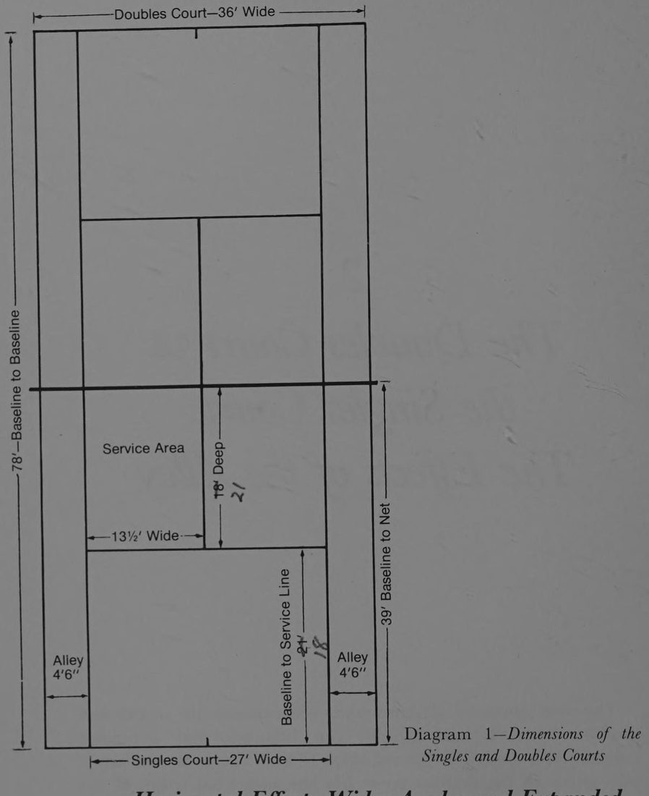
Hình 1: Kích thước của Sân Đánh Đơn và Sân Đánh Đôi
Điều khác biệt quan trọng nhất giữa hai sân là vùng thi đấu bao quanh chúng. Các hành lang biên cho phép bạn tạo ra những góc rộng hơn, và những khả năng như vậy mở rộng vùng
The most important difference between the two courts is the playing area surrounding them. The alleys allow you to make wider angles, and such possibilities expand your opponent’s
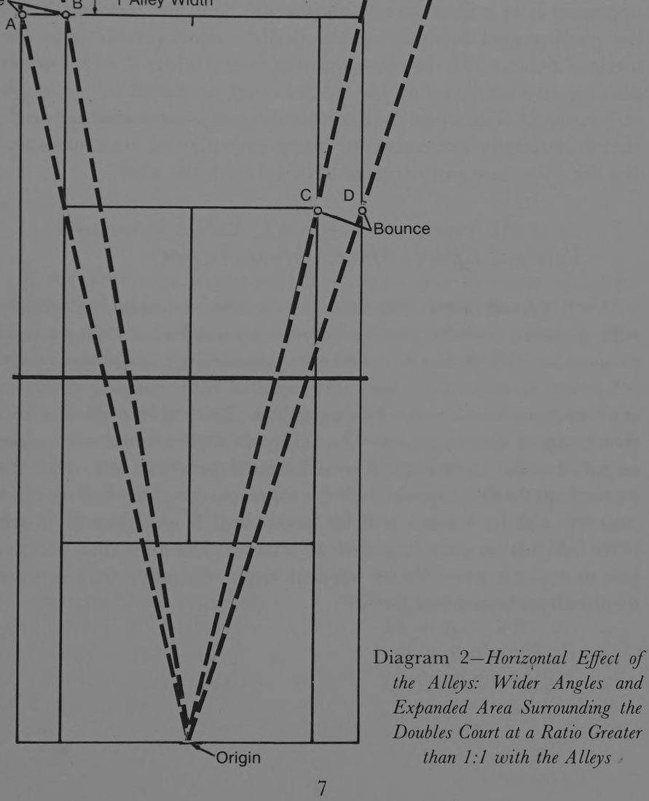
vùng thi đấu bao quanh hành lang biên của đối thủ với tỷ lệ lớn hơn 1:1
playing area surrounding his or her alley at a ratio greater than 1:1
Hình 2.
Khi Bóng Nảy Ở Góc Ngoài Cùng của Vạch Cuối Sân.
When the Ball Bounces at the Outermost Corner of the Baseline.
Hãy so sánh hiệu ứng của góc nảy tại góc ngoài cùng của vạch cuối sân đánh đôi (Điểm nảy A) với hiệu ứng của góc nảy tại góc ngoài cùng của vạch cuối sân đánh đơn (Điểm nảy B). Khi đối thủ của bạn ở cách vạch cuối sân một khoảng bằng một hành lang biên, vùng thi đấu của người đó bao quanh sân đánh đôi do góc của Điểm nảy A tạo ra là rộng hơn
Compare the effect of the angle of the bounce at the outermost corner of the baseline of the doubles court (Bounce A) with that of the angle of the bounce at the outermost corner of the baseline of the singles court (Bounce B). When your opponent is at a distance one alley-width from the baseline, his or her playing area sur- rounding the doubles court produced by the angle of Bounce A is 1 Alley 1% Alley Width any —-| Widths hn
Hình 2: Hiệu ứng theo chiều ngang của các hành lang biên: Những góc rộng hơn và
vùng thi đấu bao quanh sân đánh đơn do góc của Điểm nảy B tạo ra một khoảng bằng một hành lang biên. Như vậy hành lang biên cho phép bạn tạo ra một góc mà theo chiều ngang làm tăng vùng thi đấu của đối thủ quanh sân theo tỷ lệ 1:1 với hành lang biên.
surrounding the one alley-width wider than his or her playing area singles court produced by the angle of Bounce B. The alley thus permits you to make an angle that horizontally increases your op- playing area surrounding the court at a ratio of 1:1 with ponent’s the alley.
Khi Bóng Nảy Ở Góc Ngoài Cùng của Vạch Giao Bóng.
When the Ball Bounces at the Outermost Corner of the Service Line.
Bây giờ hãy so sánh hiệu ứng của góc nảy tại góc ngoài cùng của vạch giao bóng trên sân đánh đôi (Điểm nảy D) với hiệu ứng của góc nảy tại góc ngoài cùng của vạch giao bóng trên sân đánh đơn (Điểm nảy C). Khi đối thủ của bạn ở cách vạch cuối sân một khoảng bằng một hành lang biên, vùng thi đấu của người đó bao quanh sân đánh đôi do góc của Điểm nảy D tạo ra rộng hơn vùng thi đấu bao quanh sân đánh đơn do góc của Điểm nảy D tạo ra hơn một hành lang biên. Như vậy hành lang biên cho phép bạn tạo ra một góc nhọn hơn, theo chiều ngang làm tăng vùng thi đấu của đối thủ quanh sân theo tỷ lệ lớn hơn 1:1 với hành lang biên.
the effect of the angle of the bounce at the Compare now outermost corner of the service line of the doubles court (Bounce D) with that of the angle of the bounce at the outermost corner of the service line of the singles court (Bounce C). When your opponent is at a distance one alley-width from the baseline, his or her playing area surrounding the doubles court produced by the angle of Bounce D is more than one alley-width wider than his or her playing area surrounding the singles court produced by the angle of Bounce D. The alley thus permits you to make a sharper angle that horizontally increases your opponent’s playing area surround- ing the court at a ratio greater than 1:1 with the alley.
Hiệu Ứng Theo Chiều Dọc: Những Góc Tù HơnVertical Effect: More Obtuse Angles
Khi nói về những khoảng cách được tạo ra bởi các góc, chúng ta thường nhắc đến khoảng cách theo chiều ngang và bỏ qua những ảnh hưởng theo chiều dọc
When we talk about the distances created by angles, we usually refer to horizontal distance and overlook the effects on the vertical
Hình 3. Không xét đến những ảnh hưởng thứ yếu như độ xoáy của bóng và tốc độ của mặt sân, hãy so sánh quả bóng nảy trên vạch đánh đơn (Điểm nảy A) với quả bóng nảy trên vạch đánh đôi (Điểm nảy B) từ cùng một điểm xuất phát. Bởi vì hành lang biên cho phép bóng đi theo một độ dốc thoải hơn, góc theo chiều dọc của Bóng B (30 độ) sẽ tù hơn góc của Bóng A (45 độ) và cú nảy của nó sẽ thấp hơn. Như vậy Bóng B sẽ khó hơn nhiều để đối thủ của bạn có thể cứu được. Hành lang biên vì thế cho phép bạn tạo ra một góc dọc tù hơn — một góc gây khó chịu hơn cho đối thủ.
influences as spin of the ball and speed of court surface, compare the ball that bounces on the singles line (Bounce A) with the ball that bounces on the doubles line (Bounce B) from the very same origin. Because the alley allows a flatter slope of the ball, Ball B’s vertical angle (30 degrees) will be more obtuse than Ball A’s (45 degrees) and its bounce will be lower. Ball B will thus be much more difficult for your opponent to retrieve. The alley thus permits you to make a more obtuse vertical angle—an angle that is more troublesome for your opponent.
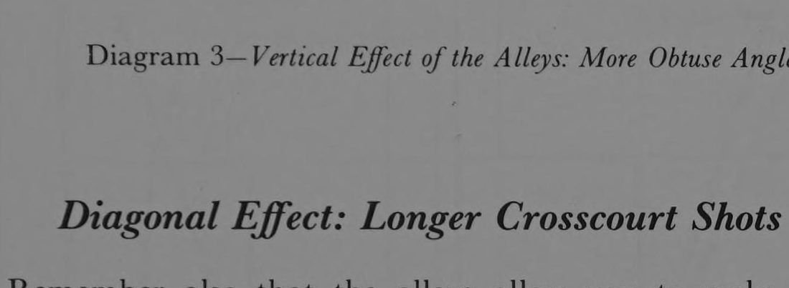
Đánh Đơn Đánh Đôi cao Điểm xuất phát
Singles Doubles igh Origin ?
Hình 3: Hiệu ứng theo chiều dọc của các hành lang biên: Những góc tù hơn
là một yếu tố quan trọng cần cân nhắc khi đối thủ của bạn đứng lưới và bạn định lốp bóng.
is an important consideration when your opponents are at net and you plan to lob.
Hình 4. Dùng những con số tùy ý cho các kích thước sao cho cho ra những con số tròn đẹp, hãy so sánh độ dài của một cú lốp bóng chéo sân trên sân đánh đơn (C1) với độ dài của một cú lốp bóng chéo sân trên sân đánh đôi (Cz) bằng công thức tính cạnh huyền, A2 + B2 = C2
lốp bóng chéo sân trong sân đánh đơn (C1) với lốp bóng chéo sân trong sân đánh đôi (Cz) bằng cách dùng công thức tính cạnh huyền, A2 + B2 = C2
crosscourt lob in a singles court (C1) with that of a crosscourt lob in a doubles court (Cz) by using the formula for the hypotenuse, A2 + B2 = C2
Lốp Bóng Chéo Sân trên Sân Đánh Đơn Lốp Bóng Chéo Sân trên Sân Đánh Đôi
Singles Crosscourt Lob Doubles Crosscourt Lob
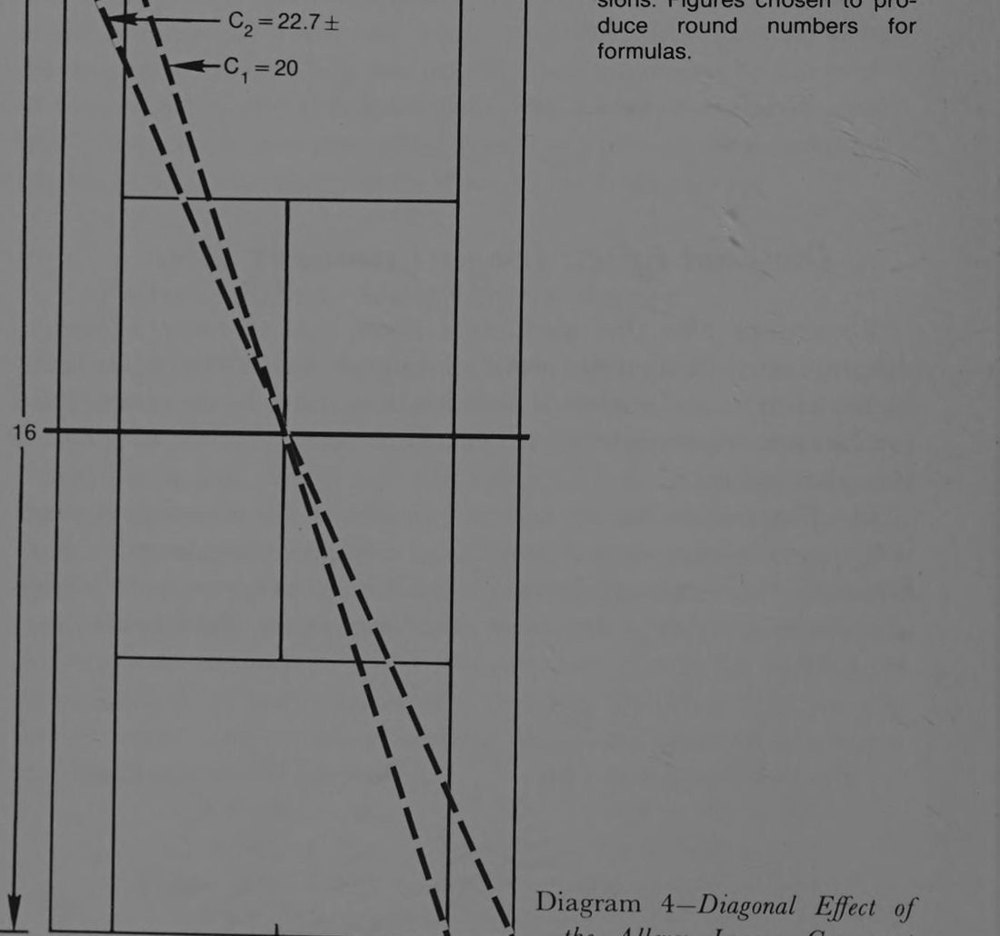
Các hành lang biên của sân đánh đôi cũng làm tăng thời gian bay có thể có của bóng. Thời gian bay càng dài và bạn càng chờ lâu mới trả bóng, thì đối thủ của bạn càng có nhiều thời gian để tận dụng sự do dự đó mà áp sát lưới. Để tránh tình huống này, hãy cắt ngắn thời gian bay của bóng bằng cách đánh bóng càng sớm càng tốt, qua đó giảm thời gian hồi phục của đối thủ và cho phép bạn tiến lên đặt bóng vào những
The alleys of the doubles court also increase the possible flight time of the ball. The longer the flight time and the longer you wait to return the ball, the more time your opponents have to take advantage of the hesitation and close the net. To avoid this situation, cut off the flight time of the ball by taking it as soon as possible, thereby reducing your opponents’ recovery time and allowing you to move forward and place the ball to unprotected Note: Figures on this diagram
Hình 4: Hiệu ứng theo đường chéo của các hành lang biên: Những cú đánh chéo sân dài hơn
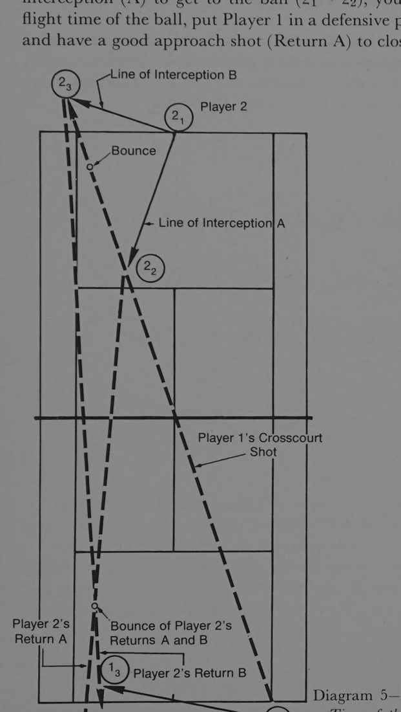
vùng không được bảo vệ. Hãy nhớ rằng — không có luật nào bắt buộc bóng phải nảy trước khi bạn đánh, ngoại trừ khi giao bóng.
areas. Remember—there is no rule that the ball must bounce before you hit it, except on serve.
Hình 5. Giả sử bạn là Đấu thủ 2, và bạn phải trả một
cú đánh chéo sân từ Đấu thủ 1. Nếu bạn dùng đường đón bóng tốt hơn
crosscourt shot from Player 1. If you use the better line of
Hình 5: Giảm Thời Gian Tấn Công của Bóng để Giành
dùng đường đón bóng thay thế (B) để tiếp cận bóng (2 > 23), thời gian bay của bóng sẽ tăng lên, bạn phải trả bóng từ ngoài sân và không có khả năng tấn công nào, đồng thời có lẽ bạn sẽ trả bóng gần Đấu thủ 1 hơn (Cú trả B), qua đó cho phép Đấu thủ 1 có thể đón bóng tấn công (11 > 13).
use the alternate line of interception (B) to get to the ball (2 > 23), the flight time of the ball is increased, you must return from out of court and have no possible offensive play, and you will probably return closer to Player 1 (Return B), thereby allowing a possible offensive interception by Player 1 (11 > 13).
Giờ đây khi bạn đã thấy các hành lang biên của sân đánh đôi làm tăng khả năng về góc đánh, vùng thi đấu bao quanh, những cú đánh chéo sân và thời gian bay của bóng như thế nào, bạn nên ý thức hơn về vai trò của những yếu tố này trong chiến thuật và chiến lược đánh đôi.
Now that you see how the alleys of the doubles court increase the possibilities of angles, surrounding playing area, crosscourt shots, and flight time, you should become more aware of the role these factors play in the tactics and strategy of doubles.
3. Chiến Thuật Đánh Đôi So Với Đánh Đơn
Chiến Lược Đánh Đôi so với Đánh Đơn
Strategy vs. Singles
Chiến Thuật và Chiến LượcTactics and Strategy
Như tôi đã đề cập trước đó, đánh đơn và đánh đôi là hai lối chơi rất khác nhau. Chúng ta hãy định nghĩa sự khác biệt giữa chúng qua các cú đánh vốn là công cụ của cả hai lối chơi. Bằng cách hiểu được những khả năng và hạn chế của từng cú đánh, bạn sẽ hiểu rõ hơn cách thức và lý do vì sao chiến thuật và chiến lược sử dụng những cú đánh ấy tách biệt lối chơi này với lối chơi kia.
As I mentioned before, singles and doubles are two very different games. Let us define their differences in terms of the strokes that are the tools of both games. By understanding the possibilities and limitations of each stroke, you will be better able to understand how and why the tactics and strategy of using these strokes separate one game from another.
Cú Giao BóngThe Serve
Quần vợt bắt đầu phát triển nhanh chóng trong thời kỳ của lối chơi giao bóng rồi lên lưới. Tất cả chúng ta đều từng ấn tượng với những cú giao bóng như tên lửa của các tay vợt nhà nghề như Stan Smith, Arthur Ashe và Roscoe Tanner. Vì thế cũng dễ hiểu khi nhiều tay vợt nghiệp dư coi sức mạnh là chìa khóa của một cú giao bóng thành công.
Tennis popularity started to grow rapidly during the era of the serve-and-volley game. We have all been impressed with the rocket-like serves of pros like Stan Smith, Arthur Ashe, and Roscoe Tanner. It is therefore understandable that many amateur players consider power the key to a successful serve.
Tuy nhiên, như tôi sẽ trình bày ngay sau đây, trong cả đánh đơn lẫn đánh đôi, cú giao bóng không nhất thiết phải mạnh mới hiệu quả. Cú giao bóng cũng không nên là vũ khí tấn công duy nhất trong bất kỳ lối chơi nào. Tôi đã trụ được trong nhóm mười tay vợt nữ hàng đầu thế giới hơn mười lăm năm với một cú giao bóng mà Bud Collins đặt tên là “phịch phịch”. Nó chậm đến mức trong một cuộc thi giao bóng nhanh ở Washington, D.C., cú giao bóng của tôi không hề làm kim của chiếc máy dùng để chấm thi nhích lên.
However, as I’ll now show, in neither singles nor doubles does the serve have to be powerful to be effective. Nor should the serve be the sole offensive weapon in either game. I have managed to stay in the top ten among women players in the world for more than fifteen years with a serve that Bud Collins has dubbed “pitty- pat.” It is so slow that in a fast-serve contest in Washington, D. C., my serve never moved the needle on the machine used to judge the contest.
Trong Đánh ĐơnIn Singles
Trước tiên hãy xem xét cú giao bóng trong đánh đơn. Có ba chiến lược cơ bản trong đánh đơn: giao bóng rồi lên lưới, đánh cuối sân, hoặc lối hỗn hợp toàn sân của cả hai. Mỗi chiến lược đòi hỏi yêu cầu giao bóng khác nhau. Những hướng dẫn sau đây có thể giúp bạn xác định chiến lược và chiến thuật giao bóng của mình tùy theo điểm yếu và điểm mạnh của đối thủ: - Nếu bạn thấy rằng đối thủ của mình cần một mục tiêu ở lưới mới có thể trả bóng thành công, hoặc chỉ có thể phản xạ đưa bóng trở lại, thì đừng chơi giao bóng rồi lên lưới. Chiến lược này chỉ bù đắp cho những hạn chế của đối thủ thay vì tận dụng chúng. Một lối đánh cuối sân bền bỉ cùng những cú giao bóng chậm, xoáy sẽ khiến đối thủ mất tinh thần và rời khỏi trận đấu.
Consider first the serve in singles. There are three basic strategies in singles: serve-and-volley, backcourt, or an all-court mixture of the two. Each strategy has a different serving requirement. The following guidelines might help you to determine your strategy and your service tactics according to the weaknesses and strengths of your opponent: - If you see that your opponent needs a net target for a successful return or can only reflex a ball back, do not play serve- and-volley. This strategy will only make up for his or her limitations rather than take advantage of them. A steady back- court game and slow, twisting serves will frustrate him or her out of the match.
* Bạn có thể thấy rằng một cú giao bóng mạnh và rộng là lợi thế trước một đối thủ yếu hơn, ít kinh nghiệm, người vung vợt muộn một cách tuyệt vọng và vì thế vô tình đưa bóng dọc biên qua mặt bạn. Nếu sau đó bạn đổi chiến thuật sang cú giao bóng với tốc độ bằng một nửa, có lẽ người đó sẽ đánh bóng ra ngoài hết.
* You may find that a hard, wide serve is an asset for a weaker, less experienced opponent who desperately swings late and thereby unintentionally passes you down the line. If you then change your tactic to a one-half-speed serve, he or she will probably hit everything out.
* Nếu đối thủ của bạn yếu tay và chỉ chặn bóng trả lại, hãy giao bóng rộng sang bên này hay bên kia. Người đó sẽ bị kéo căng ra và không đủ sức để trả bóng thành công.
* If your opponent is weak-armed and only blocks balls back, serve wide to either side. He or she will be stretched far and will not have the strength for a successful return.
* Nếu bước chân của người đó kém và việc chuẩn bị chậm chạp, hãy giao bóng với tốc độ ba phần tư vào người.
* If his or her footwork is poor and preparation slow, serve three- quarter speed into the body.
* Bất kể đối thủ của bạn giỏi đến đâu, hãy luôn khiến người đó mất thăng bằng bằng cách thay đổi tốc độ, độ xoáy xoắn và độ xoáy của cú giao bóng.
* No matter what the quality of your opponent, keep him or her off balance by varying the speed, twist, and spin of your serve.
* Nếu bạn đang thua, hãy thử những cú giao bóng một sâu và nhẹ vào bên trái.
* If you are losing, try deep, soft first serves to the backhand.
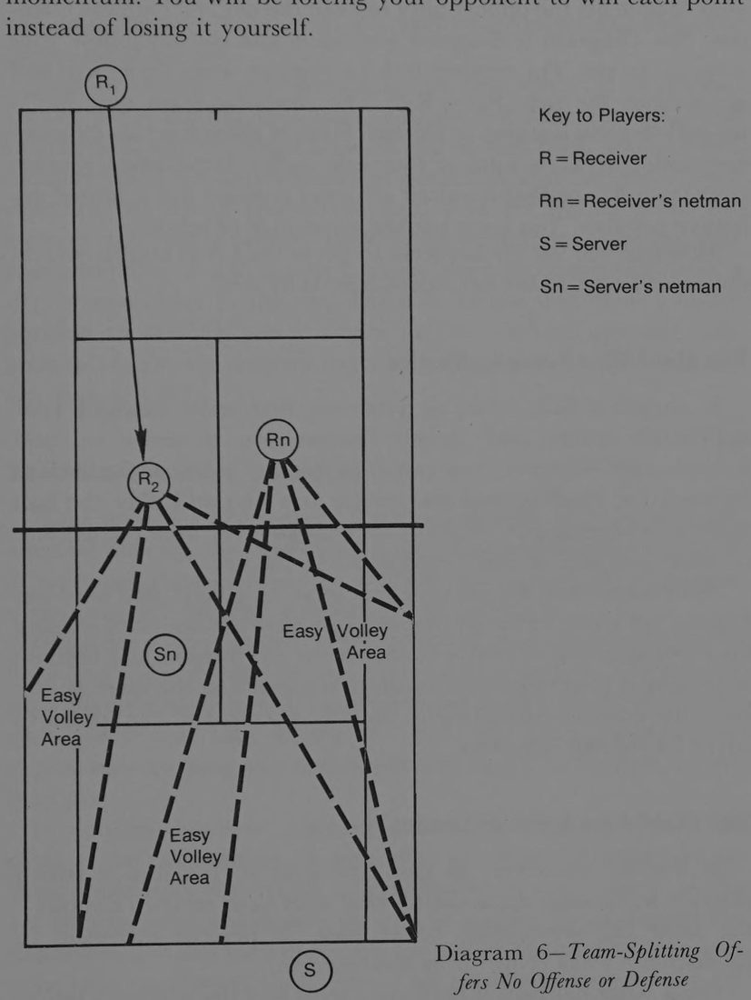
Trừ khi đối thủ của bạn còn thành công hơn nữa, hãy giữ vững chiến thuật ấy. Qua thời gian, áp lực từ việc bạn giảm bớt sai sót cùng sự tấn công liên tục vào bên trái của người đó sẽ dần gây tác dụng.
Unless your opponent is having even more success, keep up the tactic. Over a period of time the pressure of your reduced errors and the constant attack on his or her backhand will take its toll.
Đối thủ của bạn sẽ phải vất vả cho từng điểm và sẽ thua
Your opponent will have to work for each point and will lose
Hình 6: Việc Chia Rẽ Đội Hình Không Tạo Ra Tấn Công hay Phòng Thủ
Trong Đánh ĐôiIn Doubles
Trong đánh đôi chỉ có một chiến lược cơ bản: Hãy giao bóng một vào sân và lên lưới nhanh nhất có thể. Bạn không thể cho phép mình đứng lại ở vạch cuối sân trong khi bạn cặp của bạn đang ở lưới. Việc chia rẽ đội hình như vậy cho đối thủ của bạn cơ hội áp sát lưới và giành thế tấn công
In doubles there is only one basic strategy: Get your first serve in cannot afford to stay on and go to the net as fast as you can. You the baseline while your partner is at net. Such team-splitting gives your opponents the opportunity to close the net and gain the offen-
Hình 6. Giả sử bạn giao bóng và không theo cú giao bóng lên lưới. Người nhận bóng không cảm thấy áp lực khi trả bóng, và người đó sẽ tiến lên lưới (Ri > Re). Đội nhận bóng giờ đây có một vị trí tấn công thống nhất ở lưới. Mỗi người trong số họ có hai vùng vô-lê dễ khác nhau — tổng cộng bốn vùng vô-lê dễ — được để trống, bởi vì đội của bạn không có vị trí tấn công thống nhất cũng không có vị trí phòng thủ thống nhất. Bạn đã đánh mất lợi thế của việc giao bóng.
tiến lên lưới (Ri > Re). Đội nhận bóng giờ đã có một thế tấn công thống nhất tại lưới
approaches the net (Ri > Re). The receiving team now has a united offensive position at the net. Each of them has two different easy-volley areas—a total of four easy-volley areas—open because your team has neither a united offensive position nor a united de- fensive position. You have lost the advantage of serving.
Dù bạn dùng cú giao bóng mạnh để lên lưới trong đánh đơn, bạn không dùng nó để lên lưới trong đánh đôi. Vì sao không?
Although you use the big serve to get to the net in singles, you do not use it to get to the net in doubles. Why not?
Cú Giao Bóng Một Mạnh trong Đánh ĐơnThe Hard First Serve in Singles
Trong đánh đơn, một cú giao bóng một nhanh, rộng hoặc ép vào người sẽ làm yếu cú trả bóng của đối thủ và qua đó cho phép bạn tiến lên và giữ thế tấn công. Bạn có thể đón cú vô-lê đầu tiên ở tận phía sau, giữa vạch cuối sân và vạch giao bóng, mà vẫn đánh bóng an toàn vào một khoảng trống trên sân đủ xa người nhận bóng để cho bạn thời gian tiến gần lưới hơn nữa.
In singles a fast, wide, or jamming first serve weakens your opponent’s return and thereby allows you to move up and maintain the offensive. You can take the first volley as far back as between the baseline and the service line and still play the ball safely to an opening in the court far enough away from the receiver to allow you time to move even closer to the net.
Quan trọng hơn, nếu cú giao bóng một của bạn bị lỗi, bạn không cần phải theo cú giao bóng hai lên lưới. Bạn có quyền chọn đứng chờ một cú trả bóng mạnh cho cú giao bóng hai của mình ở vạch cuối sân và lốp bóng hoặc đánh bóng qua người nếu đối thủ lao lên lưới. Vì thế bạn không chịu áp lực phải giao bóng một vào sân và có thể mạnh dạn nhắm tới cú giao bóng một mạnh.
More important, should your first serve be a fault, you need not follow your second serve to the net. You have the option of waiting for a strong return of your second serve at the baseline and lobbing or passing if your opponent rushes to the net. You therefore do not have the pressure of getting in your first serve and can afford to strive for the big first serve.
Cú Giao Bóng Một Mạnh trong Đánh ĐôiThe Hard First Serve in Doubles
Trong đánh đôi, tuy nhiên, để có thời gian vào được một vị trí vững chắc ở lưới — điều tuyệt đối bắt buộc sau cú giao bóng của bạn trong đánh đôi — thì cú giao bóng mạnh ấy phải thành công ít nhất 70 phần trăm trong việc khiến người nhận bóng trả bóng yếu.
In doubles, however, to gain the time to get into a strong position at the net—an absolute must after your serve in doubles— the same big serve must be at least 70 percent successful in producing a weak return from the receiver.
Hãy nghĩ xem điều gì xảy ra nếu cả cú giao bóng của bạn lẫn cú trả bóng của người nhận đều mạnh và nhanh: Thời gian và khả năng của người đứng lưới bên bạn trong việc uy hiếp người nhận bóng bằng mối đe dọa cướp bóng (poach) sẽ bị giảm đi. Thời gian của chính bạn để lên lưới cũng bị giảm, và bạn buộc phải thực hiện cú vô-lê đầu tiên — có lẽ là một cú yếu — ngay bên trong vạch cuối sân. Người đứng lưới bên phía người nhận bóng có lẽ sẽ đón cú vô-lê yếu của bạn, và người đứng lưới bên bạn sẽ không có thời gian bọc lót cho pha đón bóng đó. Người nhận bóng sẽ áp sát lưới trước bạn, và đối thủ của bạn sẽ nắm quyền kiểm soát lưới.
Think what happens if both your serve and the receiver’s return are hard and fast: Your netman’s time and ability to intimidate the receiver with the threat of poaching is reduced. Your own time to move to the net is reduced, and you must make your first volley—probably a weak one—just inside the baseline. The re- ceiver’s netman will probably intercept your weak volley, and your netman will not have time to cover the interception. The receiver will close the net before you do, and your opponents will take command of the net.
Ngoài ra, trong đánh đôi, tỷ lệ giao bóng một vào sân của bạn là điều then chốt. Khác với khi giao bóng trong đánh đơn, bạn không có quyền chọn đứng lại phía sau với cú giao bóng hai. Nếu bạn đứng lại, bạn sẽ đối mặt với đúng tình huống mà tôi vừa mô tả, và người nhận bóng sẽ áp sát lưới trước bạn. Thực tế, với cú giao bóng hai, người nhận bóng có thể vào thế táo bạo hơn, tấn công hơn. Biết rằng cú giao bóng hai của bạn sẽ không phải là một cú giao bóng mạnh, người đó sẽ tiến gần lưới thêm một hai bước. Ở đó người đó sẽ ở vị trí tốt hơn để nhắm vào những góc rộng hơn và có lẽ để thử thách người đứng lưới bên bạn. Một lần nữa, người nhận bóng lại có cơ hội áp sát lưới tốt hơn bạn.
Also, in doubles your percentage of first serves in is critical.
Khác với khi giao bóng trong đánh đơn, bạn không có lựa chọn đứng lại ở vạch cuối sân
Unlike when serving in singles, you do not have the option of staying back on the second serve. If you do stay back, you will face the same set of circumstances I just described, and the receiver will close the net before you do. In fact, with the second serve, the receiver can take a bolder, more offensive stance. Knowing that your second serve will not be a power serve, he or she will move a step or two closer to the net. There he or she will be in a better position to aim for wider angles and to perhaps test out your netman. Again, the receiver has a better opportunity of closing the net than you do.
Cú Giao Bóng Hiệu Quả Nhất trong Đánh ĐôiThe Most Effective Doubles Serve
Nếu cú giao bóng mạnh, nhanh không phải là cú giao bóng hiệu quả nhất cho đánh đôi, thì cái gì mới là? Một cách tiếp cận câu hỏi này là xem xét những cú trả giao bóng nào hiệu quả nhất trong đánh đôi, rồi từ đó xác định cú giao bóng nào sẽ ngăn chặn hoặc vô hiệu hóa những cú trả bóng ấy.
If the hard, fast serve is not the most effective serve for doubles, what is? One approach to this question is to consider what returns of serve are most effective in doubles and from there determine what serve will prevent or frustrate such returns.
Trong đánh đơn, cú trả bóng tốt nhất của đối thủ trước cú giao bóng của bạn là một cú sâu và rộng, qua đó buộc bạn phải di chuyển ngang và làm chậm bước tiến của bạn lên lưới. Vì thế bạn giao bóng với tất cả độ cắt, độ xoáy và sức mạnh mà bạn có thể huy động để hạn chế cơ hội đánh bóng qua người và buộc bạn phải di chuyển sang bên thay vì tiến lên của người nhận bóng.
In singles your opponent’s best return of your serve is one that is deep and wide, thereby forcing you to move laterally and slowing your advance to the net. You therefore serve with all the slice, spin, and power you can muster in order to limit the receiver’s opportunity to pass you and make you move to the side rather than up.
Trong đánh đôi, tuy nhiên, khả năng của người đứng lưới bên bạn trong việc bao quát một nửa sân ở lưới làm giảm khả năng có những cú trả bóng ngang hiệu quả.
In doubles, however, your netman’s ability to cover half the court at the net reduces the possibility of effective lateral returns.
Cú trả bóng tốt nhất của đối thủ là vào ngay dưới chân bạn khi bạn tiến vào lưới sau khi giao bóng — một cú đánh rất khó xử lý. Để chống lại hiệu quả của kiểu trả bóng này, hãy dùng cú giao bóng với tốc độ ba phần tư kèm chút xoáy xoắn để cho bạn thời gian tiến vào đủ gần để lưới thực sự che chắn cho đôi chân bạn. Độ xoáy xoắn thêm vào cú giao bóng có thể khiến người nhận bóng mất thăng bằng đủ để làm yếu cú trả bóng và qua đó cho bạn thêm cơ hội thực hiện một cú vô-lê hiệu quả. Billy Jean King nói rằng cú giao bóng của tôi chậm và đặt bóng tốt đến mức tôi đã đứng sẵn ở lưới trước khi cô ấy có dịp đánh cú trả bóng.
Your opponent’s best return is at your feet as you come in to the net after serving—a very difficult shot to handle. To counteract the effectiveness of this kind of return, use a three-quarter-speed serve with some twist to allow yourself time to get in close enough for the net to actually protect your feet. The added twist on your serve may unbalance the receiver enough to weaken the return and thereby give you more opportunity to make an effective volley. Billy Jean King says that my serve is so slow and well-placed that I’m stand- ing at the net before she gets a chance to hit the return.
Cú Trả Giao BóngThe Return of Serve
Tôi đã bàn sơ qua về cú trả giao bóng trong phần trước, nhưng giờ hãy thử định nghĩa rõ hơn những khác biệt giữa cú giao bóng trong đánh đơn và đánh đôi. Bây giờ hãy tưởng tượng bạn là người nhận bóng và cân nhắc cách hóa giải hiệu quả nhất lợi thế của người giao bóng bằng cú trả bóng của bạn.
serve briefly in the previous section, but I discussed the return of returns of let us try to define further the differences between the serve in singles and doubles. Imagine now that you are the receiver and consider how to most effectively neutralize the advantage of the server by your return.
Trong Đánh ĐơnIn Singles
Vùng Trả Bóng. Như tôi đã chỉ ra trước đó, vùng trả bóng trong đánh đơn ít bị hạn chế hơn nhiều so với đánh đôi vì bạn chỉ có một đối thủ. Bạn có thể trả bóng sâu và rộng, qua đó kéo người giao bóng sang một bên và cản trở bước tiến lên lưới của người đó.
Area of Return. As I pointed out earlier, the area of return in singles is much less restricted than in doubles because you have only one opponent. You are able to return deep and wide and there- by to pull the server to the side and impede his or her advance to the net.
Cú Đánh Trả Bóng. Trong đánh đơn, bạn cũng có thời gian để thực hiện một cú đánh nền (groundstroke) bình thường làm cú trả bóng. Nếu đối thủ của bạn lên lưới sau một cú giao bóng mạnh, bạn có khả năng tốt để đánh bóng qua người đó bằng một cú đánh nền mạnh tương đương. Nếu đối thủ của bạn không lên lưới (trong đánh đơn không có áp lực buộc phải làm vậy), thì cú trả bóng mạnh của bạn ít nhất cũng sẽ phần nào làm giảm tiềm năng tấn công của người đó.
Stroke of Return. In singles you also have the time to execute a normal groundstroke as a return. If your opponent comes to net after a big serve, you have a good possibility of passing him or her with an equally powerful groundstroke. If your opponent does not come to the net (there is no pressure in singles to do so), then your strong return at least will somewhat reduce his or her offensive potential.
Thực tế, cú trả bóng của bạn có thể cảm giác mạnh hoặc đặt bóng tốt đến mức bạn có thể theo cú trả bóng lên lưới và qua đó giành được vị trí tấn công. Hoặc bạn có thể đứng ở vạch cuối sân và dùng những cú đánh nền sâu để giữ đối thủ ở vạch cuối sân cho đến khi bạn cảm thấy mình đã đặt bóng tốt đến mức đối thủ sẽ không thể đánh bóng qua người nếu bạn lên lưới. Tuy nhiên, một khi đã lên lưới, bạn phải cố thắng điểm càng sớm càng tốt, vì rất khó để một mình bạn bao quát toàn bộ lưới quá một hay hai cú vô-lê.
In fact your return might feel so strong or well-placed that you can follow your return to the net and thereby gain the offensive position. Or you can stay at the baseline and use deep groundstrokes to keep your opponent at the baseline until you feel you have placed a ball so well that your opponent will not be able to pass you if you come to the net. Once you come to the net, however, you must try to win the point as soon as possible, because it is difficult to cover the entire net yourself for more than one or two volleys.
Trong Đánh ĐôiIn Doubles
Trong đánh đôi cũng như trong đánh đơn, người giao bóng, vì là người bắt đầu lượt bóng, nắm quyền kiểm soát vị trí tấn công. Cú trả bóng của bạn nên là một nỗ lực nhằm hóa giải lợi thế đó. Những yếu tố then chốt của một cú trả bóng hiệu quả trong đánh đôi là điểm rơi và sự nhanh nhẹn.
In doubles as well as in singles, the server, because he starts play, controls the offensive position. Your return should be an attempt to neutralize that advantage. The key elements of an effective return in doubles are placement and quickness.
Vùng Trả Bóng. Hãy nhớ rằng vùng trả bóng của bạn bị hạn chế vì người đứng lưới bên phía người giao bóng có thể đón bóng ở ít nhất một nửa sân. Vì thế bạn phải trả bóng theo hướng của người giao bóng đang tiến vào. Tuy nhiên, cú trả bóng phải là một cú mà người đó không thể dễ dàng vô-lê dứt điểm. Một cú trả bóng vào ngay dưới chân người giao bóng với độ nảy hoặc độ rơi của bóng khó chịu sẽ làm người đó bực bội và suy yếu khả năng đặt một cú vô-lê mạnh, qua đó cho bạn thế cân bằng — thêm một cơ hội đánh bóng và hy vọng làm giảm thêm lợi thế ban đầu của người đó với tư cách người giao bóng.
Area of Return. Remember that your area of return is restricted because the server’s netman can intercept returns on at least one half of the court. You must return, therefore, in the direction of the incoming server. However, the return must be one that he or she cannot easily volley away for a winner. A return at the server’s feet with a troublesome bounce or drop of the ball will frustrate and weaken his or her ability to place a strong volley and thereby give you a stand-off—another chance to play the ball and hopefully to further reduce his or her initial advantage as server.
Cú đánh phổ biến nhất để đạt được cú trả bóng lý tưởng này là cú cắt bóng (chip). Trong cú đánh này bạn đánh bóng nhẹ nhàng và với độ xoáy ngược để kiểm soát. Bóng rơi nhanh và chết ngay khi chạm sân.
The most popular stroke to achieve this ideal return is the chip shot. In this stroke you hit the ball softly and with underspin for control. The ball drops quickly and dies on the bounce.
Cú Đánh Trả Bóng. Trong đánh đơn, bạn biết rằng người giao bóng có thể tiến vào sau cú giao bóng và vô-lê từ khoảng vạch giao bóng. Trong đánh đôi, bạn biết rằng người giao bóng chắc chắn sẽ tiến vào và vô-lê từ một vị trí khá sâu bên trong vạch giao bóng. Ngoài ra, trong đánh đôi, bạn cũng có nhiều khả năng tự mình tiến lên lưới sau cú trả bóng. Vì thế bạn không thể cho phép mình có thời gian, như trong đánh đơn, để đứng lùi lại và thực hiện một cú đánh nền mạnh với động tác vung vợt ra sau và động tác kết thúc (follow-through) phóng đại làm cú trả bóng. Sự phóng đại như vậy cho người giao bóng thêm thời gian tiến sát lưới hơn và cho bạn ít thời gian hơn để theo cú trả bóng lên lưới. Thay vào đó, bạn phải đứng vào gần nhất có thể để nhận bóng và dùng một cú trả bóng bằng cú đánh nền với động tác vung vợt ra sau rút ngắn và động tác kết thúc ngắn, cứng cổ tay. Sự nhanh nhẹn của kiểu trả bóng này rút ngắn thời gian người giao bóng có được để lên lưới và tăng thời gian cho bạn theo cú trả bóng lên lưới.
Stroke of Return. In singles you know that the server might move in behind the serve and volley from approximately the service line. In doubles you know that the server wz// move in and volley from well within the service line. Also, in doubles you are more likely to move to the net yourself after your return. You therefore cannot afford the time, as in singles, to stand back and execute a powerful groundstroke with exaggerated backswing and followthrough as a return. Such exaggeration affords the server more time to move in tighter to the net and gives you less time to follow your return to the net. Instead, you must stand in as close as possible to receive and use a groundstroke return with abbreviated backswing and shortened, firm-wristed followthrough. The quickness of this kind of return shortens the time the server has to get to the net and increases your time to follow your return to the net.
Cú Đánh NềnGroundstrokes
Trong Đánh ĐơnIn Singles
Cú đánh nền về cơ bản dùng cho lối đánh cuối sân, và trong đánh đơn được dùng nhiều hơn hẳn so với đánh đôi. Bạn giữ đối thủ ở phía sau bằng những cú đặt bóng sâu từ góc này sang góc kia, bóng chỉ vừa đủ qua lưới.
are used in Groundstrokes are basically for backcourt play, and are used in singles much more than in doubles. You keep your opponent back with deep corner-to-corner placements that barely clear the net.
Ie)
Ie)
he
he
Trong Đánh Đôi
In Doubles
Trong đánh đôi, bạn không thể cho phép mình có thời gian thực hiện động tác vung vợt ra sau và động tác kết thúc trọn vẹn của những cú đánh nền ở vạch cuối sân. Trước khi bạn thực hiện một cú đánh như vậy, đối thủ của bạn sẽ ở lưới và sẽ vô-lê dứt điểm cú đánh của bạn trước khi bạn kịp hồi vị. Để tiết kiệm thời gian, bạn rút ngắn động tác vung vợt ra sau và động tác kết thúc, đồng thời đón bóng ở phía trên lưới. Để tránh hoặc vô hiệu hóa cú vô-lê của đối thủ, bạn đánh bóng hướng xuống dưới vào chân đối thủ hoặc thực hiện một cú đánh nhẹ khiến bóng chết ngay khi vừa qua lưới.
In doubles you cannot afford the time to execute the full backswing and followthrough of baseline groundstrokes. Before such a stroke, your opponents will be at the you even recover from net and will volley away your shot. To save time, you shorten your backswing and followthrough and take the ball above the net. To avoid or frustrate your opponent’s volley, you hit down at an opponent’s feet or make a soft shot that dies just as it clears the net.
Qua đó bạn buộc đối thủ phải đánh bóng hướng lên. Khi ấy bạn có thể thực hiện cú dứt điểm hướng xuống.
You thereby force your opponent to hit up. Then you can make the putaway shot down.
Nếu tuy nhiên đội của bạn bị buộc phải lùi về vạch cuối sân, bạn có thể dùng những cú đánh nền như một biện pháp phòng thủ chống lại đối thủ đang ở lưới. Hãy đánh những cú đánh nền này với độ xoáy lên nhiều hơn để bóng giữ được độ thấp, hạ xuống ngay khi qua lưới, và vì thế khiến đối thủ của bạn khó xử lý. Để đánh xoáy lên, hãy giữ mặt vợt thẳng đứng và vuốt từ dưới lên — từ đáy lên đỉnh — trên quả bóng khi bóng rời khỏi vợt bạn để tạo cho bóng độ xoáy theo hướng nó đang bay. Độ xoáy của bóng khiến bóng khó vô-lê. Và nếu bóng nảy, nó thường nhảy vọt lên và tăng tốc.
If, however, your team is forced to the baseline, you can use groundstrokes as a defensive measure against your opponents at the net. Hit these groundstrokes with extra topspin so that the ball stays low, dips as it clears the net, and therefore is difficult for your opponents to handle. To hit topspin, keep your racquet face vertical and brush up—bottom to top—on the ball as it leaves your racquet to give it spin in the direction it is traveling. The spin of the ball makes the ball difficult to volley. And if it bounces, it usually hops and gains pace.
Hoặc, trong cùng tình huống bạn ở vạch cuối sân và đối thủ ở lưới, bạn cũng có thể thử một lối đánh sức mạnh bằng những cú đánh nền — nghĩa là đánh hai ba quả bóng phẳng, mạnh để uy hiếp đối thủ khiến họ lùi lại khỏi lưới một hai bước, rồi đánh một cú xoáy lên sẽ rơi xuống ngay dưới chân họ.
Or, given the same situation of being at the baseline with your opponents at net, you also can try a power play with groundstrokes—that is, hitting two or three flat, hard balls to intimidate your opponents into taking a step or two back from the net, and then hitting a topspin shot that will drop at their feet.
Cú Lốp BóngThe Lob
Lốp bóng trước hết là một cú đánh phòng thủ trong cả đánh đơn lẫn đánh đôi. Bằng cách đưa bóng lên cao, bạn có thể có thêm thời gian hồi vị sau khi bị một cú đánh đặt bóng tốt kéo ra khỏi vị trí. Hoặc bạn có thể dùng cú lốp bóng để tạo khoảng trống ở lưới.
The lob is primarily a defensive stroke in both singles and doubles. By sending the ball high, you can gain time to recover after being pulled out of position by a well-placed shot. Or you can use the lob to open the net.
Hãy xem xét những khả năng sau đây của cú lốp bóng trong đánh đôi: * Một cú lốp bóng tốt, nhờ cho bạn cơ hội tiến lên trong khi đối thủ lùi về cứu bóng, có thể đảo ngược tình huống mà đội của bạn đang ở vạch cuối sân và đối thủ đang ở lưới.
Consider the following possibilities of the lob in doubles: * A good lob, by giving you the opportunity to move up as your opponents retreat to retrieve, may reverse a situation where your team is at the baseline and your opponents are at the net.
* Một cú lốp bóng vô-lê nhanh vượt qua đầu đối thủ thậm chí có thể khiến họ đứng chôn chân và trở thành một cú dứt điểm cho bạn. Tuy nhiên, chỉ dùng chiến thuật này nếu đối thủ của bạn đứng quá sát lưới đến mức bạn có tương đối ít lựa chọn. Khi bóng ở phía trên lưới, luôn tốt nhất là vô-lê hướng xuống, nhưng cú lốp bóng vô-lê là một giải pháp thỉnh thoảng dùng cho quả bóng ở dưới lưới.
* A quick lob volley over your opponents’ heads may even catch them flat-footed and turn out to be a winner for you. However, use this tactic only if your opponents are so tight at the net that you have relatively few options. When the ball is above the net, it is always best to volley downward, but the lob volley is an occasional answer for the ball below the net.
- Một cú lốp bóng vượt qua đầu người đứng lưới bên phía người giao bóng như một cú trả giao bóng có thể làm mất thăng bằng thế tấn công ở lưới của người giao bóng và qua đó cho đội của bạn cơ hội làm giảm lợi thế của người giao bóng.
- A lob over the head of the server’s netman as a return of serve can unbalance the net attack of the server and thereby give your team the opportunity to reduce the server’s advantage.
Lưới và Cú Vô-LêThe Net and Volley
Trong Đánh ĐơnIn Singles
Trong đánh đơn, bạn phải giành được lưới bằng những cú đặt bóng không cho đối thủ thực hiện những cú đánh qua người. Và một khi đã ở lưới, bạn phải thắng điểm càng sớm càng tốt vì bạn càng ngày càng khó bao quát toàn bộ lưới một mình sau khi đã thực hiện cú vô-lê đầu tiên hoặc thứ hai.
In singles you must earn the net with placements that will not allow your opponent to make passing shots. And once you are at the net, you must win the point as soon as possible because it becomes increasingly more difficult for you to cover the entire net yourself once you have made your first or second volley.
Trong Đánh ĐôiIn Doubles
Trong đánh đôi, bạn kiểm soát lưới với tư cách người giao bóng nhờ vị trí xuất phát của người đứng lưới bên bạn. Người đó có thể bao quát 50 phần trăm lưới ngay cả trước khi bạn giao bóng, và nếu cú giao bóng của bạn tốt, bạn có thể khép kín 50 phần trăm còn lại gần như trước khi bóng tới người nhận bóng. Như trong đánh đơn, một khi đã kiểm soát lưới, bạn nên thắng điểm càng sớm càng tốt để ngăn đối thủ giành được thế cầm cự có thể làm suy yếu lợi thế của bạn.
In doubles you control the net as server by virtue of the starting position of your netman. He is able to cover 50 percent of the net before you even serve the ball, and if your serve is good, you can close the other 50 percent almost before the ball reaches the receiver. As in singles, once you have control of the net, you should win the point as soon as possible to prevent your opponents from gaining a stand-off position that could possibly weaken your advantage.
Thống trị lưới không có nghĩa là bạn nên giới hạn lối tấn công của mình vào những cú vô-lê sức mạnh. Giống như những cú giao bóng mạnh, những cú đánh lưới mạnh nhưng thực hiện kém thường sinh ra những cú trả bóng còn nhanh hơn, không cho bạn đủ thời gian hồi vị và chuẩn bị. Đón bóng sớm và đặt bóng vững chắc, chứ không chỉ sức mạnh, là những chìa khóa của lối đánh lưới tốt. Tuy nhiên, đừng ngần ngại đánh mạnh khi bạn biết mình có một tình huống thuận lợi. Dù vậy, hãy luôn sẵn sàng cho một cú trả bóng.
Dominating the net does not mean that you should limit your offense to power volleys. Like big serves, big net shots poorly played often beget even faster returns that do not give you enough time to recover and prepare. Early interception and solid placement, not just power, are the keys to good net play. However, do not hesitate to hit out when you know you have a good setup. Even so, always be prepared for a return.
Đối lập với cú lốp bóng, và có giá trị tương đương, là cú đập bóng trên cao. Cú đập bóng trên cao, hay cú smash, đòi hỏi sự hòa quyện giữa sức mạnh và điểm rơi. Giống như cú giao bóng, đây là một cú đánh tấn công mà nếu thực hiện không đúng có thể tạo ra phản tác dụng thay vì một cú dứt điểm.
The antithesis of the lob, and of comparable value, is the over- head. The overhead, or smash, requires a blend of power and placement. Like the serve, it is an offensive shot that, if played in- correctly, can produce a backlash rather than a winner.
Trong Đánh ĐơnIn Singles
Trong đánh đơn, điểm rơi, chứ không phải sức mạnh, là điều quan trọng hàng đầu của cú đập bóng trên cao. Vì đối thủ của bạn phải bao quát toàn bộ sân của người đó, bạn thường có thể thắng điểm chỉ đơn giản bằng cách đánh bóng vào chỗ người đó không có mặt.
In singles, placement, and not power, of the overhead is of primary importance. Because your opponent has his or her entire court to cover, you usually can win your point by simply hitting the ball where he or she is not.
Trong Đánh ĐôiIn Doubles
Trong đánh đôi, vì bạn phải đánh xuyên qua hai đối thủ, bạn có ít cơ hội đặt bóng vào nơi không ai có mặt hơn. Sức mạnh quan trọng hơn điểm rơi. Ngoài ra, vì đối thủ của bạn sẽ ở khá gần lưới, một cú smash mạnh sẽ làm giảm thời gian phản xạ của họ.
In doubles, because you must hit through two opponents, you have less chance of placing the ball where someone is not. Power is more important than placement. Also, because your opponents will be fairly close to the net, a hard smash will reduce their reflex time.
Cú Bán Vô-LêThe Half- Volley
Bán vô-lê là một kỹ thuật xử lý quả bóng thấp nảy lên trước khi có thể vô-lê, nhưng không đủ sớm để cho phép một cú đánh nền bình thường. Bóng được đón ngay lúc nảy với không có động tác vung vợt ra sau, nhưng với một động tác kết thúc ngắn, quét hướng lên để điều hướng và nâng bóng lên.
The half-volley is a technique to handle a low ball that bounces before a volley is possible, but not soon enough to allow a normal groundstroke. The ball is taken at the bounce with no backswing, but with a short, sweeping-up followthrough to direct and lift the ball.
Trong Đánh ĐơnIn Singles
Trong đánh đơn, bạn bán vô-lê dọc biên để kéo căng đối thủ ra xa nếu người đó ở lưới và giữ đối thủ ở sâu trong góc nếu người đó ở vạch cuối sân.
In singles you half-volley down the line to stretch your opponent wide if he or she is at the net and keep your opponent deep in the corner if he or she is at the baseline.
ae
ae
Trong đánh đôi, bạn bán vô-lê dọc biên, hoặc nếu một đối thủ đang chặn dọc biên thì bạn bán vô-lê chéo sân vào chân đối thủ còn lại.
In doubles you half-volley down the line, or if an opponent is covering the line, you half-volley crosscourt to the feet of your other opponent.
Hãy nhớ rằng bán vô-lê hiếm khi là một cú ăn điểm trực tiếp. Đây là một cú đánh khó thực hiện, nhưng nếu bạn chỉ cần đưa bóng trở lại thành công, bạn có thể hy vọng tiến vào lưới ngay lập tức và thực hiện cú vô-lê dễ dàng hơn.
Remember that the half-volley is rarely a winner. It is a difficult shot to execute, but if you are successful in simply playing it back, you can hope to close in immediately and make the easier volley.
Cú Lên LướiThe Approach Shot
Cú lên lưới không phải là một cú đánh cụ thể. Đó là một cú đánh nền, một cú vô-lê, hoặc một cú bán vô-lê được thực hiện từ trong vạch cuối sân và tiếp theo là tiến lên lưới.
The approach shot is not a specific stroke. It is a groundstroke, a volley, or a half-volley taken inside the baseline and followed to the net.
Trong Đánh ĐơnIn Singles
Trong đánh đơn, hãy đặt cú lên lưới của bạn sâu dọc biên. Vì một quả bóng dọc biên phải có một góc bay lên đáng kể mới vượt qua được lưới, một quả bóng tốc độ trung bình sẽ bay hướng lên sau khi vượt qua lưới. Đối thủ của bạn không chỉ bị kéo căng để với tới bóng, mà còn phải chịu đựng sức mạnh của một quả bóng đánh thẳng tới.
In singles, place your approach shot deep down the line. Because a down-the-line ball must have an appreciable angle of rise to clear the net, a medium-pace ball will travel upward after clearing the net. Your opponent not only will be stretched to reach the ball, but also will have to withstand the power of a ball hit straight ahead.
Người đó sẽ buộc phải thực hiện một cú phòng ngự yếu ớt hoặc thử một cú ăn điểm có xác suất thành công thấp.
He or she will be forced into making a weak defensive shot or attempting a low-percentage winner.
Trong Đánh ĐôiIn Doubles
Trong đánh đôi, bạn không nên đi dọc biên khi thực hiện cú lên lưới.
In doubles you should not go down the line on an approach shot.
Nếu bạn làm vậy, một trong các đối thủ của bạn sẽ chặn đường biên và vô-lê quả bóng đang bay lên đó đi. Thay vào đó, hãy theo nguyên tắc chung là cú lên lưới chéo sân vào chân đối thủ. Một cú chéo sân tốc độ trung bình thường có góc bay lên thoải nên bóng rơi xuống ngay khi vừa vượt qua lưới. Đối thủ của bạn buộc phải đánh lên trên, và bạn có cơ hội thắng điểm tốt với một cú vô-lê mạnh.
If you do, one of your opponents will close the line and volley away the rising ball. Instead, follow the general rule of a crosscourt approach shot fo the feet of your opponent. A medium-pace crosscourt shot usually has a gentle angle of rise so that the ball drops just as it clears the net. Your opponent must hit up, and you have a good chance of winning the point with a strong volley.
Đôi khi người đứng lưới đối diện trực tiếp với bạn sẽ phán đoán trước di chuyển khỏi vị trí của mình để đón cú đánh chéo sân và sẽ chặn bóng. Trong trường hợp này, một cú đánh dọc biên ngắn và dễ có thể tỏ ra hiệu quả.
Occasionally the netman directly opposite you will anticipate move from his or her position to the crosscourt shot and will intercept it. In this case a short, easy shot down the line may prove effective.
khá
quite
Cú Bỏ NhỏThe Drop Shot
Trong Đánh ĐơnIn Singles
Cú bỏ nhỏ hiệu quả trong đánh đơn để ăn điểm trực tiếp, để làm đối thủ mệt mỏi, để buộc một tay đánh cuối sân mạnh phải tiến lên lưới chơi một lối đánh lưới yếu ớt, hoặc đơn giản là để làm đối thủ mất thăng bằng và tạo ra một cơ hội.
The drop shot is effective in singles to make an outright winner, to tire your opponent, to force a strong backcourt player forward to play a weak net game, or simply to catch your opponent off balance and set up an opening.
Trong Đánh ĐôiIn Doubles
Bản thân cú bỏ nhỏ không có hiệu quả trong đánh đôi như khi dùng trong đánh đơn. Nhưng nếu bạn biến nó thành một cú đánh góc mềm, bạn sẽ làm tăng khả năng của nó trong đánh đôi. Những cú đánh góc mềm lướt sát lưới và rơi xuống nhanh nên đối thủ của bạn ít có cơ hội thực hiện những cú đánh mạnh mẽ. Quan trọng hơn, đối thủ buộc phải đánh lên trên. Nếu người đó cố đánh mạnh, bóng sẽ bay cao đủ trên lưới để bạn hoặc bạn cặp của bạn vô-lê nó đi để ăn điểm. Đối thủ của bạn sẽ khôn ngoan nếu đáp lại cú đánh góc mềm, ngắn của bạn bằng một cú đánh góc mềm, ngắn khác.
The drop shot in itself does not have the same effectiveness in doubles that it does in singles. But if you modify it to a soft angle shot, you increase its possibilities in doubles. Soft angle shots skim the net and drop quickly so that your opponents have little opportunity for making forceful plays. More important, an oppo- nent is forced to hit up. If he tries to hit with power, the ball will carry high enough above the net for you or your partner to volley it away for a winner. Your opponent would be wise to answer your soft, short angle with another soft, short angle.
Hy vọng của tôi là phần điểm lại các cú đánh và những khác biệt về chiến thuật cũng như chiến lược khi sử dụng chúng trong đánh đơn và đánh đôi này đã cho thấy rõ rằng các cú đánh chính là công cụ để bạn xây dựng một lối chơi tốt. Bạn phải học cách thực hiện từng cú đánh và từng cú riêng biệt trước khi có thể cố gắng tiến tới một lối chơi toàn sân tổng hợp, dù là đánh đơn hay đánh đôi.
My hope is that this review of strokes and of the differences in tactics and strategy of using them in singles and doubles has made it evident that strokes are your tools for building a good game. You must learn to execute each stroke and shot separately before you can attempt to progress to an integrated all-court game of either singles or doubles.
Đối với người chơi nghiệp dư, con đường tiến tới một lối chơi quần vợt tốt là một đường thẳng.
For the amateur, the progression to good tennis is a straight line.
Nó bắt đầu bằng việc nắm vững các cú đánh và có lẽ kết thúc bằng việc hiểu biết chiến lược:
It starts with mastery of strokes and presumably ends with understanding of strategy:
CÚ ĐÁNH > DI CHUYỂN
STROKE > MOVEMENT
- CHIẾN THUẬT - CHIẾN LƯỢC Trong các chương tiếp theo, tôi sẽ bàn về ba thành phần chính của lối chơi đánh đôi—giao bóng, trả giao bóng và lưới—một cách chi tiết hơn nhiều và chỉ ra cách mà sự thành thạo của bạn đối với những cú đánh cần thiết cho mỗi thành phần cho phép bạn sử dụng các chiến thuật để đạt được một chiến lược giành thắng lợi.
- TACTICS - STRATEGY In the following chapters I shall discuss the three main components of the game of doubles—serve, return of serve, and net—in much more detail and show how your mastery of the strokes required for each component enables you to use the tactics that will achieve a winning strategy.
4. Cú Giao Bóng
Giao Bóng
The Serve
Ba Kiểu Giao Bóng Tiêu ChuẩnThe Standard Serves
Cú giao bóng của bạn hiệu quả nhất nếu bạn thay đổi tốc độ và độ xoáy của mỗi lần giao bóng, và nhờ đó giữ người nhận bóng mất thăng bằng. Để tạo ra những khác biệt như vậy trong cách giao bóng, hãy thay đổi cách cầm vợt và động tác tung bóng, chứ không phải tốc độ của cú vung vợt. Cách cầm vợt và động tác tung bóng của bạn quyết định góc mặt vợt khi tiếp xúc bóng, và chính góc mặt vợt quyết định có bao nhiêu phần sức mạnh của cú đánh sẽ được chuyển thành tốc độ của bóng và bao nhiêu thành độ xoáy của bóng.
Your service is most effective if you vary the speed and spin of each serve and thereby keep the receiver off balance. To accom- plish such differences in delivery, change your racquet grip and your ball toss, not the speed of your stroke. Your racquet grip and ball toss determine the angle of your racquet face when it hits the ball, and it is the angle of your racquet face that determines how much of the power of your stroke will be distributed to velocity of the ball and how much to spin of the ball.
Có ba kiểu giao bóng tiêu chuẩn—phẳng, cắt và xoáy xoắn. Kiểu thứ tư—giao bóng xoáy xoắn kiểu Mỹ—là một biến thể của kiểu xoáy xoắn.
There are three standard serves—flat, slice, and twist. A fourth serve—the American twist—is a variation of the twist.
ea]
ea]
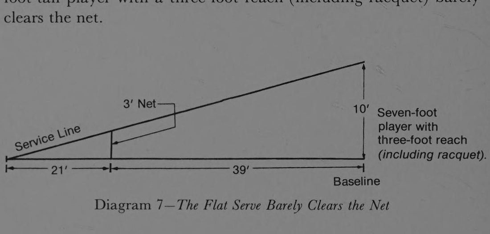
cách cầm vợt (thường là cách cầm thuận tay kiểu bắt tay) và một động tác tung bóng ra trước. Đối với cú giao bóng phẳng, hãy dùng cách cầm
grip (usually the eastern or For the flat serve, use the forehand shake-hands grip) and a forward toss.
Lợi thế của cú giao bóng này là tốc độ, khả năng áp đảo người nhận bóng.
The advantage of the serve is its speed, its potential for overpowering the receiver.
Tuy nhiên, chính tốc độ này thường phản tác dụng, trở thành một bất lợi vì nó rút ngắn thời gian bạn tiến lên lưới. Xem trang 16 để biết
This same speed, however, often backfires to become a disadvan- tage because it shortens your net approach time. See page 16 for a
Hình 8 ở trang 29 để so sánh vị trí vô-lê đầu tiên của người giao bóng sau cú giao bóng phẳng so với sau cú giao bóng xoáy xoắn ở tốc độ ba phần tư.
Diagram 8 on page 29 for a comparison of the first-volley position of the server after a flat serve as opposed to after a three-quarter-speed twist serve.
Một bất lợi khác của cú giao bóng phẳng là tỷ lệ thành công thấp. Bạn thường phải dựa vào cú giao bóng hai của mình, do đó
Another disadvantage of the flat serve is its low percentage of success. You often must rely upon your second serve, thereby
Hình 7 chỉ ra xác suất chống lại khả năng thành công của một cú giao bóng phẳng. Ngay cả một cú giao bóng phẳng của một người cao
Diagram 7 points out the odds against a flat serve being successful. Even a flat serve by a seven-
Hình 7—Giao Bóng Phẳng Chỉ Vừa Vặn Vượt Qua Lưới
Đối với cú giao bóng cắt, hãy dùng cách cầm trái tay và tung bóng sang bên. Bóng cong mạnh từ phải sang trái (với người giao bóng thuận tay phải), và
For the slice serve, use the backhand grip and a side toss. The ball curves sharply from right to left (right-hand service), and
Hình 9 ở trang 31.
Diagram 9 on page 31.
Lợi thế của cú giao bóng cắt là đường cong của bóng có thể kéo người nhận bóng ra thật rộng hoặc có thể khóa chặt người đó bằng một góc khó chịu vào người.
The advantage of the slice serve is that the curve of the ball can pull the receiver wide or can jam him or her with a difficult angle to the body.
Cú giao bóng cắt có ba bất lợi: (1) việc với sang ngang để tung bóng bên làm giảm chuyển động tiến vào sân của bạn, (2) độ
The slice serve has three disadvantages: (1) reaching laterally for the side toss reduces your forward motion into the court, (2) net
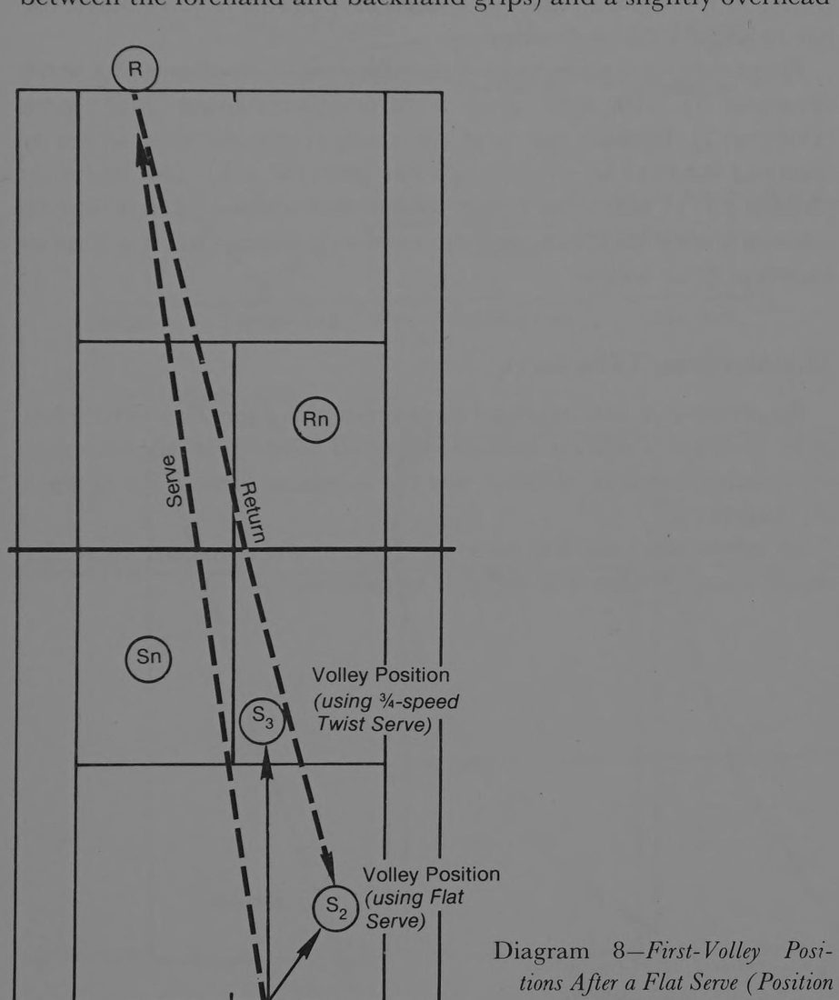
vượt qua lưới của cú giao bóng bị hạn chế, và (3) người nhận bóng có góc trả bóng lớn hơn nếu cú giao bóng kéo người đó ra rộng nhưng người đó vẫn có thể thực hiện được cú trả.
clearance of the serve is limited, and (3) the receiver has a greater angle of return if the serve pulls him wide but he still is able to make the return.
Cú Xoáy Xoắn Tiêu ChuẩnThe Standard Twist
Đối với cú giao bóng xoáy xoắn tiêu chuẩn, hãy dùng cách cầm continental (nằm giữa
For the standard twist serve, use the continental grip (halfway
Hình 8—Vị Trí Vô-lê Đầu Tiên Sau Cú Giao Bóng Phẳng (Vị Trí
động tác tung bóng. Bóng cong nhẹ giống như ở cú giao bóng cắt, nhưng độ xoáy lên tăng thêm khiến bóng vòng cung qua lưới rồi rơi xuống thật nhanh. Sự pha trộn giữa độ xoáy xoắn và cắt làm tăng tốc độ và độ nảy cho
toss. The ball curves slightly like that of the slice serve, but the added topspin causes the ball to arch over the net and then drop down sharply. The mixture of spin and slice adds speed and kick to
Hình 9. Khi được thực hiện ở tốc độ ba phần tư, cú giao bóng xoáy xoắn có một số lợi thế: (1) tỷ lệ thành công của giao bóng một cao,
(2) độ vượt qua lưới là đủ, (3) độ xoáy xoắn truyền thêm sức mạnh cho cú nảy, và (4) bạn có đủ thời gian để tiến lên lưới thực hiện cú vô-lê đầu tiên.
high, (2) net clearance is adequate, (3) the twist imparts additional power to the bounce, and (4) you have sufficient time to reach the net to make your first volley.
Hình 8 so sánh vị trí vô-lê đầu tiên của bạn sau một cú giao bóng phẳng (Vị trí 1) với vị trí sau một cú giao bóng xoáy xoắn ở tốc độ ba phần tư
Diagram 8 compares your first-volley position after a flat serve (Position 1) with that after a three-quarter-speed twist serve
(Vị trí 2). Vì cú giao bóng xoáy xoắn cho bạn thời gian để tiến vào gần lưới hơn (S₁ > S₂) so với cú giao bóng phẳng (S₁ > S₂), và do đó cho phép bạn vô-lê cú trả bóng sớm hơn, nên người nhận bóng có ít thời gian hơn để tiến lên sau cú trả của mình và người đứng lưới của người nhận bóng có ít thời gian hơn để chặn cú vô-lê của bạn.
(Position 2). Because the twist serve allows you the time to get in closer to the net (S; > Ss) than a flat serve (S; > Se) and therefore enables you to volley the return sooner, the receiver has less time to approach after his return and the receiver’s netman has less time to intercept your volley.
Cú Giao BóngThe American
Xoáy Xoắn Kiểu MỹTwist Serve
Một nhánh phụ của cú giao bóng xoáy xoắn tiêu chuẩn, cú giao bóng xoáy xoắn kiểu Mỹ cho bóng một cú nảy ngược—bóng nảy theo hướng ngược lại với đường cong bay của nó. Xem hình chiếu từ trên xuống của cú nảy
An offshoot of the standard twist serve, the American twist serve gives the ball a reverse bounce—the ball bounces in the opposite direction of its curve of flight. See the overhead view of the bounce
Hình 9. Những lợi thế của nó giống như của kiểu xoáy xoắn tiêu chuẩn.
Bất lợi của nó là khó thực hiện.
advantages are the same as those of the standard twist. Its disadvantage is that it is difficult to execute.
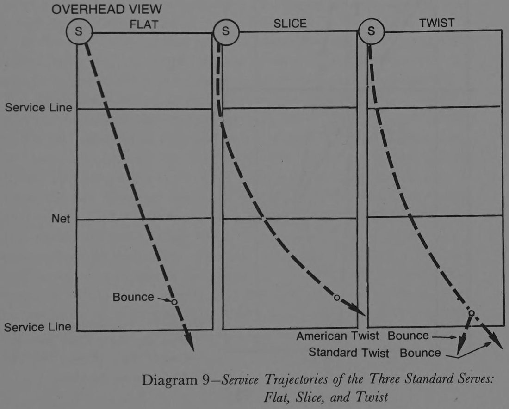
PHẲNG Một chút xoáy lên đưa cú Giao Bóng Phẳng vào trong sân. Người giao bóng và tầm với của vợt.
FLAT Some Topspin Brings Flat Serve into Court. Server and racquet reach.
Vạch cuối sân Vạch giao bóng Lưới Vạch giao bóng Vạch cuối sân
Baseline Service Line Net Service Line Baseline
CẮT Xoáy ngang thắng được trọng lực Bắt đầu thắng được động lượng
SLICE Sidespin Overcomes Gravity Starts to Overcome Momentum
Động lượng tiến về trước và bóng cong ee — <= a Soe ; Let = S
Forward Momentum and Ball Curves ee — <= a Soe ; Let = S
Vạch cuối sân Vạch giao bóng Lưới Vạch giao bóng Vạch cuối sân
Baseline Service Line Net Service Line Baseline
XOẮN Xoáy lên thắng được động lượng tiến về trước và bóng rơi xuống mạnh
TWIST Topspin Overcomes Forward Momentum and Ball Drops Sharply
Vạch cuối sân Vạch giao bóng Lưới Vạch giao bóng Vạch cuối sân
Baseline Service Line Net Service Line Baseline
Hình 9—Giao Bóng
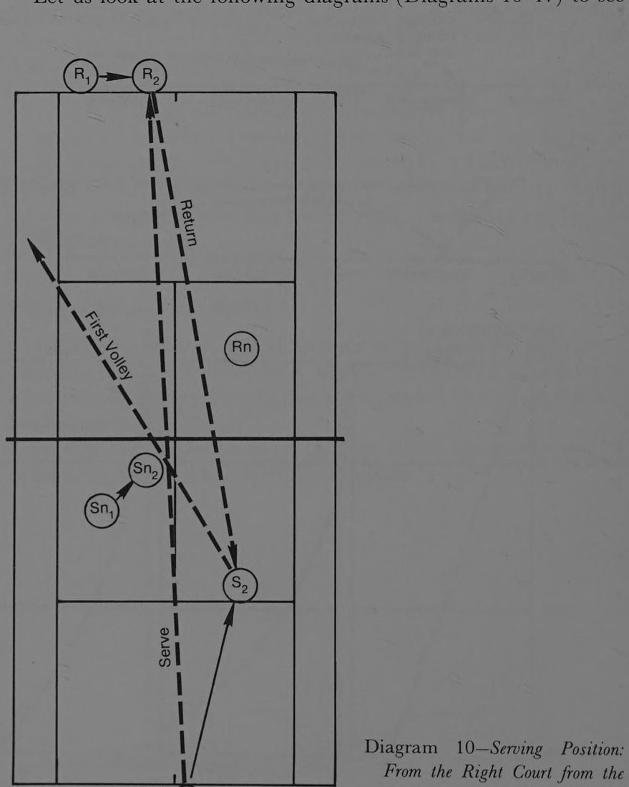
Vị Trí Giao Bóng và Góc Giao BóngServing Position and the Angle of the Serve
Ngoài tốc độ và độ xoáy mà bạn tạo ra từ cách cầm vợt và động tác tung bóng, còn có những yếu tố khác đóng góp vào hiệu quả cú giao bóng của bạn.
Other factors contribute to the effectiveness of your serve besides the speed and spin you derive from your racquet grip and ball toss.
Một yếu tố là vị trí của bạn phía sau vạch cuối sân và góc giao bóng (so với ô giao bóng).
One is your position behind the baseline and the angle of the serve (in relation to the serving court).
Hình 10—Vị Trí Giao Bóng: Từ Ô Bên Phải Tính Từ Giữa. Góc Giao Bóng: Hướng Lên
những xác suất xuất phát từ các vị trí giao bóng khác nhau ở vạch cuối sân và các góc giao bóng khác nhau. Hãy coi những điều kiện sau đúng cho mọi ví dụ: tất cả các tay vợt đều thuận tay phải, mọi cú giao bóng đều ở tốc độ ba phần tư (không xét đến độ xoáy), và các cú trả bóng được quyết định bởi điều gì là khả năng cao nhất.
the probabilities resulting from various serving positions at the baseline and angles of serve. Allow for the following conditions for all examples: all players are right-handed, all serves are three- quarter speed (spin is not considered), and returns are determined by what is most probable.
Từ Ô Bên PhảiFrom the Right Court
Hình 10 vị trí giao bóng của bạn là từ ô bên phải tính từ giữa; góc giao bóng của bạn là hướng lên giữa vào bên trái tay. Mặc dù giao bóng từ giữa chỉ cho phép bạn bảo vệ cú trả bằng thuận tay, góc giao bóng vào bên trái tay hiệu quả đến mức người nhận bóng khó có thể thực hiện được một cú trả trái tay thật rộng về phía thuận tay của bạn. Người đứng lưới của bạn có thể di chuyển gần vào giữa hơn (Sn₁ > Sn₂), và nhờ đó làm giảm góc trả bóng của người nhận bóng thêm nữa. Vì người nhận bóng đã di chuyển vào giữa để thực hiện cú trả (R₁ > R₂) và do đó đã để hành lang biên của mình không được bảo vệ, bạn có thể thực hiện cú vô-lê đầu tiên vào hành lang biên của người nhận bóng mà không bị đối thủ nào chặn. Vị trí giao bóng và góc giao bóng này có mức độ hiệu quả cao.
Diagram 10 your serving position is from the right court from the center; your serving angle is up the middle to the backhand. Although serving from the center allows you only forehand coverage of the return, the angle of the serve to the backhand is so effective that the receiver is not likely to be able to make a backhand return very wide to your forehand. Your netman can move closer to the center (Sn; > Sng) and thereby reduce the receiver’s angle of return even more. Because the receiver has moved to the center to make the return (Rj > Rg) and therefore has left his or her alley unprotected, you can make your first volley to the receiver’s alley without any interception from either opponent. This serving position and angle have a high degree of effectiveness.
Hình 11 vị trí giao bóng của bạn lại là từ ô bên phải tính từ giữa; tuy nhiên, góc giao bóng của bạn là rộng vào bên thuận tay. Trong tình huống này người nhận bóng phải di chuyển rộng về phía thuận tay của mình (R₁ > R₂) và do đó có góc trả bóng tối đa. Người đứng lưới của bạn không thể uy hiếp người nhận bóng vì phải bảo vệ hành lang biên của chính mình khỏi một cú trả dọc biên. Bạn phải di chuyển rộng để vô-lê cú trả (S₁ > S₂), và cú vô-lê của bạn có lẽ sẽ yếu. Thời gian bay dài của cú trả rộng cho phép người nhận bóng tiến vào lưới. Vì bạn đã di chuyển rộng cho cú vô-lê đầu tiên và người đứng lưới của bạn đã giữ nguyên vị trí để bảo vệ hành lang biên của mình, nên phần giữa sân của bạn giờ đây để trống cho cả hai đối thủ. Bạn không thể vượt qua họ dọc biên vì người đứng lưới của người nhận bóng sẽ di chuyển để bảo vệ hành lang biên của mình, giờ đây khi người nhận bóng đã tiến lên để khép góc lại. Đội nhận bóng có cơ hội hoàn hảo để chặn cú vô-lê của bạn và đưa bóng xuống giữa sân để ăn điểm. Vị trí giao bóng và góc giao bóng này có tỷ lệ hiệu quả rất thấp.
Diagram 11 your serving position 1s again from the right court from the center; however, your angle of serve is wide to the forehand. In this situation the receiver must move wide to his or her forehand (Ry > Re) and therefore has a maximum angle of return. Your netman cannot intimidate the receiver because he or she must protect his or her own alley from a down-the-line return. You must move wide to volley the return (S; > Sg), and your volley probably will be weak. The long flight time of the wide return allows the receiver to close the net. Because you have moved wide for your first volley and your netman has stayed in position to cover his or her alley, the middle of your court is now open to either opponent. You cannot bypass them down the line because the receiver’s netman will move to cover his or her alley now that the receiver has come forward to close the angle. The receiving team has the perfect opportunity to intercept your volley and put it down the middle for a winner. This serving position and angle of serve has a very low percentage of effectiveness.
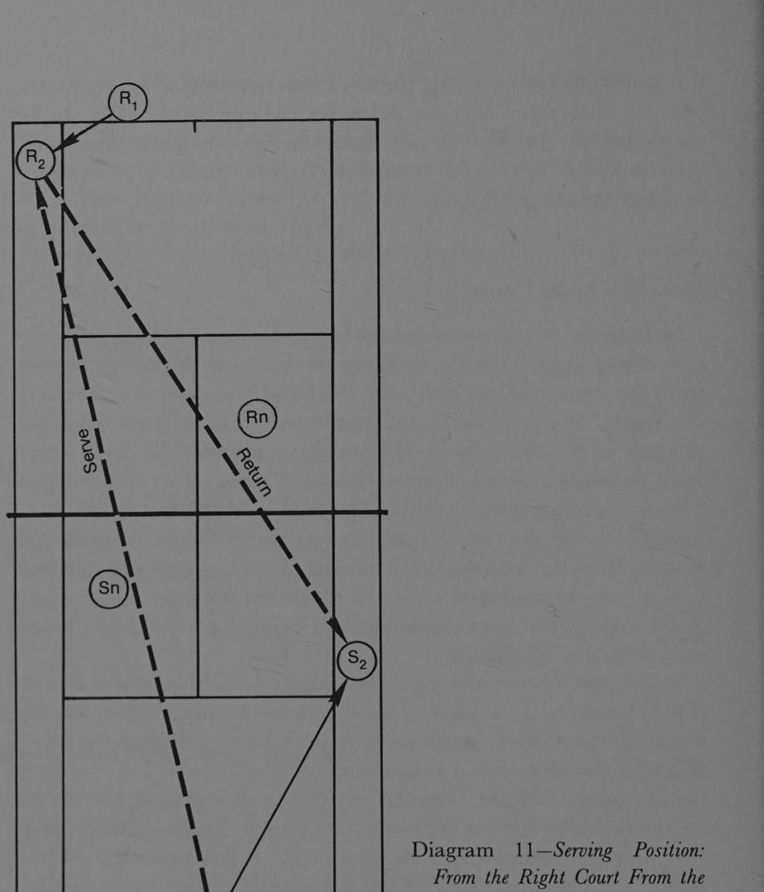
Hình 11—Vị Trí Giao Bóng:
Hình 12 bạn đang giao bóng từ ô bên phải từ vị trí rộng
Diagram 12 you are serving from the right court from the wide position
(giao điểm của vạch cuối sân và đường biên dọc đơn); góc giao bóng của bạn là vào bên thuận tay. Vị trí giao bóng này cho bạn cơ hội tốt nhất để có một góc đủ rộng để kéo căng người nhận bóng (R > Re) đến mức người đó không thể thực hiện một cú trả hiệu quả. Thời gian bay theo đường chéo của cú giao bóng và cú trả cho bạn thời gian và cơ hội để khép phần giữa sân—vùng trả bóng khả dụng—và để người đứng lưới của bạn bảo vệ hành lang biên của mình. Góc
(junction of baseline and singles line); your angle of serve is to the forehand. This serving position gives you the best opportunity for an angle that will stretch the receiver wide enough (R > Reg) that he or she will not be able to make an effective return. The diagonal flight time of the serve and the return allow the time and opportunity for you to close the middle of the court—the available return area—and your netman to protect his or her alley. The angle
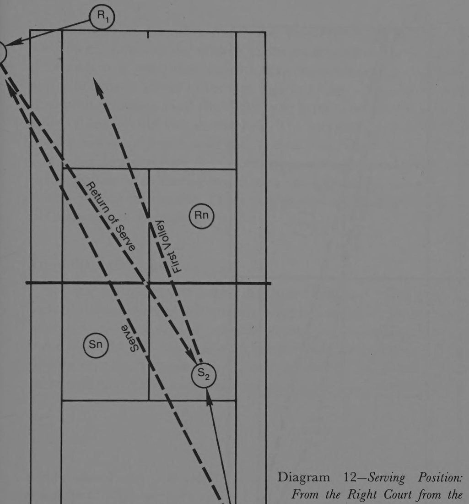
Hình 12—Vị Trí Giao Bóng:
trả bóng có thể buộc bạn thực hiện một cú vô-lê trái tay khó, nhưng nhiều khả năng người đứng lưới của bạn sẽ chặn được một cú trả yếu và nhờ đó bảo vệ bạn khỏi cú vô-lê trái tay. Người đứng lưới của người nhận bóng sẽ buộc phải bảo vệ phần giữa sân khi người nhận bóng di chuyển rộng để trả giao bóng, và người đó sẽ dễ bị tổn thương ở cả hai bên trước sự chặn bóng của người đứng lưới của bạn. Tuy nhiên, nếu bạn tự mình thực hiện cú vô-lê đối với cú trả, góc tiến vào lưới của bạn (S₁ > Sz) sẽ hạn chế góc của cú vô-lê bạn. Bạn nhiều khả năng sẽ vô-lê vào phần sân trống, nhưng một lựa chọn khác sẽ là
of return may necessitate your making a difficult backhand volley, but, more likely, your netman will be able to intercept a weak return and thereby protect you from the backhand volley. The receiver’s netman will be forced to cover the middle of the court when the receiver moves wide to return serve, and he or she will be vulnerable on both sides to your netman’s interception. However, should you make the volley of the return yourself, your angle of approach (S; > Sz) will limit the angle of your volley. You most likely will volley to the open court, but another option will be
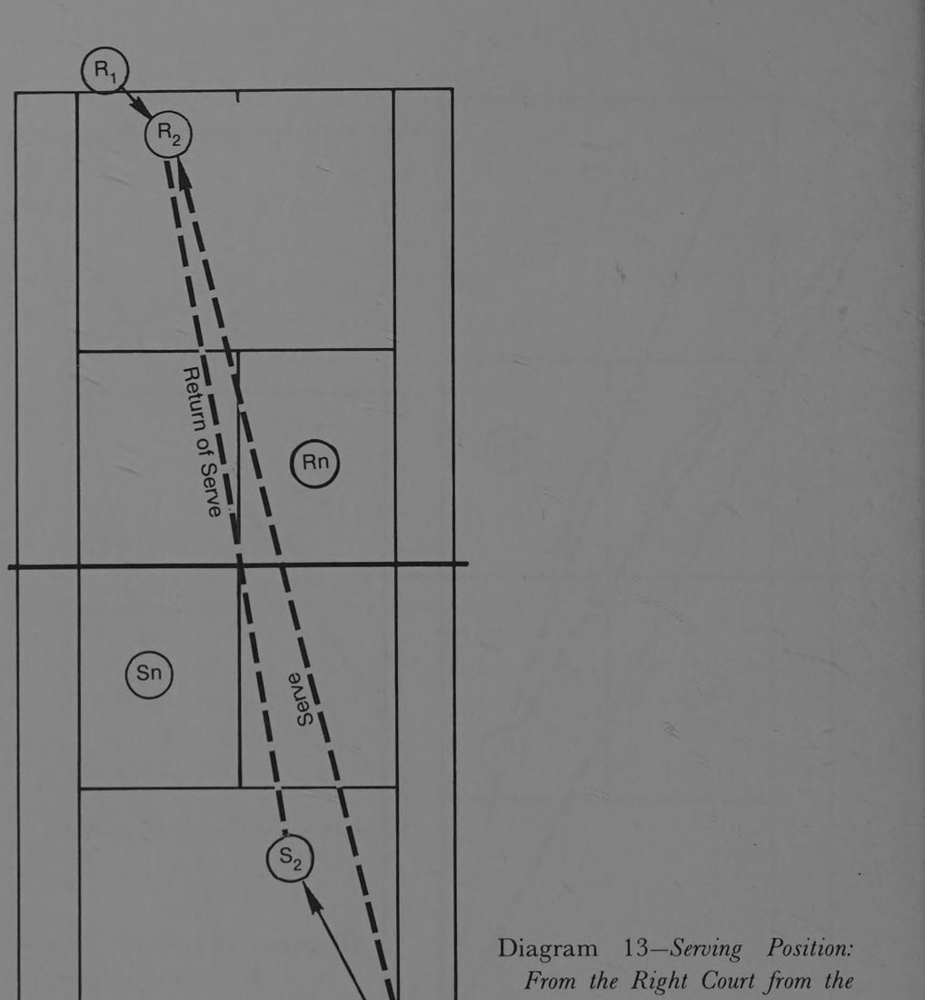
Hình 13—Vị Trí Giao Bóng:
dọc biên. Vị trí giao bóng và góc giao bóng này có tỷ lệ hiệu quả trung bình vì góc giao bóng khá khó đạt được.
down the line. This serving position and angle of serve have a medium percentage of effectiveness because the angle of serve is fairly difficult to achieve.
Hình 13 vị trí giao bóng của bạn là từ ô bên phải từ vị trí rộng (giao điểm của vạch cuối sân và đường biên dọc đơn); góc giao bóng của bạn là hướng lên giữa vào bên trái tay. Vị trí giao bóng và góc giao bóng này mang lại hai lợi thế cho người nhận bóng: (1) người đó có thể thực hiện một cú trả trái tay dễ dàng, nhanh chóng chỉ bằng cách chặn bóng trả lại theo đúng góc đó, và (2) người đó có thể tiến lên để trả bóng (Ry > Ry) và do đó có thể tiến vào lưới trước bạn.
Diagram 13 your serving position is from the right court from the wide position (junction of baseline and singles line); your angle of serve is up the middle to the backhand. This serving position and angle of serve give two advantages to the receiver: (1) he or she can make an easy, quick backhand return by simply blocking back the serve on the same angle, and (2) he or she can move forward to return (Ry > Ry) and therefore possibly close the net before you.
Là người giao bóng, ngược lại, bạn phải đối mặt với hai bất lợi: (1) vùng mục tiêu của bạn (hướng lên giữa vào bên trái tay) là nhỏ, và (2) cú trả nhanh đến mức người đứng lưới của bạn không thể chặn cú trả và bạn không thể tiến vào lưới đủ sát. Vì bạn bị kẹt ở vùng đất không người (S₁ > S₂), bạn phải thực hiện một cú vô-lê trái tay thấp từ phía sau vạch giao bóng. Người đứng lưới của người nhận bóng đang ở vị trí tốt để cướp bóng (poach), và người nhận bóng đã tiến vào lưới. Cú vô-lê của bạn có thể bị một trong hai đối thủ chặn và đưa đi gọn gàng phía sau người đứng lưới của bạn hoặc vào vùng thuận tay bị bỏ trống bởi cú vô-lê trái tay của bạn gần giữa sân. Vị trí giao bóng và góc giao bóng này có tỷ lệ hiệu quả thấp.
As server, on the other hand, you face two disadvantages: (1) your target area (up the middle to the backhand) is small, and (2) the return is so quick that your netman cannot intercept the return and you cannot get in to the net tightly enough. Because you are caught in no-man’s-land (S; > Sz), you must take a low backhand volley from behind the service line. The receiver’s netman is in a good position to poach, and the receiver has closed the net. Your volley can be intercepted by either opponent and put away behind your netman or in the forehand area left open by your backhand volley close to the middle. This serving position and angle of serve have a low percentage of effectiveness.
Từ Ô Bên TráiFrom the Left Court
Giao bóng từ ô bên trái vào ô trái tay đặt ra một số vấn đề khác nếu bạn là người giao bóng thuận tay phải. Chúng ta sẽ xem xét một số hình vẽ về các vị trí giao bóng và góc giao bóng khả dĩ từ ô bên trái, nhưng hãy nhớ rằng những cú giao bóng này sẽ không hiệu quả lắm vì bạn đang giao bóng vào cú trả trái tay chéo sân tự nhiên và cú trả thuận tay hướng lên giữa dễ dàng hơn của người nhận bóng.
Serving from the left court into the backhand court presents some different problems if you are a right-handed server. We shall look at some diagrams of possible serving positions and angles of serve from the left court, but remember that these serves will not be very effective because you are serving into the receiver’s natural crosscourt backhand and easier up-the-middle forehand return.
ay
ay
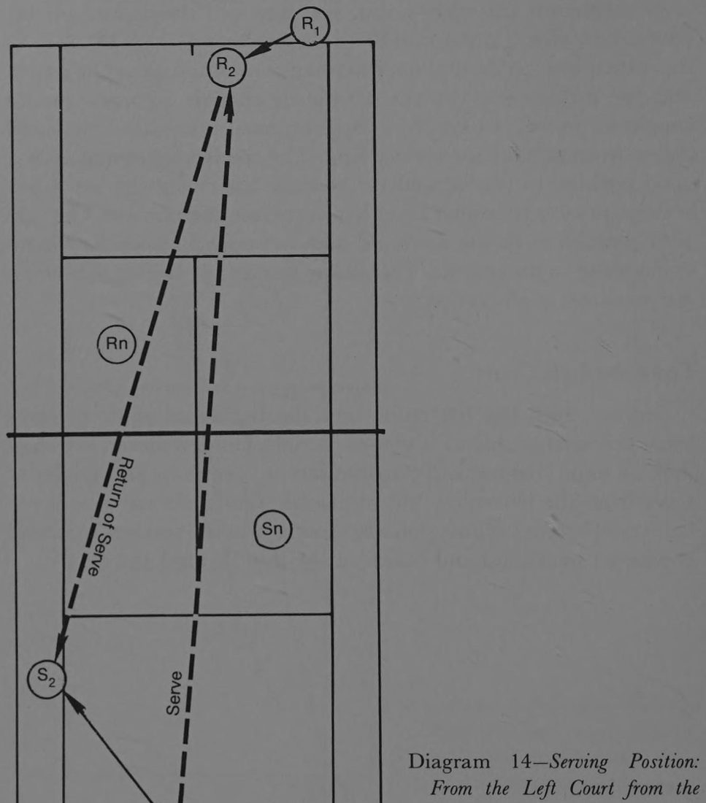
Hình 14—Vị Trí Giao Bóng:
Hình 14 vị trí giao bóng của bạn là từ ô bên trái tính từ giữa; góc giao bóng của bạn là hướng lên giữa vào bên thuận tay. Trong trường hợp này người nhận bóng không có góc trả bóng rộng, nhưng người đó vẫn có thể tiến lên (R₁ > R₂) và thực hiện một cú trả nhanh mà người đứng lưới của bạn không thể chặn và có thể tiến vào lưới trước bạn.
Diagram 14 your serving position is from the left court from the center; your angle of serve 1s up the middle to the forehand. In this case the receiver does not have a wide angle of return, but he or she still is able to move forward (Ri > Rg) and make a quick return that your netman cannot intercept and to possibly reach the net before you.
Là người giao bóng, bạn có một vùng trái tay lớn phải bảo vệ sau cú giao bóng của mình, và khi bạn phải đi rộng (S₁ > Sz) để với tới ngay cả một cú trả có góc vừa phải, bạn để trống phần giữa. Ngoài ra, vì bạn phải vươn người để với tới cú trả, cú vô-lê đầu tiên của bạn có lẽ sẽ yếu.
As server, you have a large backhand area to cover after your serve, and when you must go wide (S; > Sz) to reach even a moderately angled return, you leave the middle open. Also, because you must stretch to reach the return, your first volley probably will be weak.
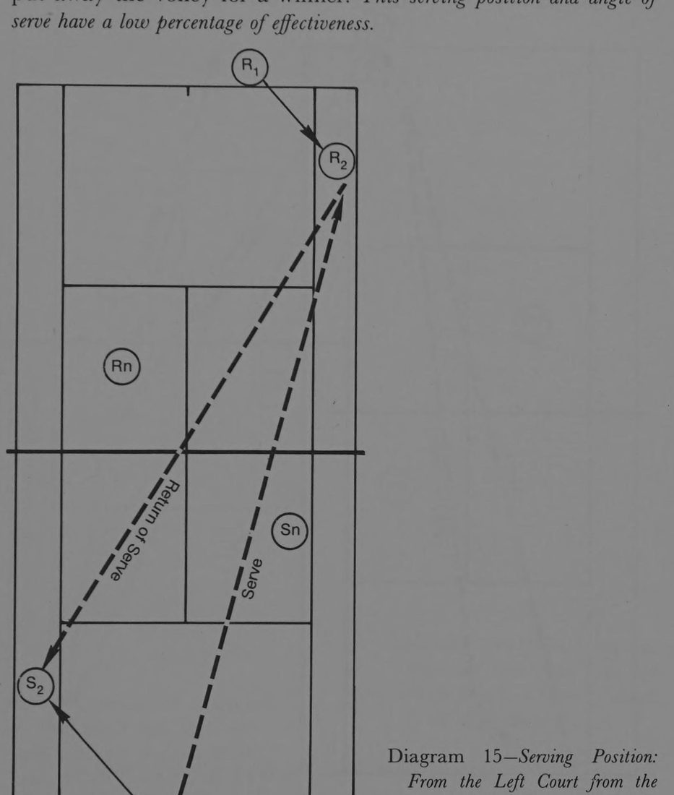
Người đứng lưới của người nhận bóng có cơ hội hoàn hảo để chặn và
The receiver’s netman has the perfect opportunity to intercept and
Hình 15—Vị Trí Giao Bóng: Từ Ô Bên Trái Tính Từ Giữa. Góc Giao Bóng: Rộng Vào Bên Trái Tay
Hình 15 vị trí giao bóng của bạn là từ ô bên trái tính từ giữa; góc giao bóng của bạn là rộng vào bên trái tay. Mặc dù người nhận bóng phải di chuyển rộng để thực hiện cú trả (R₁ ~ R₂), người đó có thể thực hiện một cú trả trái tay tự nhiên ở một góc rộng về phía trái tay của bạn và ngoài tầm với của người đứng lưới của bạn. Một lần nữa bạn lại bị kéo căng ra rộng để với tới cú trả (S₁ > S₂) và buộc phải thực hiện một cú vô-lê trái tay yếu ớt.
Diagram 15 your serving position is from the left court from the center; your angle of serve is wide to the backhand. Although the receiver must move wide to make the return (Rj ~ Rg), he or she is able to make a natural backhand return at a wide angle to your backhand and out of reach of your netman. Again you are stretched wide to reach the return (S; > S2) and forced to make a weak backhand volley.
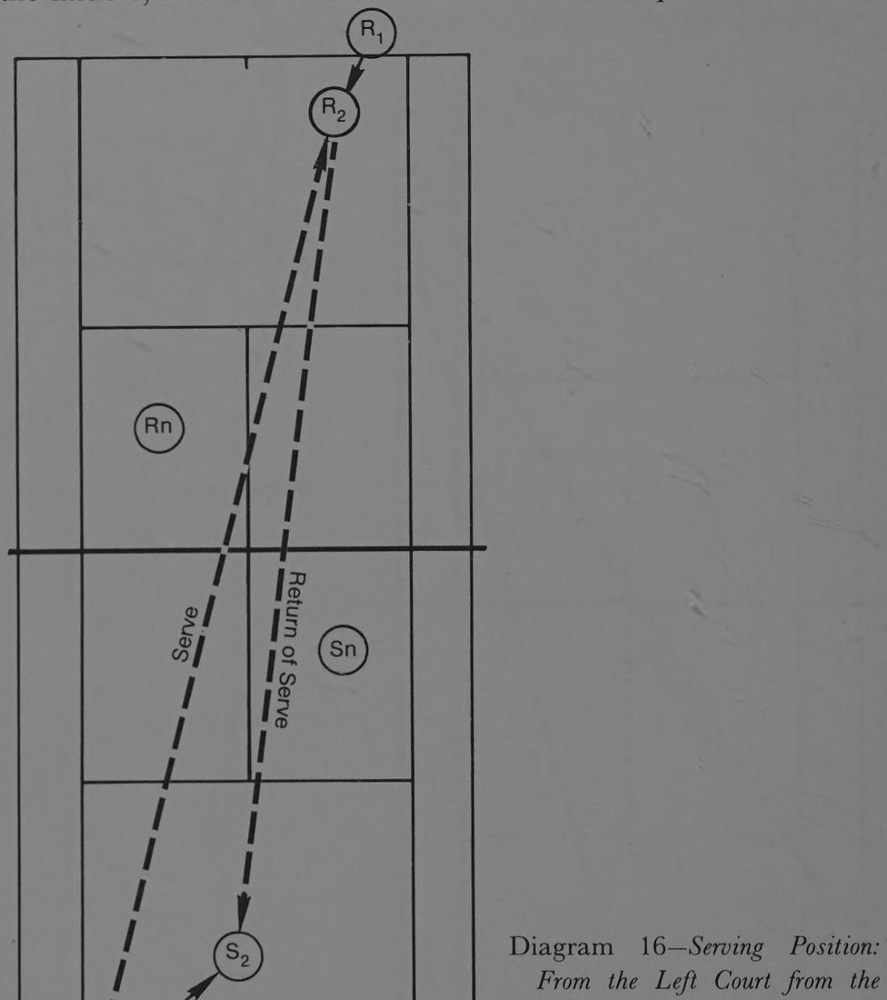
Thời gian bay của cú trả chéo sân cho phép người nhận bóng tiến vào lưới
The flight time of the diagonal return allows the receiver to close
Hình 16—Vị Trí Giao Bóng:
ngăn bạn vô-lê dọc biên. Các đối thủ của bạn đang ở vị trí tốt để chặn cú vô-lê đầu tiên của bạn và đưa bóng đi gọn gàng xuống giữa sân của bạn. Vị trí giao bóng và góc giao bóng này có tỷ lệ hiệu quả thấp.
from your volleying down the line. Your opponents are in a good position to intercept your first volley and put it away down the middle of your court. This serving position and angle of serve have a low percentage of effectiveness.
Hình 16 vị trí giao bóng của bạn là từ ô bên trái từ vị trí rộng
Diagram 16 your serving position is from the left court from the wide
(giao điểm của vạch cuối sân và đường biên dọc đơn); góc giao bóng của bạn là hướng lên giữa vào bên thuận tay. Mặc dù người nhận bóng có góc trả bóng hạn chế, người đó vẫn có lợi thế là tiến lên (Ry >
position (junction of baseline and singles line); your angle of serve is up the middle to the forehand. Although the receiver has a limited angle of return, he or she still has the advantage of moving forward (Ry >
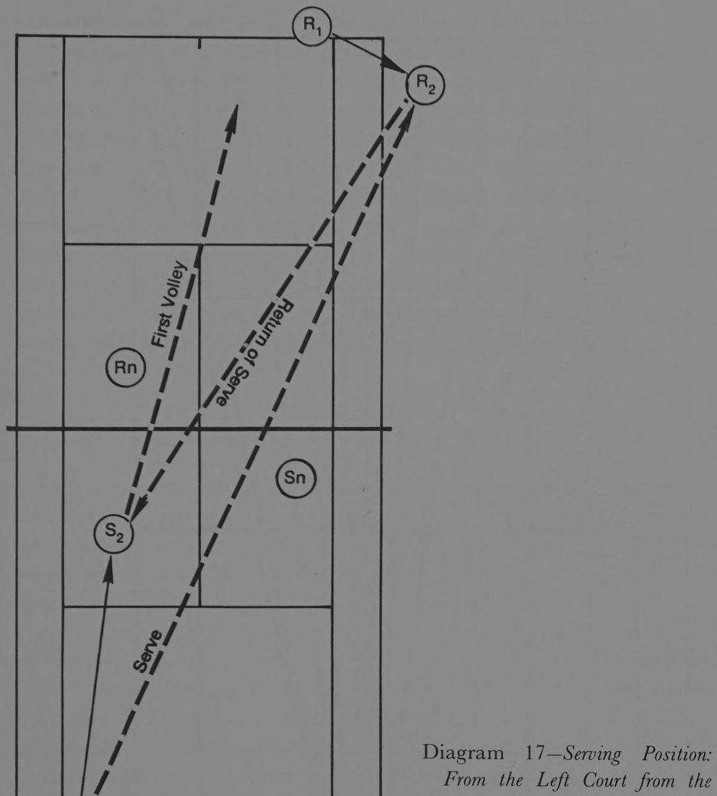
Re) và thực hiện một cú trả nhanh. Bạn, với tư cách người giao bóng, không có thời gian tiến vào lưới đủ sát và phải thực hiện cú vô-lê đầu tiên ở sâu (Si ~ Se). Người nhận bóng có thể tiến vào lưới, người đứng lưới của người nhận bóng nghiêng về phía giữa, và vùng trái tay của bạn rộng mở cho cả hai đối thủ nếu họ chặn cú vô-lê của bạn. Tuy nhiên, vì cú trả vào bên thuận tay của bạn, bạn có chút cơ hội thực hiện một cú vô-lê khả thi. Người đứng lưới của bạn biết sức mạnh thuận tay của bạn nằm ở giữa, và không cảm thấy bị áp lực phải thử một cú cướp bóng (poach) mạo hiểm để giúp bạn thoát. Vị trí giao bóng và góc giao bóng này có tỷ lệ hiệu quả thấp.
Re) and making a quick return. You, as server, do not have time to get in tightly enough at the net and must take the first volley deep (Si ~ Se). The receiver is able to close the net, the receiver’s netman leans to the center, and your backhand area is wide open to both opponents if they intercept your volley. Because the return is to your forehand, however, you have some chance of making a viable volley. Your netman knows the strength of your forehand is in the middle, and does not feel pressured to attempt a risky poach to help you out. This serving position and angle of serve have a low percentage of effectiveness.
At
At
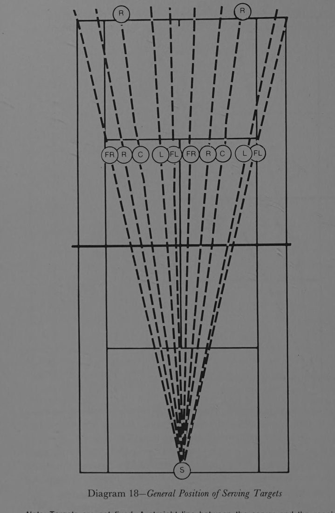
Hình 18—Vị Trí Chung của Các Mục Tiêu Giao Bóng
Hình 17 vị trí giao bóng của bạn là từ ô bên trái từ vị trí rộng (giao điểm của vạch cuối sân và đường biên dọc đơn); góc giao bóng của bạn là rộng vào bên trái tay. Người nhận bóng có góc trả bóng tối đa, nhưng việc phải vươn người để trả giao bóng (R₁ > R₀) có thể làm yếu cú trả của người đó. Bạn có lợi thế là thời gian bay chéo dài của cú giao bóng để tiến lên lưới (S₁ > S₂) cho cú vô-lê đầu tiên. Bạn có thể kiểm soát phần giữa trong khi người đứng lưới của bạn kiểm soát hành lang biên của mình hoặc có lẽ vươn người tới trước để cướp bóng (poach).
Diagram 17 your serving position is from the left court from the wide posttion (junction of baseline and singles line); your angle of serve is wide to the backhand. The receiver has a maximum angle of return, but the stretch he or she must make to return the serve (Ri > Ro) may weaken his or her return. You have the advantage of the long diagonal flight time of your serve to get to the net (S; > Sg) for your first volley. You can control the middle while your netman controls his alley or perhaps reaches forward for the poach.
Vì người nhận bóng đã để trống phần giữa sân bằng cách di chuyển rộng để trả bóng, người đứng lưới của người nhận bóng bị áp lực phải bảo vệ phần giữa và để trống vùng thuận tay của mình. Vị trí giao bóng và góc giao bóng này có tỷ lệ hiệu quả cao.
Because the receiver has left the middle of the court open by moving wide to return, the receiver’s netman is pressured to cover the middle and leave his or her forehand area open. This serving position and angle of serve have a high percentage of effectiveness.
Các Mục Tiêu Giao BóngServing Targets
Giờ đây hãy trở lại với các cú giao bóng tiêu chuẩn—phẳng, cắt và xoáy xoắn—và bàn về chúng trong mối liên hệ với năm mục tiêu giao bóng cơ bản trong mỗi ô giao bóng: xa phải, phải, giữa, trái, và xa trái (xác định theo góc nhìn của một người nhận bóng thuận tay phải nhìn vào một
Let us return now to the standard serves—flat, slice, and twist— and discuss them in relation to the five basic serving targets in each serving square: far right, right, center, left, and far left (as determined by a right-handed receiver looking at a right-handed
Hình 18.
Là người giao bóng, chiến thuật cơ bản của bạn là ngăn người nhận bóng thực hiện một cú trả tối đa bằng cách không giao bóng vào vùng đánh của người đó—vùng mà người đó sẽ có khả năng kiểm soát vợt và thăng bằng cơ thể tối đa. Thay vào đó, cú giao bóng của bạn nên hoặc khóa chặt người nhận bóng hoặc kéo căng người đó sang một trong hai bên.
As server, your basic tactic is to prevent a maximum return by the receiver by not serving into his or her hitting zone—that area where he or she will have maximum racquet control and body balance. Instead, your serve should either jam the receiver or stretch him or her to either side.
Khi dùng cú giao bóng phẳng hoặc mạnh, hãy giao bóng vào xa trái hoặc xa phải để kéo căng người nhận bóng. Giao bóng thẳng vào người nhận bóng để khóa chặt người đó.
When using the flat or power serve, serve either far left or far right to stretch the receiver. Serve straight at the receiver to jam him or her.
Khi dùng cú giao bóng cắt (cú này sẽ cong về phía bên phải của người nhận bóng), hãy giao bóng xa phải để kéo căng người nhận bóng, giao bóng sang trái để khóa chặt người nhận bóng, và giao bóng xa trái để làm cho cú trả của người nhận bóng trở nên khó khăn ngay cả khi góc cong của bóng không đủ để khóa chặt người đó.
When using the slice serve (which will curve to the receiver’s right), serve far right to stretch the receiver, serve left to jam the receiver, and serve far left to make a return by the receiver difficult even if the curving angle of the ball is not sufficient to jam him or her.
Khi dùng cú xoáy xoắn tiêu chuẩn, hãy giao bóng xa phải để động tác cong nhẹ và cú nảy nhanh của bóng buộc người nhận bóng phải vươn tới vừa rộng vừa cao. Giao bóng sang trái để khóa chặt người nhận bóng. Giao bóng xa trái để đường cong của bóng vào người và cú nảy cao khiến cú trả trở nên khó khăn.
When using the standard twist, serve far right so that the slight curving action and quick bounce of the ball will force the receiver to reach both wide and high. Serve left to jam the receiver. Serve far left so that the curve of the ball into the body and the high skip of the bounce will make a return difficult.
Khi dùng cú giao bóng xoáy xoắn kiểu Mỹ, hãy nhớ rằng bóng sẽ nảy theo hướng ngược lại với đường cong của nó. Giao bóng sang phải để khóa chặt người nhận bóng.
When using the American twist, remember that the ball will jump in the opposite direction of its curve. Serve right to jam the receiver.
aD
aD
Giao bóng sang trái để bóng bật ra xa và cao, khiến cú trả trở nên thậm chí khó khăn hơn. Giao bóng xa hơn về bên trái để kéo căng người nhận bóng và nhờ đó làm phức tạp thêm cú trả của người đó.
Serve left so that the ball jumps away and high and makes a return difficult. Serve even farther left to stretch the receiver and thereby further complicate his or her return.
Giao Bóng và Kiểm Soát LướiServe and Control of the Net
Kiểm soát lưới là mục tiêu của cả đội giao bóng lẫn đội nhận bóng, và cú giao bóng cực kỳ quan trọng trong việc quyết định đội nào sẽ có thể tiến vào lưới trước.
The Control of the net is the goal of both the serving and receiving teams, and the serve is extremely important in determining which team will be able to close the net first.
Như tôi đã chỉ ra trong các phần trước, tốc độ, độ cắt, độ xoáy và độ xoáy xoắn của bóng không phải là những yếu tố duy nhất đóng góp vào hiệu quả cú giao bóng của bạn. Vị trí giao bóng, góc giao bóng và mục tiêu giao bóng của bạn đóng vai trò quan trọng không chỉ trong việc khơi ra những cú trả yếu ớt, mà còn trong việc kéo căng người nhận bóng theo chiều ngang hoặc cản trở việc tiến lên phía trước của người đó sau cú trả, để bạn có thể tiến vào lưới trước đối thủ.
As I pointed out in foregoing sections, the speed, slice, spin, and twist of the ball are not the only factors contributing to the effectiveness of your serve. Your serving position, the angle of your serve, and your serving target are instrumental in not only eliciting weak returns, but also stretching the receiver laterally or otherwise impeding his or her forward approach after the return so that you can close the net before your opponent does.
Cách Người Giao Bóng Tiến Lên LướiHow the Server Moves to the Net
Chuyển động tiến lên lưới của bạn bắt đầu từ động tác kết thúc (follow-through) của chính cú giao bóng. Động tác vung xuống hay phần cuối của động tác kết thúc đưa vai và hông của bạn về phía trước, và chân sau bước ra để thăng bằng cơ thể cho một sự tăng tốc liên tục, đều đặn. Một động tác tung bóng thất thường, một chuyển động không nhịp nhàng, một cổ tay cứng, hoặc việc đánh quá mạnh sẽ cản trở động tác kết thúc và làm chậm bước tiến lên lưới của bạn.
Your forward movement to the net begins with the fol- lowthrough of the serve itself. The downward swing or tail end of the followthrough brings your shoulders and hips forward, and your back foot steps out to balance your body for a continuous, even acceleration. An erratic toss, an unrhythmic motion, a stiff wrist, or overhitting will hamper the followthrough and impede your approach to the net.
Để tận dụng sự tăng tốc và thăng bằng do một động tác kết thúc tốt tạo ra, hãy giữ người thấp để dễ đổi hướng, nhưng không quá thấp đến mức làm giảm tốc độ. Hãy bước những bước dài, giữ vai hạ xuống để thăng bằng, và duỗi tay ra để có thể điều khiển vợt nhanh chóng và đánh bóng sớm nhất có thể.
To take advantage of the acceleration and balance generated by a good followthrough, stay low for easy change of direction, but not so low as to impede speed. Take full strides, keep your shoulders down for balance, and extend your hands to enable you to maneuver your racquet quickly and to hit the ball as early as possible.
Khi vợt của người nhận bóng bắt đầu vung về phía trước, hãy rút ngắn bước chân thành những bước ngắn—những bước ngắn, nhanh, tiến về phía trước—để cho phép bạn di chuyển ngang nhanh chóng nếu cần nhưng vẫn giữ được động lượng tiến về phía trước để chặn bóng sớm.
When the receiver’s racquet starts forward, shorten your steps to stutter steps—short, quick, forward-moving steps—to allow you to move laterally quickly if necessary but to still keep your forward momentum for early interception of the ball.
Hãy tiếp tục di chuyển trong khi vô-lê để bạn có thể giữ bóng lâu hơn trên vợt và tiến vào lưới sát hơn, thay vì dừng lại, vô-lê rồi lại khởi động lại.
Continue moving while volleying to enable you to keep longer control of the ball on your racquet and to close the net more tightly rather than stopping, volleying, and starting up again.
Hiệu quả của người đứng lưới của bạn cũng phụ thuộc vào cú giao bóng của bạn. Một cú giao bóng tốt cho phép người đó đánh vượt khỏi khu vực của mình—di chuyển ra ngoài vị trí của mình—và uy hiếp người trả giao bóng. Một cú giao bóng kém có thể biến người đó thành mục tiêu, từ đó hạn chế khả năng uy hiếp và để lại cho bạn những khoảng trống rộng hai bên cùng những cú trả khó phải tự mình xử lý. Với những cú giao bóng ở mức trung bình, người đứng lưới của bạn nên chơi thận trọng và dựa vào lợi thế của vị trí xuất phát khi làm người giao bóng để thắng điểm.
The effectiveness of your netman is also dependent upon your serve. A good serve allows him to overplay his area—move beyond his position—and intimidate the receiver. A poor serve may make him a target, thereby limiting his intimidation and leaving you with large lateral areas and hard returns to handle yourself. Given average serves, your netman should play conservatively and rely upon the advantage of your starting position as server to win the points.
Chìa khóa của một cú giao bóng hiệu quả là đưa cú giao bóng một của bạn vào sân với sự đa dạng về tốc độ, độ xoáy, độ xoáy xoắn, góc và mục tiêu nhằm dò xét và khai thác các điểm yếu của người trả giao bóng trong di chuyển, chuẩn bị vợt, bộ chân, cùng những cú trả thuận tay và trái tay.
The key to effective service is to get your first serve in with a variety of speed, spin, twist, angle, and target that will probe and capitalize on the receiver’s weaknesses in movement, racquet preparation, footwork, and forehand and backhand returns.
5. Cú Trả Giao Bóng
Trả Giao Bóng
The Return of Serve
Giống như giao bóng, trả giao bóng là một phần then chốt của mỗi điểm. Đội giao bóng lúc này đang ở thế dễ bị tổn thương vì người giao bóng chưa kịp khép kín lưới, và đội đỡ giao bóng buộc phải đưa bóng trở lại sân thì mới có thể chơi được.
Like the serve, the return of serve is a crucial segment of each point. The serving team is now vulnerable because the server has not yet closed the net, and the receiving team must get the ball back in order to even play.
Dường như có hai cách khả dĩ để chơi trả giao bóng. Một là tấn công vào thế dễ bị tổn thương của đội giao bóng; hai là chỉ cần đưa bóng trở lại sân. Thực ra, cả hai cách này là một và giống nhau.
There seem to be two possible ways to play the return. One is to attack the vulnerability of the serving team; the other is to just get the ball back. Actually, both of these are one and the same.
Việc đưa bóng trở lại sân tự nó đã tấn công vào thế dễ bị tổn thương của đội giao bóng, và việc đưa bóng trở lại một cách đều đặn sẽ làm suy sụp sự tự tin của người giao bóng.
Getting the ball back in itself attacks the serving team’s vul- nerability, and getting it back consistently undermines the server’s confidence.
Tuy nhiên, đừng nhầm lẫn việc đưa bóng trở lại sân với việc chơi an toàn. Chơi an toàn là một cách tiếp cận tiêu cực. Nếu bạn quá quan tâm đến việc kiểm soát, cú đánh của bạn có thể trở nên cứng nhắc; nếu bạn quá mềm nhũn, quá chú tâm vào việc thư giãn, bàn tay hay cổ tay bạn có thể trở nên như vậy, và nếu bạn sợ đánh quá mạnh, bạn có thể có xu hướng giữ lại, không thực hiện hết động tác kết thúc (follow-through). Hãy nghĩ theo hướng tiếp cận tích cực hơn — đó là đánh xuyên qua bóng. Bạn có thể sẽ mắc một vài lỗi, nhưng bạn sẽ đang sử dụng một cú đánh tự nhiên mà cuối cùng sẽ đem lại kết quả cho bạn.
However, do not confuse getting the ball back with playing it safe. Playing it safe is a negative approach. If you are too concerned with control, your stroke may become stiff; if you are too limp; too intent on relaxing, your hand or wrist may become and if you are afraid of overhitting, you may tend to hold back on a full followthrough. Think more in terms of a positive approach— of hitting out. You may make some errors, but you will be using a natural stroke that eventually will work for you.
Ba Điều Cơ BảnThree Basics
Đón Bóng Phía Trước Thân NgườiTaking the Ball in Front of Your Body
Khi bạn đón bóng phía trước thân người, bạn có được ba lợi thế rõ rệt trong trả giao bóng: bạn có thể giữ thăng bằng, bạn có thể tận dụng tầm nhìn ngoại vi của mình, và bạn có thể tiến thêm một hoặc hai bước tới lưới.
When you take the ball in front of your body, you gain three distinct advantages in return of serve: you can maintain your balance, you can utilize your peripheral vision, and you can take one or two steps closer to the net.
Kiểm Soát Cú ĐánhStroke Control
Chỉ cú đánh của bạn mới được tác động vào bóng. Việc dịch chuyển trọng tâm hay trình tự co cơ không đúng vào thời điểm tiếp xúc bóng đều có thể làm hỏng cú trả giao bóng.
Only your stroke should influence the ball. A shift of weight or incorrect muscle sequence at the moment of impact can upset the return.
Nếu cách sử dụng cơ thể không đúng như vậy đã thành thói quen thì cú trả giao bóng của bạn sẽ thất thường một cách dai dẳng. Nếu đúng là như vậy, hãy làm việc với một người hướng dẫn hay huấn luyện viên để phá bỏ thói quen đó và xây dựng lại một kỹ thuật cơ bản. Đừng sợ thay đổi, sợ phải học lại để tiến bộ. Để sửa một lỗi, hãy làm chậm cú đánh lại và ý thức hóa trí nhớ cơ — nghĩa là, theo dõi toàn bộ cú đánh cho đến khi sự điều chỉnh mới đã được tiếp thu. Nếu vợt của bạn di chuyển nhanh hơn suy nghĩ của bạn, thì trí nhớ cơ cũ sẽ tự tái lập và lỗi cũ sẽ xuất hiện trở lại.
If such improper body use is a matter of habit, then your return will be consistently erratic. Should this be the case, work with an instructor or coach to break the habit and rebuild a basic technique. Do not be afraid of change, of relearning in order to improve. To make a correction, slow down the stroke and intellectualize the muscle memory—that is, keep track of the entire stroke until the new correction has been incorporated. If your racquet moves more quickly than your mind, then the old muscle memory re-introduces itself and the old error reappears.
Tập TrungConcentration
Xây dựng ý thức tinh thần cần lượng luyện tập nhiều như phát triển các khả năng thể chất. Thực tế, sự phát triển tinh thần phải tương xứng với sự phát triển thể chất. Cả người chơi phong trào nghiệp dư lẫn người chơi chuyên nghiệp đều phải duy trì một mức độ kỷ luật tinh thần nhất định để phát huy trọn vẹn khía cạnh thể chất
Building up mental awareness takes as much practice as developing physical abilities. In fact, mental development must be in proportion to physical development. Both the amateur social player and the professional player must maintain a certain level of mental discipline in order to realize the complete physical dimen-
Hình 19.
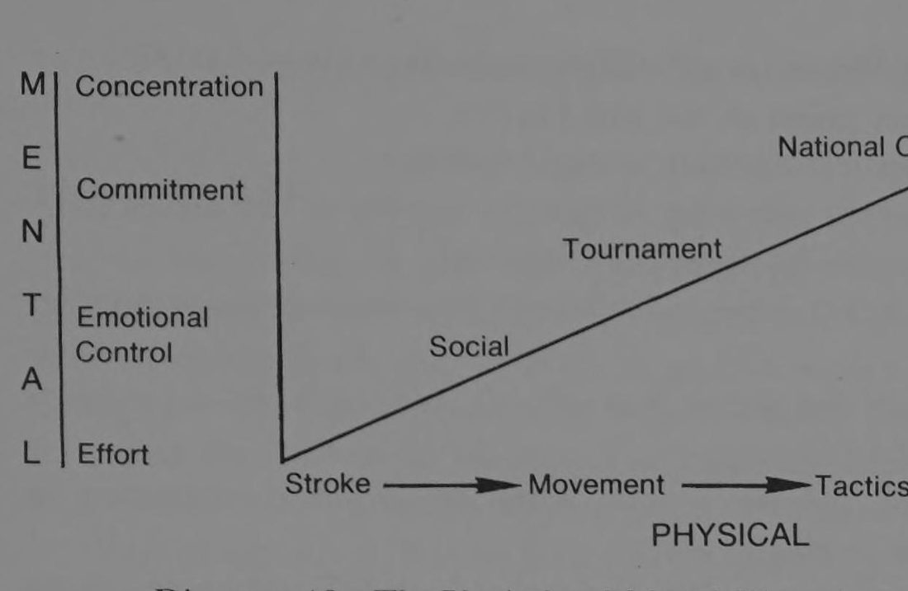
Hình 19: Những Chiều Kích Thể Chất Và Tinh Thần Của Quần Vợt
là rất cao. Khi trả giao bóng, người đó phải có khả năng tập trung vào những cân nhắc thể chất như việc thực hiện cú đánh trả bóng, đặt bóng trả đi đâu và bằng cách nào, và lúc nào thì lên lưới cùng cách lên lưới ra sao. Ngược lại, người mới chơi chỉ có thể tập trung vào việc đưa bóng trở lại sân bằng cách giữ bóng phía trước thân người và dùng cú đánh đơn giản nhất có thể.
is very high. On return of serve he should be able to concentrate on such physical considerations as the execution of his return stroke, where and how to place the return, and when and how to approach the net. The beginner, on the other hand, is able to concentrate only on getting the ball back by keeping it in front of the body and using the simplest stroke possible.
Nếu bạn là người chơi trình độ trung bình hay khá, bạn vẫn phải tập trung trước hết vào quả bóng, nhưng đến giờ này bạn hẳn đã xây dựng được một danh sách kiểm tra trong đầu mang tính tự động để giữ cho cú trả bóng của mình đơn giản và hiệu quả. Nếu bạn cố tình nghĩ ra danh sách kiểm tra đó một cách có ý thức, bạn có thể sẽ làm gián đoạn dòng chảy tự nhiên của trí nhớ cơ đã được hình thành. Nếu bạn muốn dùng những hiệu ứng như xoáy và tốc độ, hãy nghiên cứu chúng riêng rẽ và chỉ dùng chúng như những lựa chọn, chứ không phải như những cú trả bóng xác suất cao tiêu chuẩn.
If you are an intermediate or advanced player, you still must concentrate primarily on the ball, but you probably have de- veloped by now an automatic mental checklist to keep your return stroke simple and effective. If you try to deliberately think out the checklist, you probably will disrupt the natural flow of the muscle memory that has been developed. If you wish to use such effects as spin and speed, study them separately and use them only as options, not as standard high-percentage returns.
Dù bạn làm gì đi nữa, đừng tiêu tốn quá nhiều năng lượng tinh thần vào ý nghĩ giành chiến thắng đến mức bạn không tập trung được vào diễn biến của trận đấu trong từng khoảnh khắc.
Whatever you do, do not expend so much mental energy on the idea of winning that you fail to concentrate on the moment-to- moment play of the game.
Chuẩn Bị Trả Giao Bóng Trước Khi Giao BóngPreparation for the Return Before the Serve
Hãy Quan Sát Trong Lúc Khởi ĐộngMake Observations During the Warmup
chuẩn bị cho bản thân cả về tinh thần lẫn thể chất để đón bóng Bạn có thể chuẩn bị trước cả khi người giao bóng tới vạch cuối sân bằng cách đưa ra những quan sát sau trong lúc khởi động:
yourself mentally and physically to receive You can prepare before the server even comes to the line by making the following observations during the warmup:
1. Bóng mới hay bóng cũ? Nhẹ hay nặng?
1. Are the balls new or old? Light or heavy?
2. Đây có phải là điểm đầu tiên của ván thứ ba không?
2. Is it the first point of the third set?
3. Người giao bóng thuận tay trái hay thuận tay phải?
3. Is the server left-handed or right-handed?
Người giao bóng dùng nhiều xoáy, hay các cú giao bóng của người đó là giao bóng phẳng?
Does the server use a lot of spin, or are his or her serves flat?
4.
4.
5. Người giao bóng có động tác thoải mái không?
5. Does the server have an easy motion?
6. Người giao bóng có tư thế đứng ở sân sau hay tư thế giao bóng rồi lên lưới?
6. Does the server have a backcourt stance or serve-and-volley stance?
7. Người giao bóng tung bóng ở đâu—phía trước, bên hông hay phía sau—để tạo ra những cú giao bóng khác nhau?
7. Where does the server toss—front, side, or back—to achieve different serves?
8. Người giao bóng nhìn vào đâu khi bắt đầu giao bóng? Trước khi giao bóng?
8. Where does the server look when he or she is beginning to serve? Before he or she serves?
9. Người giao bóng đứng ở tư thế nào? Người đó có thể đánh một cú xoáy xoắn (twist) rộng sang bên thuận tay không, hay cơ thể người đó không cho phép điều đó?
9. What type of stance does the server have? Could he or she hit a wide twist to the forehand, or does his or her body preclude that?
10. Người giao bóng cầm vợt chặt hay lỏng? Người giao bóng dùng kiểu cầm vợt nào?
10. Does the server hold the racquet tight or loose? What type of grip does the server use?
11. Người giao bóng khởi động chậm hay nhanh? Hào nhoáng hay hiệu quả?
11. Is the server slow to warm up, or fast? Flashy or effective?
Thoải mái hay căng thẳng?
Relaxed or nervous?
Dùng Kiểu Cầm Vợt ContinentalUse the Continental Grip
Rõ ràng là có lợi khi có thể dùng kiểu cầm vợt continental cho cú trả giao bóng cũng như cho phần còn lại của điểm bóng. Vì bạn có thể dùng kiểu cầm vợt này cho mọi cú đánh, bạn không cần phải liên tục đổi cách cầm vợt, và bạn có thể phản ứng nhanh hơn trước những pha trao đổi bóng chớp nhoáng trong đánh đôi. Một vấn đề tiềm ẩn của kiểu cầm vợt continental là việc lạm dụng cổ tay. Hãy giữ đầu vợt hướng lên, và nếu bạn có dùng cổ tay, hãy đưa nó vào toàn bộ cú đánh chứ đừng tạo ra một động tác riêng cho nó.
It is definitely an advantage to be able to use the continental grip for the return as well as the rest of the point. Because you can use this grip for every stroke, you need not keep changing your grip, and you can respond more quickly to the rapid exchanges in doubles. One potential problem of the continental grip is overusing your wrist. Keep your racquet head up, and if you use your wrist at all, incorporate it into the total stroke and do not create a separate movement for it.
Tư Thế Thân NgườiBody Position
Bàn tay và vai của bạn rất quan trọng trong tư thế thân người khi trả giao bóng. Hãy đưa vai về phía trước để bàn tay bạn có khoảng trống phía trước thân người mà di chuyển, không phải vật lộn để vòng qua thân người. Hãy để bàn tay buông thõng ở giữa đùi.
Your hands and shoulders are important in body position of returning serve. Bring your shoulders forward so your hands have room in front of your body to move without having to fight to get around your body. Let your hands hang at mid-thigh.
Giữ hai chân cách nhau thoải mái—rộng bằng một bước chân—và xoay các ngón chân ra ngoài khoảng 45°. Tư thế này cho phép bạn bước theo bất kỳ hướng nào mà không cần xoay người. Hãy khuỵu gối xuống và dồn trọng lượng lên phần trước bàn chân để giữ thăng bằng.
Keep your legs comfortably apart—the width of a step—and turn out your toes about 45 degrees. This stance allows you to step in either direction without pivoting. Bend your knees and put your weight on the balls of your feet for balance.
Chuẩn Bị Giữa Cú Giao Bóng Và Cú Trả BóngPreparation Between the Serve and the Return
Quan Sát BóngWatch the Ball
Hãy để mắt vào quả bóng suốt thời gian—khi bóng còn nằm trong tay người giao bóng trước khi tung, khi bóng bay trên không trong lúc tung, khi bóng rơi xuống sân của bạn và nảy lên sau khi chạm đất.
Keep your eyes on the ball the entire time—while it is in the server’s hand before the toss, while it is in the air during the toss, while it comes down into your court and bounces up after it lands.
Đôi khi dải lưới đập vào mắt bạn và làm bạn xao nhãng việc dõi theo bóng cho tới lúc bóng nảy. Quả bóng dường như biến mất, và bạn đổ lỗi cho những yếu tố như tốc độ hay độ xoáy của bóng hoặc ánh sáng trên sân, nhưng thực ra đơn giản là bạn đã không dõi theo bóng. Một cách tốt để học cách nhìn thấy đường nối của quả bóng khi nó đang bay.
Sometimes the net tape catches your eye and distracts you from following the ball to its bounce. The ball seems to disappear, and you blame such variables as the speed or spin of the ball or the lighting of the court, but in fact you simply have not followed the ball. A good way to learn to see the seam of the ball when it’s in flight.
Dùng Một Cú Đánh Nền Rút GọnUse an Abbreviated Groundstroke
Ngay trước khi người giao bóng bật cổ tay, hãy hơi nhún lên để dồn trọng lượng lên phần trước bàn chân. Khi bạn xác định được hướng bay của bóng, hãy giữ tay thấp, xoay vai và thực hiện một động tác đưa vợt ra sau ngắn. Bạn sẽ tạo ra lực bằng cách đón bóng với một cú vung ra trước chắc chắn và tận dụng chính lực của quả giao bóng. Trong lúc vung vợt ra trước, hãy giữ bóng trên mặt lưới vợt đủ lâu để truyền hướng, tốc độ và độ xoáy. Điều bạn đang làm, về cơ bản, là rút gọn (hay cô đọng) một cú đánh nền.
Just before the wrist snap of the server, make a slight hop to bring your weight to the balls of your feet. When you determine the direction of the ball, keep your hands low, pivot your shoulders, and make a short backswing. You will develop power by meeting the ball with a solid forward swing and utilizing the power of the serve itself. During your forward swing, keep the ball on the strings of your racquet long enough to impart direction, speed, and spin. What you are doing, basically, is abbreviating (or condens- ing) a groundstroke.
Dùng Phần Thân TrênUse Your Upper Body
Đừng lo lắng về việc xoay nửa dưới cơ thể—hông và chân—vào tư thế đánh; bạn không có đủ thời gian. Chuẩn bị phần thân trên—xoay vai, tay và vợt như một khối thống nhất—là đủ để đánh xuyên qua bóng một cách chắc chắn. Dù sao thì hông bạn cũng sẽ xoay nhẹ theo vai, và cuối cùng chân trái bạn sẽ bước theo động tác kết thúc một cách tự nhiên. Nếu vai, hông và chân của bạn không thể hỗ trợ cho động tác kết thúc, thì sức mạnh thuần túy của cánh tay và ý chí sẽ làm thay.
Do not worry about getting the lower half of your body—your hips and feet—around; you do not have enough time. Preparing your upper body—turning your shoulders, arms, and racquet as one unit—is sufficient to hit solidly through the ball. Your hips will turn slightly with your shoulders anyway, and your left foot eventually will step naturally with the followthrough. If your shoulders, hips, and feet cannot support the followthrough, then sheer arm muscle and mind will take over.
Thực tế, yếu tố quan trọng nhất trong việc chuẩn bị là cây vợt của bạn. Bạn đánh bóng bằng vợt, chứ không phải bằng thân người. Nếu cây vợt của bạn không ở đúng tư thế đánh bóng thì sự chuẩn bị cho phần còn lại của cơ thể bạn cũng vô ích.
In fact, the most important element in preparation is your racquet. You hit the ball with your racquet, not your body. If your racquet is not in hitting position, preparation of the rest of your
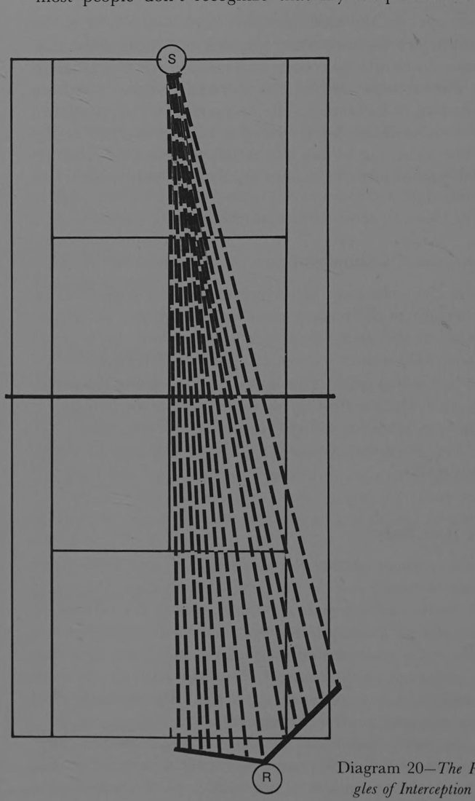
vô ích. Nhưng nếu cây vợt của bạn ở đúng tư thế đánh bóng, thì cơ thể bạn luôn có thể đánh bóng và huy động được bao nhiêu sự hỗ trợ từ cơ thể tùy theo thời gian cho phép. Tôi đã trở nên nổi tiếng nhờ những cú đánh không theo lối mòn của mình, nhưng
nothing. But if your racquet is in hitting position, you body means can always hit the ball and muster as much body support as time will allow. I have become famous for my unorthodox strokes, but
Hình 20: Tư Thế Đón Bóng Của Người Trả Giao Bóng—
ở đúng tư thế đánh bóng cho dù cách cầm vợt hay tư thế thân người của tôi có thể vụng về đến đâu.
proper hitting position no matter how awkward my grip or body position might be.
Bước Về Phía Quả BóngStep Toward the Ball
Bảy mươi lăm phần trăm các cú giao bóng đặt bóng sẽ nằm trong vòng một bước, đặc biệt nếu bạn chặn bóng theo một góc 45°. Góc chặn bóng này không chỉ hạn chế góc của cú giao bóng mà còn giữ
Seventy-five percent of serving placements will be within one step, especially if you intercept at a 45-degree angle. This angle of interception not only limits the angle of the serve, but also keeps
Hình 20.
Trong vòng một bước rưỡi, bạn có thể với tới 85 phần trăm các cú giao bóng, và trong vòng hai bước, bạn có thể trả được 95 phần trăm.
Within a step and a half, you can reach 85 percent of serves, and within two steps, you can return 95 percent.
Nếu bạn bỏ lỡ một cú trả giao bóng, có lẽ là do không quan sát bóng, phản ứng thái quá, không hoàn tất động tác kết thúc, hay đưa vợt ra sau quá nhiều, chứ không phải do tốc độ hay góc của cú giao bóng.
If you miss a return, it is probably because of not watching the ball, overreacting, not completing your followthrough, or taking too much backswing, rather than because of the speed or angle of the serve.
Cú Trả Giao Bóng Kiểu Chích (Jab)The Jab Return
Nhiều người chơi giỏi trả giao bóng của đối phương tốt chỉ bằng một cú chích. Cú chích đem lại một lợi thế rõ rệt cho người trả giao bóng—nó loại bỏ nhu cầu đưa vợt ra sau. Bạn có thể đón bóng ngay khi bóng đang lên và rất sớm sau khi bóng nảy, đôi khi gần như một cú bán vô-lê. Cây vợt đóng vai trò như một tấm bảng dội, và bạn chỉ cần thêm vừa đủ một chút vung ra trước để kiểm soát. Kết quả là bạn dùng chính lực của người giao bóng để chống lại người đó chỉ bằng cách đổi hướng bóng. Cú trả bóng nhanh như vậy rút ngắn thời gian lên lưới của người giao bóng đến mức người đó buộc phải đánh cú vô-lê đầu tiên từ phía sau vạch giao bóng, và bạn có thể tiến lên lưới nhanh hơn.
Many good players return an opponent’s serve well with no more than a jab. The jab offers a definite advantage to the receiver—it eliminates the need for a backswing. You can take the ball on the rise and very soon after the bounce, sometimes almost like a half-volley. The racquet acts as a backboard, and you lend just enough forward swing for control. The result is that you use the server’s own power against him or her by merely deflecting the ball. The quick return so reduces the server’s approach time that he or she must make the first volley from behind the service line, and you are able to advance to the net more quickly.
Tuy nhiên, cú chích có một số nhược điểm. Nó có thể thiếu ổn định trên các mặt sân mềm, nó ít có khả năng biến hóa, và nó khó thành thạo.
However, the jab has some disadvantages. It can be inconsistent on soft surfaces, it offers little possibility of variation, and it 1s difficult to master.
Cú Trả Giao Bóng Cắt (Chip)The Chip Return
Cú cắt bóng (chip), đặc biệt là đánh bằng trái tay, là một trong những cách tốt nhất để duy trì một cú trả bóng ổn định. Bạn có được cú cắt bóng bằng cách thực hiện động tác kết thúc với xoáy ngược (underspin).
The chip shot, especially off the backhand, is one of the best methods of maintaining a consistent return. You achieve the chip by using an underspin followthrough.
Đưa vợt ra sau ít thôi, và đón bóng ngay khi bóng đang lên. Thay vì giữ vợt vuông góc với mặt đất và đánh bóng ở góc 90° để tạo hiệu ứng dội bóng hoàn toàn, hãy ngửa mặt vợt ra sau để giảm mức độ dội bóng của quả bóng và tăng khoảng thời gian bạn có thể giữ bóng trên vợt. Hãy nhớ—bạn càng giữ bóng trên vợt lâu bao nhiêu, bạn sẽ càng kiểm soát được bóng nhiều bấy nhiêu.
With little backswing, take the ball on the rise. Instead of Oo holding your racquet perpendicular to the ground and contacting the ball at a 90-degree angle to produce a full rebound effect, lay back your racquet face to reduce the degree of rebound of the ball and increase the length of time you can keep the ball on your racquet. Remember—the longer you keep the ball on your racquet, the more control you will have.
Hãy đánh những quả bóng cao hướng xuống dưới, vì việc tạo xoáy ngược đòi hỏi bạn phải bắt đầu cây vợt phía trên quả bóng. Hãy vuốt những quả bóng thấp lên trên lưới.
Hit the high balls downward, because underspinning requires starting your racquet above the ball. Slide the low balls above the net.
So Sánh Với Cú Trả Giao Bóng Kiểu ChíchComparison with the Jab Return
Cú trả giao bóng cắt đòi hỏi thời điểm đánh ít chính xác hơn so với cú trả giao bóng kiểu chích.
The chip return requires less precise timing than the jab return.
Ở cú trả giao bóng kiểu chích, cả thân người lẫn cây vợt của bạn đều đang di chuyển về phía trước, vì vậy bạn có hai điều phải cân nhắc.
In the jab return, both your body and your racquet are moving forward, and thus you have two considerations.
Ngược lại, cú trả giao bóng cắt đòi hỏi đưa vợt ra sau nhiều hơn, và vì thế thân người bạn di chuyển về phía trước sau cú đánh chứ không phải trong lúc đánh. Bạn chỉ phải cân nhắc chuyển động ra trước của cây vợt trước và trong khi đánh.
The chip return, however, requires more backswing, and thus your body moves forward after the stroke rather than during. You have only the forward movement of your racquet to consider before and during the stroke.
Cả hai cú trả bóng đều đòi hỏi bạn đón bóng ngay khi bóng đang lên và đánh bóng hướng xuống dưới chân của người giao bóng đang tiến vào.
Both returns require your taking the ball on the rise and playing it downward to the feet of the incoming server.
Tâm Lý Của Việc Trả Giao BóngThe Psychology of the Return of Serve
Trả Giao Bóng MộtReturn of the First Serve
Cú giao bóng một là vị thế chiến thuật mạnh nhất của một điểm bóng. Nếu đội giao bóng chơi đúng cách, họ phải có khả năng thắng điểm bằng cú vô-lê thứ hai. Cách khả dĩ duy nhất để đội của bạn phá vỡ thế kiểm soát này là trả giao bóng một cách đều đặn và buộc phải đánh từng điểm một. Sự đều đặn có một tác động làm mất tinh thần. Trong nhiều trường hợp nó có thể tạo ra áp lực và qua đó làm xói mòn lợi thế của một đội đang thắng thế.
The first serve is the strongest tactical position of a point. If the serving team plays it correctly, they should be able to win the point by the second volley. The only possible way for your team to disrupt this control is to return serve consistently and to force play on each point. Consistency has an unnerving effect. In many cases it can create pressure and thereby erode a winning team’s edge.
Cú giao bóng một rất có thể sẽ nhanh và có góc. Vị trí tốt nhất của bạn để đón nó là điểm giao nhau giữa vạch biên dọc đánh đơn và
The first serve most likely will be fast and angled. Your best position to receive it is the junction of the singles line and the
Hình 21. Từ vị trí này bạn di chuyển—thường
một bước là đủ—tùy theo tốc độ hay góc của cú giao bóng.
one step is enough—according to the speed or angle of the serve.
Bạn di chuyển vào trong và ra ngoài để bù trừ cho tốc độ; bạn di chuyển sang trái hoặc sang phải để thích ứng với góc.
You move in and out to compensate for speed; you move left or right to accommodate angle.
Nếu có thể, hãy đón bóng ngay khi bóng đang lên.
Take the ball on the rise, if possible.
Bạn có thể bước một hoặc hai bước
You may take a step or two
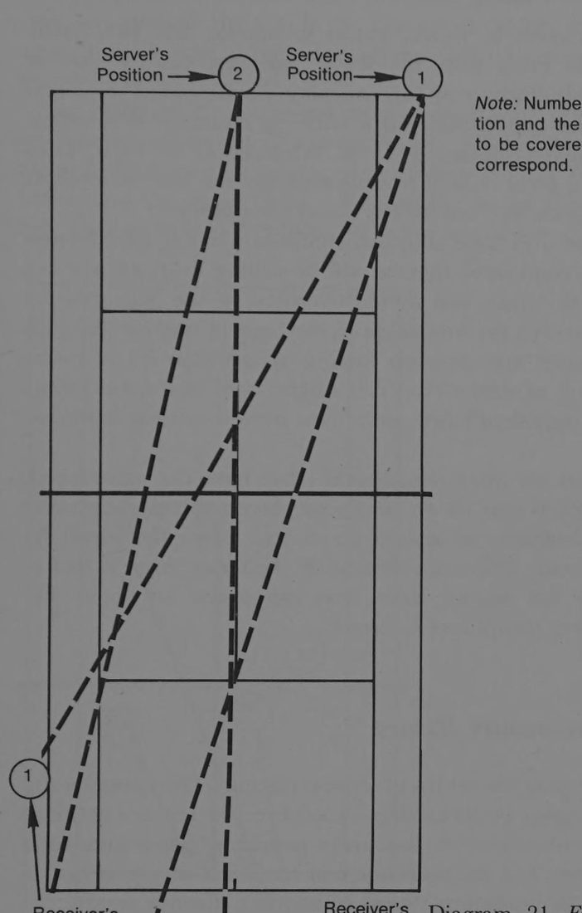
Hình 21: Tìm Vị Trí Tốt Nhất Để Đón Bóng
lùi lại, nhưng hãy nhớ rằng việc bạn lùi lại cho người giao bóng thêm thời gian để lên lưới. Tuy nhiên, hãy đánh bóng ở bất cứ đâu và bất cứ cách nào mà bạn ổn định nhất.
back, but remember that your backing up gives the server more time to get to the net. However, play it wherever and however you are most consistent.
Đánh quá mạnh vào cú giao bóng một bằng cách đứng sát vào để đón bóng hoặc cố gắng đánh một cú trả bóng uy lực có thể hiệu quả trong việc làm người giao bóng mất bình tĩnh, nhưng một lần nữa, đừng đánh đổi sự ổn định.
Overplaying the first serve by standing in close to receive or trying for a booming return can be effective in upsetting the server, but, once again, do not sacrifice consistency.
một khi
but, once ID
Cú giao bóng hai thường dễ xử lý hơn, nhưng hãy cẩn thận.
The second serve is usually easier to handle, but be careful.
Độ xoáy mà người giao bóng dùng để kiểm soát đôi khi có thể gây rắc rối. Tương tự, bạn có thể đánh quá mạnh vào một cú giao bóng hai nhẹ và do đó đánh mất cơ hội có một cú trả bóng thắng điểm hay một cú vô-lê đầu tiên.
spin the server uses for control can be Sometimes the extra troublesome. Similarly, you can overplay a soft second serve and thereby lose the opportunity for a winning return or first volley.
Trong trận chung kết đánh đôi nam nữ tại Wimbledon năm 1976, Dick Stockton đã gặp rất nhiều khó khăn với cú giao bóng hai nhẹ của tôi. Đó là một yếu tố quan trọng dẫn đến chiến thắng của Tony Roche và tôi.
During the mixed-doubles final at Wimbledon in 1976, Dick Stockton had a great deal of trouble with my soft second serve. It was a major factor in Tony Roche’s and my victory.
Một đối thủ có thể tự tin đến mức về hiệu quả của cú giao bóng hai của mình đến nỗi sẵn sàng thử cú giao bóng một mạnh. Trong trường hợp này, bạn nên đánh quá mạnh vào cú giao bóng một bằng cách bao quát góc sở trường của người giao bóng với hy vọng làm suy sụp sự tự tin của người đó và có lẽ buộc người đó phải thử một kiểu giao bóng một có xác suất thấp hơn. Bạn thậm chí có thể thắng được nhiều điểm từ cú giao bóng một của một đối thủ như vậy hơn là từ một cú giao bóng hai đều đặn.
An opponent may have so much confidence in the effectiveness of his or her second serve that he will be willing to try for the big first serve. In this case, you should overplay on the first serve by covering the server’s favorite angle in the hope of undermining his or her confidence and perhaps forcing an attempt for a lower- percentage kind of first serve. You might even win more points from such an opponent’s first serve than from a consistent second serve.
Các cú giao bóng hai thường mang tính máy móc—chúng có cùng tốc độ, độ xoáy và mục tiêu. Nếu bạn là người chơi trình độ cao, bạn có thể tận dụng tính dễ đoán như vậy của các cú giao bóng hai và làm người giao bóng mất bình tĩnh bằng cách trả bóng một cách đều đặn và có chủ đích. Nếu người giao bóng bị áp lực buộc phải thay đổi cú giao bóng hai của mình, bạn có thể chắc chắn rằng sự tự tin của người đó đã hoàn toàn bị lung lay.
Second serves are often mechanical—they have the same speed, spin, and target. If you are an advanced player, you can capitalize on such predictability of second serves and upset the server by making consistent, deliberate returns. If the server is pressured to change his or her second serve, you can count on his or her confidence being completely shaken.
Cú Trả Giao Bóng Chéo SânThe Crosscourt Return
Bạn thường đánh cú trả giao bóng chéo sân. Thỉnh thoảng hãy dùng những cú khác để phá vỡ tính dễ đoán—một cú lốp bóng qua đầu người đứng lưới của đội giao bóng, hay một cú đánh dọc biên để ngăn chặn việc cướp bóng (poach). Đôi khi những cú như vậy là những cú thắng điểm, nhưng tỉ lệ thành công rất thấp. Chúng ta hãy xem xét vì sao cú trả giao bóng chéo sân là cú trả bóng hiệu quả nhất.
You usually play the return of serve crosscourt. Occasionally use other shots to upset predictability—a lob over the server’s netman, or a down-the-line drive to discourage poaching. Sometimes such shots are winners but the percentage of success is very low. Let us consider why the crosscourt return is the most effective return.
Vì Sao Cú Trả Giao Bóng Chéo Sân Là Hiệu Quả NhấtWhy the Crosscourt Return Is Most
Nhất
Effective
Bằng cách trả bóng chéo sân, bạn vừa tránh được khả năng bị người đứng lưới của đội giao bóng đánh một cú vô-lê tấn công, vừa gây áp lực buộc người giao bóng đang tiến vào phải đánh một cú vô-lê tốt. Tuy nhiên, cú trả giao bóng chéo sân còn có một lợi thế quan trọng hơn nữa: đường bay theo đường chéo của
By returning crosscourt, you both avoid the possibility of an offensive volley by the server’s netman and pressure the incoming server to make a good volley. However, the crosscourt return has an even more important advantage: the diagonal path of the
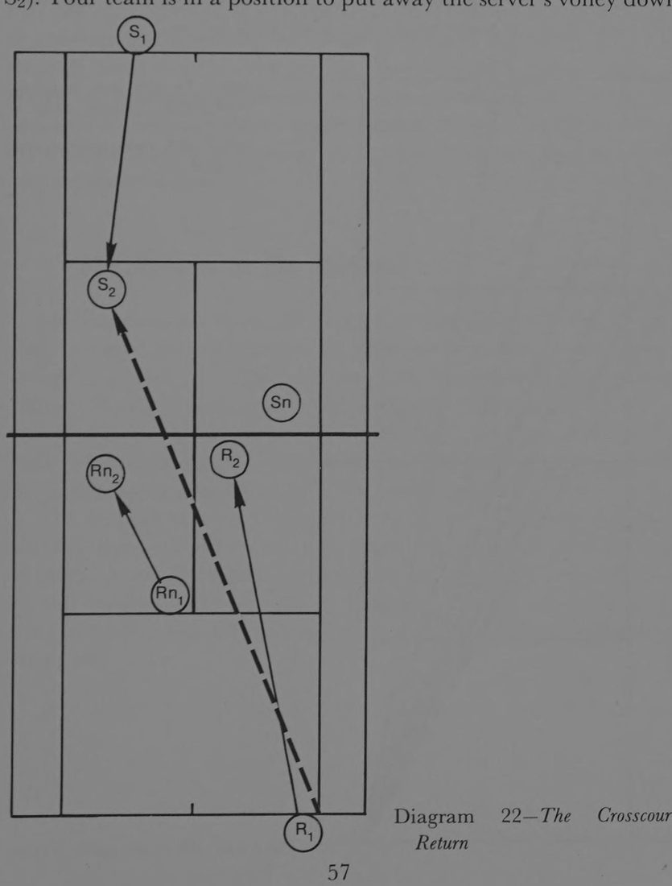
cú trả bóng làm tăng thời gian bay của bóng và do đó cho bạn thêm thời gian để tiến lên lưới. Nếu bạn có thể tới lưới trước hoặc cùng lúc với người giao bóng, thì lợi thế ban đầu của người giao bóng sẽ bị vô hiệu hóa.
return increases the ball’s flight time and thereby allows you more time to approach the net. If you can get to the net before or at the same time as the server, the server’s initial advantage will be neutralized.
Hình 22. Khi bạn đang di chuyển tới một vị trí ở
lưới nơi bạn có thể cắt đứt mọi góc (Ry ~ Rez) và cú trả bóng của bạn đã vượt qua người đứng lưới của đội giao bóng, thì người đứng lưới của bạn di chuyển để hạn chế và uy hiếp người giao bóng (Rn; ~ Rng) khi người giao bóng tiến vào (S; >
net where you can cut off any angles (Ry ~ Rez) and your return has cleared the server’s netman, your netman moves to restrict and intimidate the server (Rn; ~ Rng) as the server approaches (S; >
Hình 22: Cú Trả Giao Bóng Chéo Sân
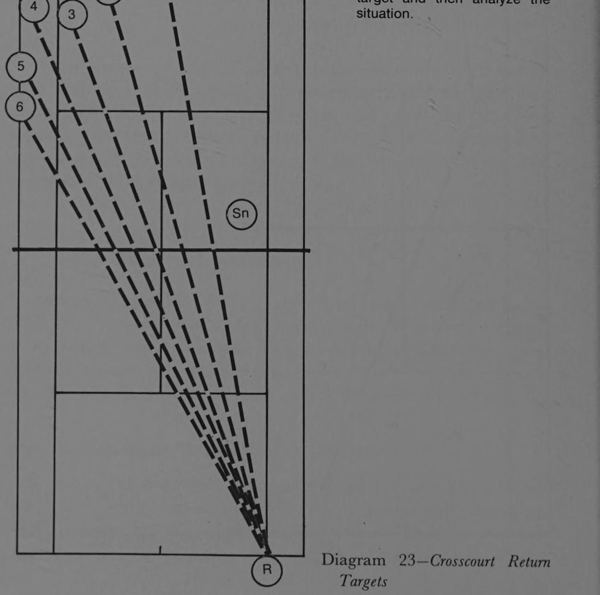
khoảng giữa sân, vốn đã được mở ra nhờ góc của cú trả giao bóng chéo sân của bạn.
the middle, which has been opened up by the angle of your crosscourt return.
Để càng làm tăng thời gian bay theo đường chéo của cú trả giao bóng chéo sân, hãy đánh bóng bằng sự kết hợp giữa xoáy ngược nhẹ và góc nhọn. Xoáy ngược cho bóng một quỹ đạo thấp và giữ bóng gần lưới; góc đánh xuống của bóng giữ cho bóng không vượt qua lưới cho đến tận khoảnh khắc cuối cùng trước khi bóng nảy. Sự kết hợp giữa xoáy ngược và góc này khiến cú trả giao bóng chéo sân cực kỳ khó đánh vô-lê đối với người giao bóng đang tiến vào, đồng thời cho bạn thêm thời gian để lên lưới sau cú trả bóng của mình.
To increase the diagonal flight time of the crosscourt return even more, play the ball with a combination of soft underspin and sharp angle. The underspin gives the ball a low trajectory and keeps the ball close to the net; the downward angle of the ball keeps the ball from crossing the net until the last moment before it bounces. This combination of underspin and angle makes the crosscourt return extremely difficult for the incoming server to volley, while allowing you more time to come to the net after your return.
Lưu ý: Để áp dụng ví dụ này từ một vị trí khác, hãy vẽ một
Note: To use this example from other position, draw a
Xem Hình 23 để biết những mục tiêu khả dĩ cho cú trả giao bóng chéo sân của bạn.
Diagram 23 for possible targets for your crosscourt return.
Một số mục tiêu có tỉ lệ thành công cao hơn những mục tiêu khác. Một cú trả bóng tới Mục tiêu 1 thực ra không phải là một cú trả bóng chéo sân; người đứng lưới của đội giao bóng có thể chặn nó rất dễ dàng. Người đứng lưới của đội giao bóng có lẽ cũng có thể chặn một cú trả bóng tới Mục tiêu 2, nhưng cú trả bóng đó sẽ là một cú khó đánh vô-lê đối với người giao bóng. Một cú trả bóng tới Mục tiêu 3 là cú dễ nhất để người giao bóng với tới nhanh chóng và đánh chéo sân trước khi bạn kịp áp sát lưới. Cú trả giao bóng có tỉ lệ hiệu quả tốt nhất là cú đánh tới Mục tiêu 4. Người giao bóng chỉ cần một bước ra khỏi đường lên lưới nhanh nhất của mình, nhưng đó là mục tiêu an toàn nhất của bạn. Một cú trả bóng tới Mục tiêu 5 kéo người giao bóng ra thật rộng, nhưng đó là một mục tiêu ngắn đối với bạn và do đó đòi hỏi khả năng kiểm soát tốt. Mục tiêu 6 kéo người giao bóng ra còn rộng hơn nữa, nhưng đó cũng là một mục tiêu rất ngắn và do đó có tỉ lệ thành công thấp.
Certain targets have a higher percentage of success than others. A return to Target / is not really a crosscourt return; the server’s netman can intercept it very easily. The server’s netman possibly can intercept a return to Target 2 also, but the return would be a difficult one for the server to volley. A return to Target 3 is the easiest for the server to reach quickly and play crosscourt before you can close. The return of the serve that has the best percentage of effectiveness is one hit to Target 4. It takes the server only one step off his fastest line to the net, but it is your safest target. A return to Target 5 pulls the server wide, but it is a short target for you and therefore requires good control. Target 6 pulls the server even wider, but it is also a very short target and therefore has a low percentage of success.
Cú Trả Bóng Vào Người Đứng LướiThe Return at the Netman
Hình 24. Một cú trả bóng vào người đứng lưới của đội giao bóng rút ngắn
thời gian bay của cú trả bóng đến mức bạn bị giữ ở phía sau trong khi người đồng đội của bạn ở phía trên. Bạn bao quát hành lang biên, và người đứng lưới của bạn di chuyển lên áp sát lưới (Rn; > Rng). Hy vọng của bạn là người đứng lưới của đội giao bóng sẽ bị ép sát hoặc bị bất ngờ đến mức chỉ có thể phản ứng phòng ngự, và bạn có thể tiến lên bằng một cú lên lưới hoặc người đứng lưới của bạn có thể chặn cú vô-lê của người đứng lưới đội giao bóng.
flight time of the return that you are kept back while your partner is up. You cover the alley, and your netman moves to close the net (Rn; > Rng). Your hope is that the server’s netman will be so jammed or taken aback by the return that he or she can respond only defensively, and you can move forward with an approach shot or your netman can intercept the server’s netman’s volley.
Mục đích của một cú trả bóng như vậy là ngăn người đứng lưới của đội giao bóng rời khỏi hành lang biên và cướp bóng (poach). Nhưng bạn nên cho người đứng lưới của mình biết trước về chiến thuật này trước khi bạn dùng nó (có lẽ bằng một tín hiệu kín đáo), để người đó sẵn sàng áp sát lưới thay vì chờ đợi để bao quát khả năng người đứng lưới đội giao bóng cướp cú trả bóng chéo sân thường lệ của bạn.
The purpose of such a return is to keep the server’s netman from ‘moving from the alley and poaching. But you should make your netman aware of the tactic before you use it (perhaps by a hidden signal), so that he or she will be ready to close the net rather than wait to cover a possible poach by the server’s netman of your usual crosscourt return.
Kip)
Kip)
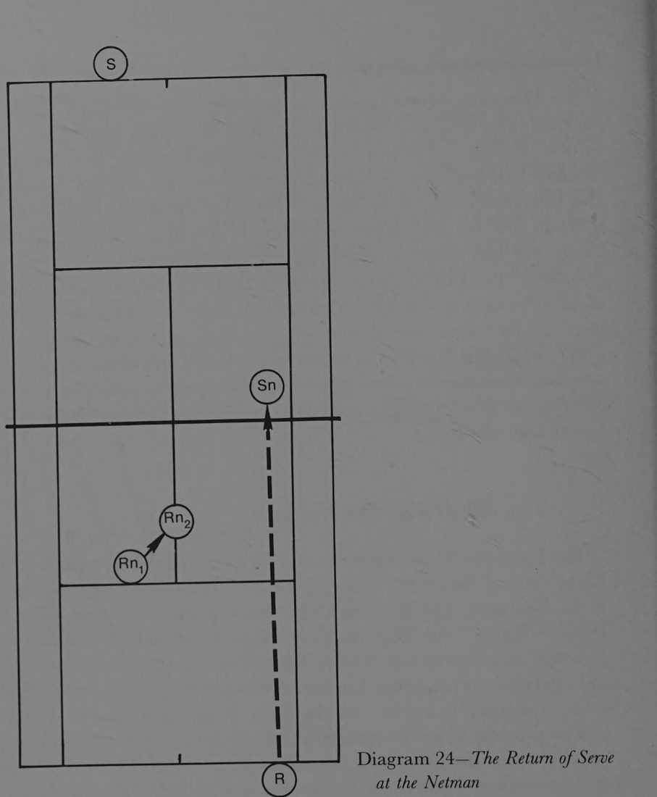
Hình 24: Cú Trả Giao Bóng Vào Người Đứng Lưới
Hình 25. Khi bạn trả bóng dọc hành lang biên, người đứng lưới
của đội giao bóng không bị ép sát và có cơ hội tạo ra một số góc tấn công. Để hạn chế cú vô-lê của người đứng lưới đội giao bóng và qua đó giảm tiềm năng tấn công của người đó, hãy đánh thật mạnh để tạo ra một phản ứng là một cú vô-lê yếu hoặc muộn. Sau đó cả bạn và người đứng lưới của bạn cùng đánh quá mạnh (Ry > Re và Rn; > Rng) để kẹp cú vô-lê trước khi người giao bóng có thể hỗ trợ. Tuy nhiên, bạn phải thắng điểm nhanh chóng trước khi đội giao bóng ổn định lại thế trận.
netman is not jammed and has the opportunity to make some offensive angles. To limit the volley of the server’s netman and thereby reduce his or her offensive potential, hit very hard to produce a response that is a weak or late volley. Then both you and your netman overplay (Ry > Re and Rn; > Rng) to pinch the volley before the server can help. However, you must win the point quickly before the serving team stabilizes itself.
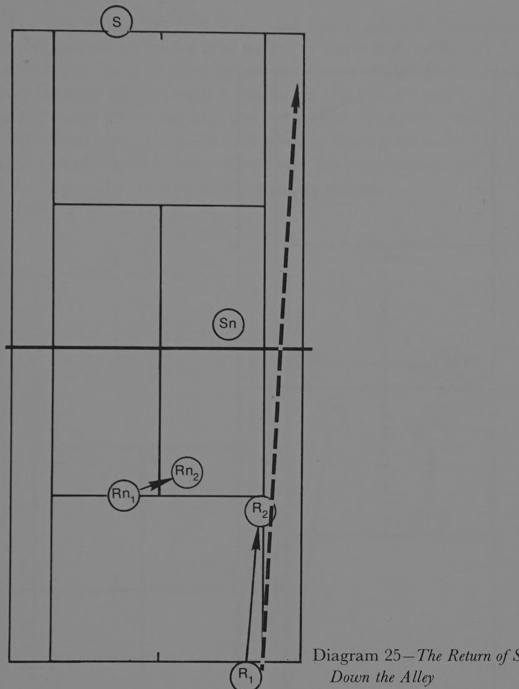
Hình 25: Cú Trả Giao Bóng
tính dễ đoán. Tuy nhiên, nó có tỉ lệ hiệu quả thấp, một phần vì lưới cao hơn khi vượt qua hành lang biên.
predictability. However, it has a low percentage of effectiveness, partly because of the extra height of the net as it crosses the alley.
Cú Trả Giao Bóng Kiểu Lốp Qua Người Đứng Lưới Của Đội Giao BóngThe Lob Return Over the Server’s Netman
Cú trả giao bóng kiểu lốp dọc biên buộc người đứng lưới của đội giao bóng phải lùi lại để đánh một cú đập bóng trên cao. Nếu đội của bạn trả được cú đập bóng trên cao đó, bạn có cơ hội áp sát lưới.
The lob return of serve down the line’ forces the server’s netman back for an overhead. If your team returns that overhead, you have the opportunity to close the net.
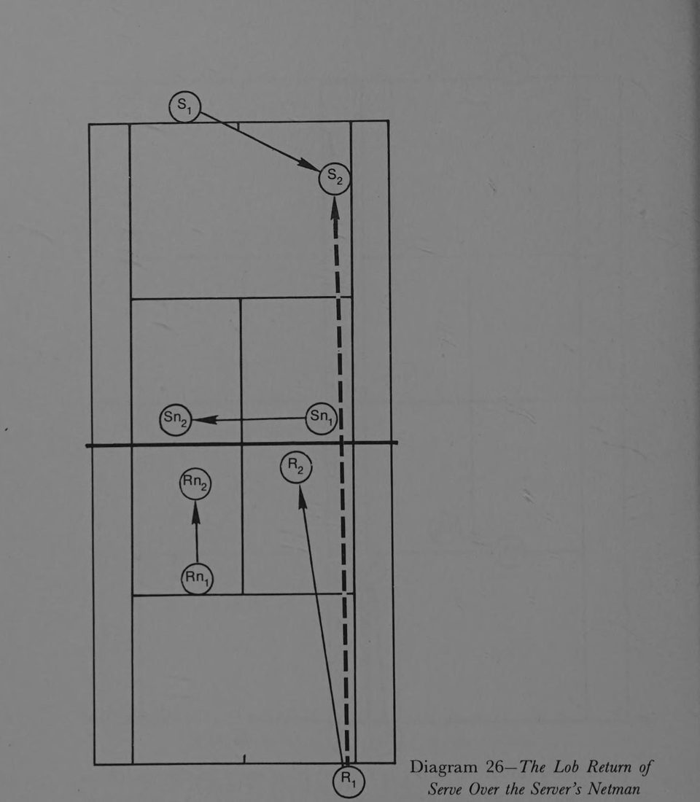
Hình 26: Cú Trả Giao Bóng Kiểu Lốp
Hình 26), vô-lê, qua đó cho phép đội của bạn áp sát lưới (Ri ~ Rz và Rn; > Rng). Hoặc cú lốp có thể khiến đội giao bóng mất cảnh giác. Có lẽ họ sẽ phải đáp trả bằng một cú lốp, một lần nữa cho đội của bạn cơ hội giành thế tấn công. Dù đội giao bóng chơi cú lốp theo cách nào đi nữa, đội của bạn vẫn phải áp sát lưới nhanh chóng để tận dụng lợi thế tạm thời của mình.
Diagram 26), volley, thereby allowing your team to close (Ri ~ Rz and Rn; > Rng). Or the lob might catch the serving team offguard. Perhaps they will have to answer with a lob, again giving your team the opportunity to take the offensive. No matter how the serving team plays the lob, your team must close quickly to make use of your momentary advantage.
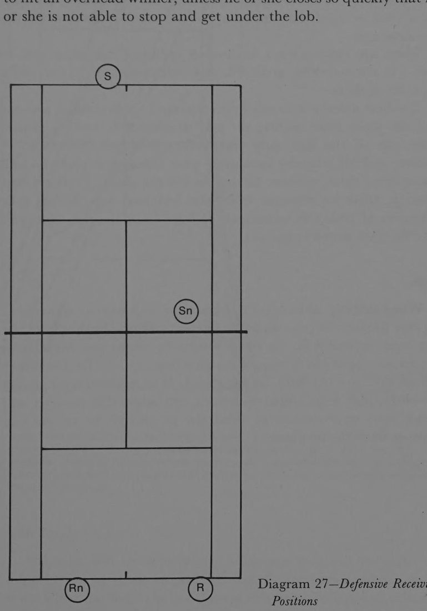
Cú lốp dọc biên là một chiến thuật tốt để chống lại những cú giao bóng mạnh hoặc chống lại một người đứng lưới của đội giao bóng chậm chạp hay có cú đập bóng trên cao yếu. Nó có tỉ lệ hiệu quả trung bình. Nó không hiệu quả lắm khi đánh từ ô bên trái vì cú đập bóng trên cao thuận tay của người đứng lưới đội giao bóng bao quát được hành lang biên và người giao bóng cũng có thể bao quát bằng cú thuận tay của mình.
The lob down the line is a good tactic against big serves or against a server’s netman who is slow or has a weak overhead. /t has a medium percentage of effectiveness. It is not so effective from the left court because the forehand overhead of the server’s netman covers the alley and the server also can cover with his or her forehand.
Cú trả giao bóng kiểu lốp chéo sân rất mạo hiểm. Người giao bóng phải có khả năng
The crosscourt return lob is very risky. The server should be able
Hình 27: Đón Bóng Phòng Ngự
Nếu cú giao bóng quá mạnh hoặc đội của bạn ít có cơ hội bẻ giao bóng vì khả năng trả bóng kém của bạn hay lối chơi lưới tốt của đối phương, hãy thử một tư thế phòng ngự—bạn và người đồng đội cùng đứng ở vạch cuối sân—cho đến khi xuất hiện một sơ hở và cả hai bạn
If the serve is overpowering or your team is getting few opportunities to break because of your poor returning or the good net play of the opposition, try a defensive posture—you and your — partner at the baseline—until an opening develops and you both Diagram 27. If only the first serve is difficult,
Hình 27. Nếu chỉ có cú giao bóng một là khó,
thì người đứng lưới của bạn có thể tiến lên vị trí thường lệ cho cú giao bóng hai.
There are various ways to develop openings that allow you to move to the net: lobs, groundstrokes, soft angles, or, better yet, a mixture of these.
Có nhiều cách khác nhau để tạo ra những sơ hở cho phép bạn tiến lên lưới: lốp bóng, đánh nền, đánh góc mềm, hoặc tốt hơn cả là kết hợp những cách này.
The best defense is to mix shots constantly and thereby prevent the net team from getting set and developing a unified attack.
Cách phòng ngự tốt nhất là liên tục trộn lẫn các cú đánh và qua đó ngăn đội đứng lưới ổn định thế trận và phát triển một cuộc tấn công thống nhất.
Also, cut off the ball early whenever possible to force them to recover quickly, thereby increasing your chances to play the ball away from them without having to hit big shots. Trying to hit passing shots or winners from the. baseline will defeat your objective of trying to unbalance or force back the net team and thereby gain access to the net.
Ngoài ra, hãy chặn bóng sớm bất cứ khi nào có thể để buộc họ phải hồi vị nhanh chóng, qua đó tăng cơ hội đánh bóng đi xa khỏi họ mà không cần phải đánh những cú mạnh. Việc cố gắng đánh những cú bóng qua người hay những cú thắng điểm từ vạch cuối sân sẽ làm hỏng mục tiêu của bạn là tìm cách làm mất thăng bằng hoặc đẩy lùi đội đứng lưới để qua đó giành được quyền lên lưới.
Lobs When lobbing, always try to force your opponent to move back
Lốp Bóng Khi lốp bóng, hãy luôn cố buộc đối thủ của bạn phải lùi lại
Diagram 28, the farther from the
Hình 28, đối thủ của bạn càng xa lưới bao nhiêu thì người đó càng tạo được ít góc hơn bấy nhiêu (và các góc chính là chìa khóa để đánh bại một thế phòng ngự ở vạch cuối sân) và người đó càng ít đưa được lực vào một cú đập bóng trên cao. Nếu xuất hiện một sơ hở tạm thời, hãy đánh một cú đánh nền với góc mềm, có thể sẽ bắt được đối thủ của bạn đang ở xa lưới trước khi người đó kịp hồi phục sau cú đập bóng trên cao.
net your opponent is, the fewer angles he or she can make (and angles are the key to beating a baseline defense) and the less power he or she can put into an overhead. If a momentary opening develops, play a groundstroke with a soft angle that possibly will catch your opponent away from the net before he or she can recover from the overhead.
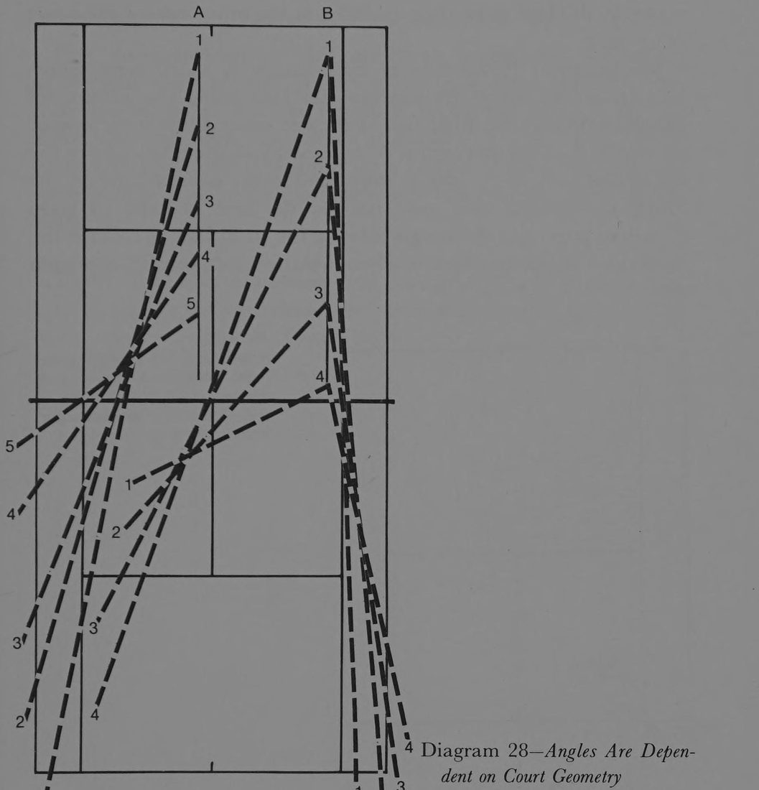
Hình 28: Các Góc Phụ Thuộc Vào Hình Học Sân
Ở Vị trí B (vạch biên dọc đánh đơn) bạn có thể đánh những góc rộng hơn về ô bên trái của đối thủ và những góc thẳng hơn về ô bên phải của đối thủ. Hãy nhớ rằng lưới thấp hơn ở giữa và cho phép bạn đánh những cú nhẹ ra rộng hơn. Ngoài ra, bạn càng ở gần lưới bao nhiêu thì góc càng dễ bấy nhiêu.
Position B (singles line) you can hit wider angles to your opponents’ left court and straighter angles to your opponents’ right court. Remember that the net is lower in the middle and allows you to play soft shots wider. Also, the closer you are to the net, the easier the angle.
Cú Đánh Góc MềmSoft Angle Shots
Mặc dù những cú đánh nhẹ từ khu vực sân sau cho đội đứng lưới cơ hội tạo ra những góc dễ dàng, những cú đánh góc mềm lại là những cú lên lưới tốt khi bóng ở dưới lưới hoặc khi có một khoảng sân ngắn
Although soft shots from the backcourt give the net team the opportunity for easy angles, soft angle shots are good approach shots when the ball is below the net or where there is a short-court
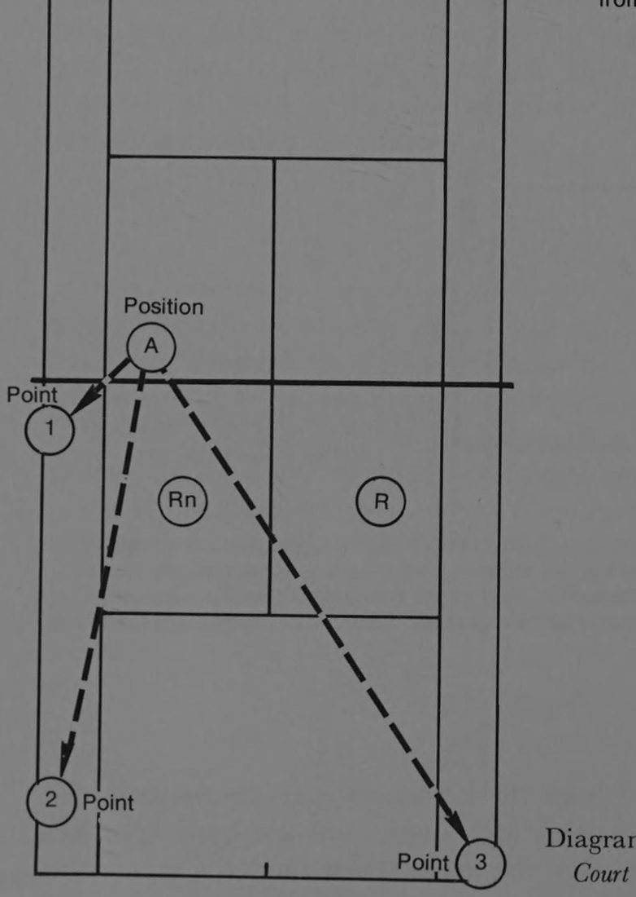
mở ra (bóng phải rơi nhanh xuống phía bên kia sân hoặc bay ra ngoài).
opening (the ball must drop quickly on the other side of the court or go out).
Xem Hình 29 để hiểu thêm về sân ngắn. Sân ngắn và sân dài là những khái niệm để đánh giá lượng diện tích có thể chơi được ở phía bên kia lưới dọc theo một đường từ một điểm ở phía bên này lưới của bạn (Điểm A) tới một điểm ở phía bên kia lưới (Điểm 1, 2, hoặc 3). Hãy cố gắng chơi theo đường dài nhất có thể trên sân; đường dài nhất có thể không phải là tốt nhất vì đối thủ bao quát tốt. Mặc dù chơi theo đường ngắn hay sân ngắn là mạo hiểm nhất, nó có thể hiệu quả khi bạn thực hiện một cú lên lưới nhẹ và có góc.
Diagram 29 for further explanation of short court. Short court and long court are concepts for evaluating the amount of playable area on the other side of the net along a line from a point on your side of the net (Point A) to a point on the other side of the net (Point 1, 2, or 3). Try to play the longest avazlable line on the court; the longest line may not be the best because of good opponent coverage. Although playing the short line or court is the most risky, it can be effective when making a soft, angled approach shot.
Lưu ý: Điểm 1 là sân ngắn nhất tính từ Vị trí A, Điểm 2 là sân trung bình tính từ Vị trí A,
Note: Point 1 is shortest court from Position A, Point 2 is medium court from Position A,
Hình 29: Sân Ngắn
Cú Đánh NềnGroundstrokes
Hãy đánh những cú đánh nền lên giữa sân hoặc vào người đối thủ. Việc luân phiên giữa lực mạnh và xoáy lên nhiều hơn (để làm bóng rơi xuống nhanh) khiến đối thủ của bạn ở lưới phải đoán già đoán non, hạn chế những góc họ có thể tạo ra, và thậm chí có thể làm họ sợ mà lùi lại một hai bước, đặc biệt nếu bạn lốp bóng vài quả. Một khi đội đứng lưới phải lùi lại, bạn có thể khai thác điểm yếu mới của họ và nắm thế tấn công.
Play groundstrokes up the middle or at players. Alternating power and extra topspin (to make the ball drop quickly) keeps your opponents at the net guessing, limits the angles they can make, and may even intimidate them into taking a step or two backward, especially if you put up a couple of lobs. Once the net team retreats, you can exploit their new vulnerability and take the offensive.
Mỗi đội đều có điểm yếu và điểm mạnh. Thời điểm quan trọng nhất để khai thác điểm yếu và vô hiệu hóa điểm mạnh là ở phần trả giao bóng của mỗi điểm bóng.
Every team has weaknesses and strengths. The most important time to exploit the weaknesses and neutralize the strengths is at the return-of-serve segment of each point.
6. Lưới
Lưới
The Net
Khi bạn tiến gần lưới hơn, các cú đánh của bạn đòi hỏi sự nhanh nhẹn nhiều hơn và ít lực hơn. Vì thế, ở vạch cuối sân bạn dùng bàn tay, vai và bước chân để đạt được đủ lực và khả năng kiểm soát cho các cú đánh nền của mình. Khi bạn trả bóng hay đánh một cú lên lưới, chỉ cần bàn tay và vai bạn là đủ cho lực và khả năng kiểm soát. Và khi bạn ở đủ gần lưới để đánh vô-lê, chỉ bàn tay bạn là yếu tố thiết yếu.
As you move closer to the net, your strokes require more quickness and less power. Thus, at the baseline you use your hand, shoulders, and step to achieve sufficient power and control for your groundstrokes. When you return or make an approach shot, only your hands and shoulders are necessary for power and control. And when you are close enough to the net to volley, only your hands are the essential factor.
Trong cú vô-lê, chính cây vợt của bạn dội quả bóng trở lại. Bàn tay bạn, chỉ với một động tác ngắn hướng ra trước, điều khiển cú đánh. Nếu bạn cố tạo ra lực bằng cách đưa vợt ra sau và thực hiện đầy đủ động tác kết thúc, bạn sẽ lãng phí năng lượng và thời gian. Động tác đưa vợt ra sau đòi hỏi thêm thời gian, thời gian thêm đó khiến bóng rơi xuống trước khi bạn đánh nó, và một động tác kết thúc đầy đủ sẽ lấy mất thời gian để bạn chuẩn bị cho cú vô-lê. Cách tốt nhất để củng cố động tác này ở lưới là trong lúc luyện tập, hãy quấn một băng đô quanh hai cánh tay trên để ép hai khuỷu tay sát vào nhau, khiến bạn không thể vung vợt mà chỉ có thể đấm bóng (punch) trong cú vô-lê.
In the volley your racquet itself rebounds the ball. Your hands, with only a short forward motion, control the shot. If you try to create power with backswing and full followthrough, you will be wasting energy and time. A backswing requires extra time, the extra time allows the ball to drop before you hit it, and a full next followthrough takes away from your time to prepare for the volley. The best way to reinforce this action at the net is during practice to put a headband around your upper arms to force your elbows together so that you cannot swing but only punch the volley.
Để xem xét cú vô-lê kỹ hơn, chúng ta hãy tách ra bốn vị trí trong đánh đôi—người giao bóng, người trả giao bóng, người đứng lưới của đội giao bóng, và người đứng lưới của đội trả giao bóng—và xem vai trò của họ liên quan đến lưới như thế nào.
To examine the volley further, let us isolate the four positions in doubles—the server, the receiver, the server’s netman, and the receiver’s netman—and see what their roles are in relation to the net.
Người Giao BóngThe Server
Cú Vô-Lê Đầu TiênThe First Volley
Khi bạn giao bóng, bạn cố đạt được hai kết quả: thời gian bay tối đa cho cú giao bóng của bạn để bạn có thể tiến vào và áp sát lưới, và một cú trả bóng hạn chế từ người trả giao bóng để bạn hoặc người đứng lưới của bạn có thể dễ dàng đánh vô-lê đi ở lưới. Khi bạn tiến vào, bạn cố đánh vô-lê cú trả bóng của người trả giao bóng. Bạn càng gần lưới và cú vô-lê đầu tiên này được đánh càng nhanh bao nhiêu, thì người trả giao bóng càng ít thời gian để hồi vị và trả lại cú vô-lê bấy nhiêu. Nếu cú trả bóng của người trả giao bóng cao, bạn có thể đánh cú vô-lê đầu tiên của mình xuyên qua người đứng lưới của đối phương. Nếu cú trả bóng khiến bạn phải đánh một cú vô-lê đầu tiên thấp hoặc sâu, hãy đánh nó chéo sân rồi tiến lên để khép góc. Nếu bạn hoặc người đồng đội của bạn không thắng được điểm bằng cú vô-lê thứ hai, lợi thế giao bóng của bạn sẽ bị vô hiệu hóa.
When you serve, you try to achieve two results: maximum flight time of your serve so that you can approach and get in tight at the net, and a limited return from the receiver that you or your netman can volley away easily at the net. When you approach, you try to volley the receiver’s return. The closer you are to the net and the more quickly you make this first volley, the less time the receiver has to recover and return the volley. If the receiver’s return is high, you can play your first volley through the opposing netman. If the return is such that you must make a low or deep first volley, play it crosscourt and then move forward to close the angle. If you or your partner do not win the point by the second volley, your serving advantage will be neutralized.
Đôi khi tốc độ thân người của bạn khi tiến lên lưới đóng vai trò như một lực đánh bóng, và bạn lao qua cú đánh. Hoặc bạn tạo ra tốc độ lớn đến mức không kịp chuẩn bị vợt hay đổi hướng. Để giảm bớt sự mất kiểm soát như vậy, hãy ghi nhớ trình tự sau đây cho cú vô-lê đầu tiên.
Sometimes your body speed as you approach the net acts as a hitting force, and you run through the shot. Or you build up so much speed that you do not have time to prepare your racquet or change direction. To temper such loss of control, keep in mind the following procedure for the first volley.
Khi bạn tiến lên sau cú giao bóng của mình, hãy chỉ chạy nhanh đến mức bạn còn giữ được thăng bằng. Hãy rút ngắn sải chân thành những bước ngắn (stutter steps) khi người trả giao bóng đánh cú trả bóng. Khi bạn đánh cú vô-lê đầu tiên, hãy vươn xuyên qua bóng để cú đánh của bạn, chứ không phải tốc độ thân người, điều khiển quả bóng. Hãy nghiêng mặt vợt để tạo xoáy ngược và kiểm soát. Sau khi đánh cú vô-lê đầu tiên, hãy tiếp tục tiến lên để có góc tốt hơn và cơ hội tốt hơn để hoàn tất
When you approach after your serve, run only as fast as maintaining your balance will allow. Shorten your stride to stutter steps as the receiver hits the return. When you make your first volley, reach through the ball so that your stroke, not your body speed, controls the ball. Angle the face of your racquet for underspin and control. After hitting the first volley, keep moving forward for a better angle and a better chance to complete the
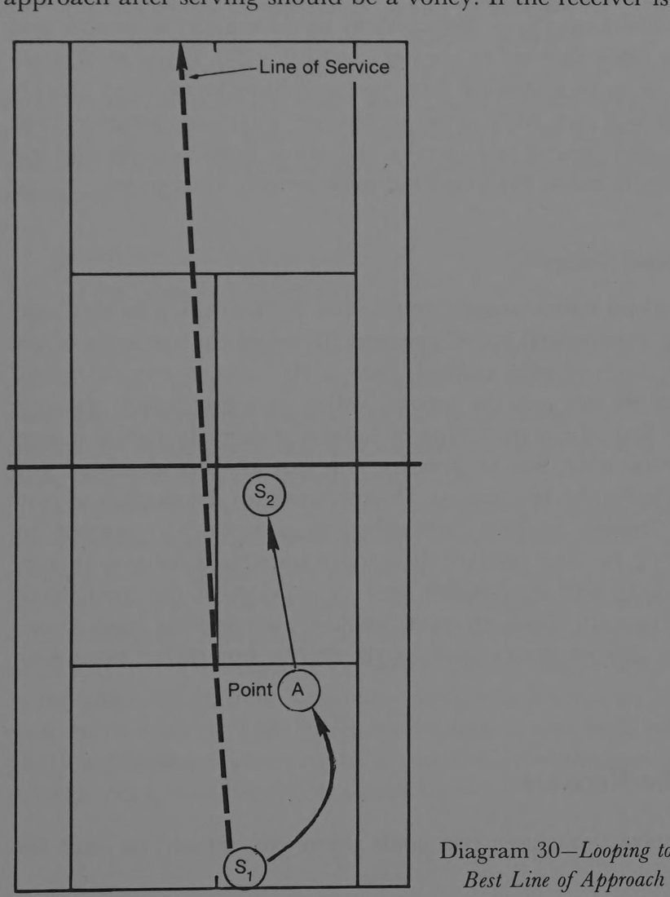
việc áp sát lưới bằng cú vô-lê thứ hai. Hãy rút ngắn bước chân để giữ thăng bằng, kiểm soát tốc độ cơ thể, và cho phép đổi hướng dễ dàng hơn. Trong suốt quá trình tiến lên, hãy giữ hai tay càng xa về phía trước càng tốt để bạn có thể vươn tới bóng mà không bị cơ thể cản trở. Tuy nhiên, đừng để đầu vợt hạ thấp xuống dưới bàn tay, nếu không cổ tay bạn sẽ mất đi sự vững chắc. Luôn cố đưa bàn tay xuống dưới bóng bằng cách khuỵu gối xuống và đưa vai về phía trước.
close of the net by the second volley. Shorten your steps to maintain balance, control body speed, and permit easier change of direction. Throughout the approach, keep your hands as far forward as possible so that you can reach for the ball without your body interfering. However, do not drop your racquet head below your hand, or your wrist will lose its firmness. Always try to get your hand below the ball by bending your knees and bringing your shoulders forward.
Những Ngoại Lệ Của Cú Vô-Lê Lên LướiExceptions to the Approach Volley
Có một số ngoại lệ đối với nguyên tắc chung rằng bạn
There are some exceptions to the general rule that your
Hình 30: Vòng Lượn Để Tìm
đứng vào và đón bóng sớm đến mức cú trả bóng luôn buộc bạn phải chậm lại, hãy để cú trả bóng nảy lên thành bán vô-lê, rồi sau đó bạn nên tiến lên lưới, và sau đó đánh cú lên lưới của bạn. Người trả giao bóng có thể sẽ bị quá dấn thân trong cú lên lưới của chính mình sau khi đánh cú trả bóng, và sẽ không thể xử lý được tốc độ tăng thêm của quả bóng. Hoặc người đứng lưới của đội trả giao bóng, cảm nhận được sự do dự của bạn và thấy trước khả năng có cú bán vô-lê, có thể rời khỏi hành lang biên của mình để cướp bóng, mở ra cho bạn một sơ hở dọc biên.
stand in and receive so early that the return always forces you to more slowly, let the return half-volley, then you should approach bounce up to net level, and then drive your approach shot. The receiver possibly will be overcommitted in his or her own approach after making the return, and will not be able to handle the extra speed of the ball. Or the receiver’s netman, sensing your hesitation and seeing the possible half-volley, may vacate his or her alley to poach, giving you an opening down the line.
Một ngoại lệ khác xảy ra khi một vị trí hay góc giao bóng không cho bạn góc lên lưới tốt nhất. Tình huống này đòi hỏi bạn phải vòng lượn—di chuyển từ vị trí giao bóng đến đường lên lưới tốt nhất
Another exception occurs when a serving position or angle does not give you the best angle of approach. This situation requires your looping—moving from the serving position to the best line of
Hình 30.
Bạn phải vòng lượn (S₁ > Điểm A) để cân đối việc bao quát sân, rồi sau đó bạn tiến lên lưới (Điểm A > Sg). Nếu bạn đi thẳng từ S₁ đến Sg theo một đường thẳng, bạn sẽ phải di chuyển nhanh đến mức không có thời gian đổi hướng, chuẩn bị vợt và kiểm soát cú đánh của mình. Để có thời gian thực hiện vài bước thêm cho việc vòng lượn, bạn phải điều chỉnh cú giao bóng của mình.
You must loop (S; > Point A) to balance court coverage, and then you move forward to the net (Point A > Sg). If you go directly from S; to Sg in a straight line, you will have to move so quickly that you will not have time to change direction, prepare your racquet, and control your stroke. To allow time to make the few extra steps to make the loop, you must modify your serve.
Cú Vô-Lê Thứ HaiThe Second Volley
Cú vô-lê thứ hai thường quyết định điểm bóng. Cho đến lúc này, đội của bạn đã duy trì được thế tấn công và cản trở những nỗ lực của đội trả giao bóng nhằm giành thế kiểm soát. Giờ là lúc để thắng điểm.
The second volley usually determines the point. Up to now your team has maintained its offense and thwarted the attempts of the receiving team to gain control. Now is the time to win the point.
Tuy nhiên, đừng xếp cú vô-lê thứ hai vào một phạm trù tách biệt khỏi dòng chảy của những cú đánh trước đó hay sau đó. Về lý thuyết, nó có thể là một cú then chốt, nhưng trong thực tế nó chỉ là một cú đánh nữa mà bạn thực hiện để có kết quả tốt nhất. Đừng phá vỡ nhịp điệu lối chơi của bạn hay tự gây thêm áp lực tâm lý cho mình bằng cách coi cú đánh này là đặc biệt. Điều quan trọng hơn đối với bạn là đánh mỗi cú càng tốt càng tốt và hỗ trợ cho cú tiếp theo. Sự đều đặn như vậy tự nó đã là một cuộc tấn công, vì đội đối phương biết rằng họ không thể trông chờ vào những lỗi của bạn để ghi điểm, mà phải tự giành lấy chúng.
However, do not put the second volley into a category separate from the flow of the preceding or following shots. In theory it may be a pivotal play, but in practice it is just another shot that you play to obtain the best results. Do not break up the rhythm of your play or impose another psychological pressure on yourself by considering the shot special. It is more important for you to play each shot as well as possible and in support of the next. Such consistency is an attack in itself, because the opposing team knows it cannot rely on your errors to get points, but rather must earn them.
Người Trả Giao BóngThe Receiver
Khi là người trả giao bóng, bạn có hai mục tiêu khi trả bóng: hạn chế thời gian để người giao bóng lên được lưới bằng cách chặn góc của cú giao bóng và đón bóng ngay khi bóng đang lên, và tạo ra một cú trả bóng thấp hoặc khó với đủ góc để tăng thời gian bay của quả bóng và kéo người giao bóng ra xa khỏi giữa sân.
As receiver you have two goals when you return: to limit the time the server has to get to the net by cutting off the angle of the serve and taking the ball on the rise, and to make a low or difficult return with enough angle to increase the flight time of the ball and to pull the server away from the middle of the court.
Sau khi thực hiện cú trả bóng, bạn cố cản trở bước tiến của người giao bóng bằng cách trả lại các cú vô-lê thứ nhất và thứ hai của người đó, qua đó đạt được thế giằng co mà cuối cùng sẽ vô hiệu hóa lợi thế tấn công ban đầu của người giao bóng. Có lẽ bạn có thể tạo ra một sơ hở cho cú lên lưới của chính mình bằng cách trộn lẫn tốc độ, lốp bóng, hay dùng bất kỳ phương tiện nào khác để làm đội giao bóng nản chí. Khác với chiến thuật rõ ràng giao bóng rồi lên lưới của người giao bóng, chiến thuật của bạn khi là người trả giao bóng là liên tục dò xét để tìm ra cách tốt nhất lên lưới và phá vỡ cuộc tấn công của người giao bóng.
Once you make your return, you try to thwart the advance of the server by returning his or her first and second volleys and thereby obtaining a stand-off that eventually will neutralize the server’s initial offensive advantage. Perhaps you can create an opening for your own approach to the net by mixing speeds, lobbing, or using any other such means to frustrate the serving team. Unlike the server’s clear-cut tactic of serve-and-volley, your tactic as receiver is to constantly probe to find the best way to get to the net and disrupt the server’s offensive attack.
Ngay cả khi bạn không thực hiện được cú trả bóng tốt nhất có thể, nhiệm vụ quan trọng nhất của bạn là phải trả được bóng. Nếu bạn buộc phải mắc lỗi, hãy mắc lỗi bằng cách đánh quá sâu thay vì đánh quá ngắn và vào lưới. Luôn có khả năng đội kia sẽ đánh bóng trở lại.
Even if you do not make the best possible return, your single most important task is to make a return. If you are forced to make an error, make it by hitting too deep rather than hitting too short and into the net. There is always the possibility of the other team’s playing it back.
Người Đứng Lưới Của Đội Giao BóngThe Server’s Netman
Khi là người đứng lưới của đội giao bóng, vai trò của bạn khi người đồng đội đang tiến vào là gây áp lực lên người trả giao bóng bằng cách đe dọa cướp bóng (poach), thực hiện việc cướp bóng, hoặc bao quát các góc. Đừng đánh quá mạnh đến mức bạn liên tục để lộ sơ hở; việc gợi ra ý định di chuyển thường hiệu quả hơn là việc cướp bóng thực sự.
As the server’s netman your role when your partner is approach- ing is to put pressure on the receiver by threatening to poach, poaching, or covering angles. Do not overplay so much that you constantly leave openings; the suggestion of movement is often more effective than the actual poach.
Để hạn chế người trả giao bóng càng nhiều càng tốt, hãy duy trì vị trí lưới cổ điển—ở giữa vạch giao bóng giữa sân và vạch biên đánh đôi, và cách lưới một bước chân cộng một tầm với của vợt. Vị trí này, kết hợp với khoảng sân ngắn mà người trả giao bóng có được khi đánh chéo sân rộng, làm giảm diện tích sân mở ra cho người trả giao bóng xuống còn 50 phần trăm. Nếu cú trả bóng của người trả giao bóng có thể đoán trước là chéo sân, hoặc người đó đánh bóng theo cùng một cách trong những tình huống nhất định, bạn còn kiểm soát được nhiều hơn nữa. Người đồng đội của bạn, tức người giao bóng, có thể giúp giữ cho vị trí của bạn mang tính tấn công bằng cách giao bóng vào điểm yếu của người trả giao bóng, nhưng bạn phải sẵn sàng bao quát mọi góc giao bóng.
To restrict the receiver as much as possible, maintain the classic net position—halfway between the center service line and the doubles line, and one step and a racquet reach to the net. This position, coupled with the short court available to the receiver on a wide crosscourt, reduces the amount of court open to the receiver receiver’s return is predictably crosscourt or he to 50 percent. If the have or she plays the ball the same way in certain situations, you even more control. Your partner, the server, can help keep your position offensive by serving to the receiver’s weaknesses, but you ready to cover all angles of service.
phải .
must .be
Khi là người đứng lưới của đội trả giao bóng, bạn có hai trách nhiệm cần giải quyết trước khi bạn ổn định vị trí ở lưới: bao quát khu vực giữa sân trong trường hợp người đứng lưới của đội giao bóng cướp bóng chéo sân, và bao quát hành lang biên trong trường hợp người giao bóng thực hiện cú vô-lê đầu tiên của mình dọc biên. Một khi bóng đã đi qua người đứng lưới của đội giao bóng, bạn dồn sự tập trung vào người giao bóng và cố gắng uy hiếp bước tiến của người đó. Nếu người đồng đội của bạn, tức người trả giao bóng, đang trả bóng tốt, bạn có thể bắt đầu áp sát lưới để đón cú vô-lê đầu tiên của người giao bóng.
responsibilities before you As the receiver’s netman you have two settle in at the net: to cover the center in case the server’s netman poaches crosscourt, and to cover the alley in case the server makes Lee his or her first volley down the line. Once the ball passes the on the server and try to intimidate his or server’s netman, you focus her approach. If your partner, the receiver, is returning well, you may start tight at the net to pick off the server’s first volley.
Tuy nhiên, nếu người trả giao bóng đang trả bóng yếu hoặc người giao bóng đang giao bóng tốt hoặc cơ hội lên lưới của người trả giao bóng bị hạn chế bằng cách nào đó, thì bạn nên bắt đầu ở vị trí xa hơn, tương ứng với mức độ yếu của cú trả bóng. Dù lý do là gì, bạn phải tự đặt mình vào vị trí sao cho bạn và người đồng đội có thể phát triển một cuộc tấn công thống nhất.
However, if the receiver is returning weakly or the server is serving well or the receiver’s opportunity to come to the net is somehow limited, then you start farther back in proportion to the weakness of the return. Whatever the reason, you must so position yourself that you and your partner can develop a united attack.
Đôi khi, ở cú giao bóng hai, bạn có thể đứng càng gần vạch giao bóng giữa sân càng tốt để làm giảm diện tích giao bóng về mặt tâm lý.
Sometimes on the second serve you can stand as close as possible to the center service line to psychologically reduce the serving area.
Bạn có thể liều đánh quá mạnh theo cách này vì cú giao bóng hai thường đem lại một cú trả bóng mạnh, buộc người giao bóng phải đánh một cú vô-lê yếu. Tuy nhiên, nếu người trả giao bóng trả bóng yếu, bạn có thể bị bắt vào một tư thế quá dấn thân. Ngoài ra, bạn phải cẩn thận để không bị bóng đập trúng; nếu bóng chạm vào bạn, điểm thuộc về người giao bóng.
You can afford to overplay this way because the second serve usually brings a strong return that forces a weak volley from the server. However, if the receiver returns weakly, you may be caught ~ ———————— in an overcommitted position. Also, you must be careful not to be hit by the ball; if the ball touches you, the point goes to the server.
Thực tế, đây là một lý do khiến bạn không thử chiến thuật này ở cú giao bóng một; người giao bóng có thể nhắm cú vô-lê đầu tiên của mình vào bạn và thắng điểm.
In fact, this is one reason you do not attempt this tactic on the first serve; the server could aim his or her first volley at you and win the point.
Cả Bốn Người Chơi Đều Ở LướiAll Four Players at the Net
Một khi cả bốn người chơi đều đã ở lưới, mọi người đều ở thế ngang bằng nhau.
Once all four players are at the net, everyone is on equal ground.
Mọi lợi thế và bất lợi của các tư thế xuất phát đều biến mất, những cân nhắc riêng rẽ chuyển thành những cân nhắc tập thể, và các điểm sẽ bị mất do lỗi nhiều hơn là do chiến lược tấn công có tính toán. Bóng sẽ được đánh cao hơn hoặc rộng hơn một chút so với ý muốn, và đội đối phương sẽ cố khai thác những lợi thế như vậy. Điểm then chốt lúc này là chơi theo lợi thế cho đến khi xuất hiện một sơ hở rồi khai thác sơ hở đó. Nếu sơ hở đầu tiên không thành công, hãy quay lại chơi theo xác suất; với sự kiên nhẫn, bạn sẽ thắng điểm.
All the advantages and disadvantages of starting positions disap- pear, the separate considerations change to team considerations, and the points will be lost more by errors than by planned strategy of attack. Balls will be played a bit too high or too wide, and the opposing team will try to capitalize on such advantages. The key at this point is to play advantages until an opening develops and then to play the opening. If the first opening does not work, go back to playing the percentages; with patience you will win the point.
Mặc dù chơi theo lợi thế là nguyên tắc chung để chơi ở lưới, có một số hướng dẫn để bạn tuân theo khi bạn và người đồng đội đang ở lưới.
Although playing advantages is the general rule-of-thumb for playing the net, there are several guidelines for you to follow when you and your partner are at net.
* Khi bạn chơi ở lưới, bạn hoàn toàn dấn thân vào một vị thế tấn công. Và sự dấn thân như vậy đòi hỏi bạn phải đánh những cú vô-lê đã được phán đoán trước và đánh tốt, chứ không phải những cú quật bóng theo kiểu đoán rồi vung vợt.
* When you play the net, you are completely committed to an offensive position. And such commitment requires your making anticipated, well-played volleys rather than guess-and-swing swats at the ball.
* Người đầu tiên có thể với tới bóng thì đón lấy bóng. Bạn không có thời gian để chờ bóng hay bàn bạc xem ai nên đánh cú đó. Những ngoại lệ của nguyên tắc cơ bản này sẽ nổi bật rõ rệt, và bạn có thể thay đổi cách chơi cho phù hợp.
* The first person who can get to the ball takes the ball. You do not have time to wait for the ball or discuss the pros and cons of who should take the shot. Exceptions to this basic rule will stand out, and you can change play accordingly.
* Hãy ý thức về những phản hồi khả dĩ để phát triển khả năng phán đoán trước.
* Be aware of possible responses in order to develop anticipation.
Dù đối thủ của bạn đánh bóng về phía bạn hay phía người đồng đội, hãy luôn đi trước các khả năng và duy trì sự ý thức thường trực về quả bóng. Chúng ta đã thảo luận một số chiến thuật khả dĩ, và bạn nên tính trước rằng đối thủ của mình sẽ đánh đúng những cú như vậy. Đôi khi những điều bất ngờ xảy ra, nhưng tỉ lệ của những cú như vậy làm triệt tiêu hiệu quả của chúng.
Whether your opponent plays the ball to you or your partner, stay ahead of the possibilities and maintain a constant awareness of the ball. We have discussed some likely strategies, and you should count on just such shots from your opponents. Sometimes the unexpected happens, but the percentage of such shots nullifies their effect.
* Bất kể đối thủ của bạn đánh bóng đi đâu, hãy vươn tay ra và ngả thân người về phía quả bóng. Phản ứng này giúp bạn bắt nhịp với diễn biến, chuẩn bị cho mọi tình huống xảy đến, và khuyến khích dòng chảy liên tục đến quả bóng thay vì những phản ứng giật cục kiểu dừng-rồi-chạy. Ngoài ra, việc vươn tới và ngả người về phía quả bóng giữ cho bóng ở phía trước bạn thay vì ở bên hông, vì thân người bạn, hay ít nhất là vai bạn, đang xoay khi tay bạn vươn ra.
* Regardless of where your opponent plays the ball, reach out your hand and lean your body toward the ball. This reaction gets you in rhythm with the play, prepares you for any occurrence, and encourages continual flow to the ball rather than jerky stop-and- start responses. Also, reaching for and leaning toward the ball keeps the ball in front of you instead of to the side, because your body, or at least your shoulders, are turning when your hand reaches.
- Đừng xoay đầu một cách độc lập để dõi theo quả bóng.
- Do not turn your head independently to follow the ball.
Vì việc xoay đầu là một chuyển động chậm, mắt bạn phải liên tục lấy lại tiêu điểm và quả bóng đi qua những điểm mù. Việc ngả người và xoay vai cho bạn đủ tầm nhìn ngoại vi để nhìn thấy đối thủ của mình.
Because turning the head is a slow movement, your eyes must keep refocusing and the ball goes through blind spots. Leaning and moving your shoulders gives you sufficient peripheral vision to see your opponents.
Vị Trí Ở LướiPosition at the Net
Vị trí lưới cơ bản của bạn là ở giữa vạch giao bóng giữa sân và vạch biên đánh đôi, cách lưới một bước chân cộng một tầm với của vợt lưới. Đây là khu vực thuộc trách nhiệm của bạn. Vị trí này cho phép bạn di chuyển tới và lui khỏi lưới và đón những quả bóng đi qua
Your basic net position is halfway between the center service line and one step and a racquet reach from the and the doubles line, ID net. This is the area of your responsibility. This position allows you to move to and from the net and to intercept balls coming through
Hình 31. Giả sử bạn đang chơi ở lưới trong phần sân bên trái. Nhờ
Hình 31: Vị Trí Ở Lưới
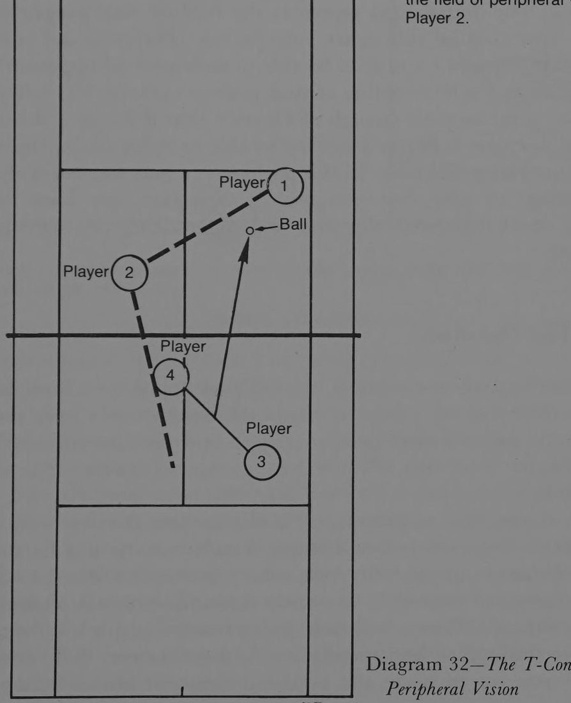
vị trí lưới của người đó (Điểm B)—ở giữa vạch giao bóng giữa sân và vạch biên đánh đôi, và cách lưới một bước chân cộng một tầm với của vợt—và có thể bước một bước cộng một tầm với của vợt theo một góc 45 độ dọc theo Đường N₁ để bao quát Bóng 1, dọc theo Đường N₂ để bao quát Bóng 2, và dọc theo Đường N₃ để bao quát Bóng 3. Cả bạn và người đồng đội của bạn đều di chuyển tới và lui dọc theo đường từ những vị trí cố định của mình (Điểm A và B) về phía quả bóng, khép các góc lại. Những vị trí này cũng cho phép bạn và người đồng đội của bạn di chuyển một bước cộng một tầm với của vợt theo chiều ngang để đón những cú đánh vào hành lang biên và những cú đánh dọc giữa sân (nếu bạn và người đồng đội của bạn thực hiện một bước cộng một tầm với của vợt về phía giữa sân,
or her net position (Point B)—halfway between the center service line and the doubles line, and one step and a racquet reach from the net—and can make one step and a racquet reach at a 45-degree angle along Line Nj to cover Ball 1, along Line Ne to cover Ball 2, and along Line Ng to cover Ball 3. Both you and your partner move in and out along the line from your fixed positions (Points A and B) to the ball, closing angles. These positions also allow you and your partner to move one step and a racquet reach laterally to intercept alley shots and shots down the middle (if you and your partner take one step and a racquet reach to the middle of the
Hình 32: Nguyên Lý Chữ T và
sân, các cây vợt của các bạn sẽ chạm nhau); bạn nắm quyền không chế hoàn toàn chiều rộng của sân. Một cách khác để phân tích vị trí lưới là nguyên lý chữ T. Xem
court, your racquets will touch); you have complete command of court. ae the width of the of analyzing net position is the T-concept. See Another way —— 3) defend the
Hình 32. Bạn (Người chơi 4) và người đồng đội của bạn (Người chơi
lưới bằng cách tạo thành một bức tường phòng ngự (Người chơi 4—Người chơi 3) theo một góc vuông với đường bay của quả bóng. Chúng ta có thể ví bạn và người đồng đội của bạn như một bức tường, vì bất kỳ ai trong hai bạn cũng có thể bước một bước cộng một tầm với của vợt về phía giữa sân để chặn bất kỳ quả bóng nào đi vào khoảng giữa hai người. Bức tường và đường bay của quả bóng xuyên qua khoảng giữa tạo thành một chữ T.
net by forming a defensive wall (Player 4—Player 3) at a right angle to the flight of the ball. We can liken you and your partner because either one of you can make one step and a to a wall, racquet reach to the middle and intercept any ball that comes between you. The wall and the flight of the ball through the middle form a T.
Hãy đặt mình vào vị trí sao cho tất cả người chơi đều nằm trong tầm nhìn ngoại vi của bạn.
Position yourself so that all players are within your peripheral
Hình 32, giờ hãy đặt mình vào vị trí của
Diagram 32, put yourself now in the position of
Người chơi 2. Những đường chấm chấm biểu thị vùng tầm nhìn ngoại vi của bạn. Bạn phải có khả năng nhìn thấy người đồng đội của mình (Người chơi 1) và các đối thủ (Người chơi 3 và 4) để có thể phán đoán trước việc một đối thủ (Người chơi 3 hoặc 4) chặn cú vô-lê của người đồng đội bạn (Người chơi 1).
Player 2. The dotted lines represent the field of your peripheral vision. You must be able to see your partner (Player 1) and your opponents (Players 3 and 4) to be able to anticipate an opponent’s (Player 3’s or 4’s) interception of your partner’s (Player 1’s) volley.
Bạn cũng phải đứng xa Người chơi 4 đủ rộng để nếu Người chơi 1 đánh bóng thẳng vào Người chơi 4, thì Người chơi 4 sẽ không thể đánh vô-lê trả bóng vào hành lang biên của bạn (Người chơi 2). Ở vị trí này bạn có thể cảm thấy mình đứng ngoài dòng chảy chính của trận đấu, nhưng bạn phải tập trung rất mạnh vào việc giữ nhịp với diễn biến và duy trì tầm nhìn đầy đủ về mọi người.
You also must be wide enough of Player 4 that if Player 1 drives the ball at Player 4, Player 4 will not be able to volley the ball back into your (Player 2’s) alley. In this position you may feel out of the mainstream of play, but you must concentrate very hard on keeping in rhythm with the play and maintaining full sight of everyone.
Cú Đập Bóng Trên Cao (Smash)The Overhead
Nhiều khi bạn đang ở lưới và đối thủ của bạn ở phía sau, người đó sẽ cố lốp bóng qua đầu bạn và qua đó tìm cách đẩy bạn lùi khỏi vị thế tấn công và giành cơ hội áp sát lưới. Vũ khí tấn công tốt nhất của bạn chống lại một cú lốp như vậy là một cú đập bóng trên cao (smash).
Many times when you are at net and your opponent is back, he or she will try to lob over your head and thereby try to push you back from your offensive position and to gain the opportunity to close the net. Your best offensive weapon against such a lob is an overhead.
Một trong những cân nhắc đầu tiên của bạn trước khi thực hiện cú đập bóng trên cao là có nên để bóng nảy hay không. Bạn xác định điều này dựa trên góc rơi xuống của quả bóng. Theo nguyên tắc chung, bạn nên để cú lốp có góc rơi xuống hơn 45° nảy trước khi bạn đánh nó bằng một cú đập bóng trên cao. Khi một quả bóng rơi xuống dốc như vậy, nó đang di chuyển theo chiều dọc nhanh hơn theo chiều ngang, và do đó rất khó canh thời điểm nếu bạn cố thực hiện cú đập bóng trên cao trước khi bóng nảy. Ngoài ra,
One of your first considerations before making the overhead is whether to allow the ball to bounce. You determine this by the angle of descent of the ball. As a rule, you should allow the lob with a descent of more than 45 degrees to bounce before you take it as an overhead. When a ball is dropping that steeply, it is moving faster vertically than horizontally, and is therefore very difficult to time if you try to make the overhead before it bounces. Also,
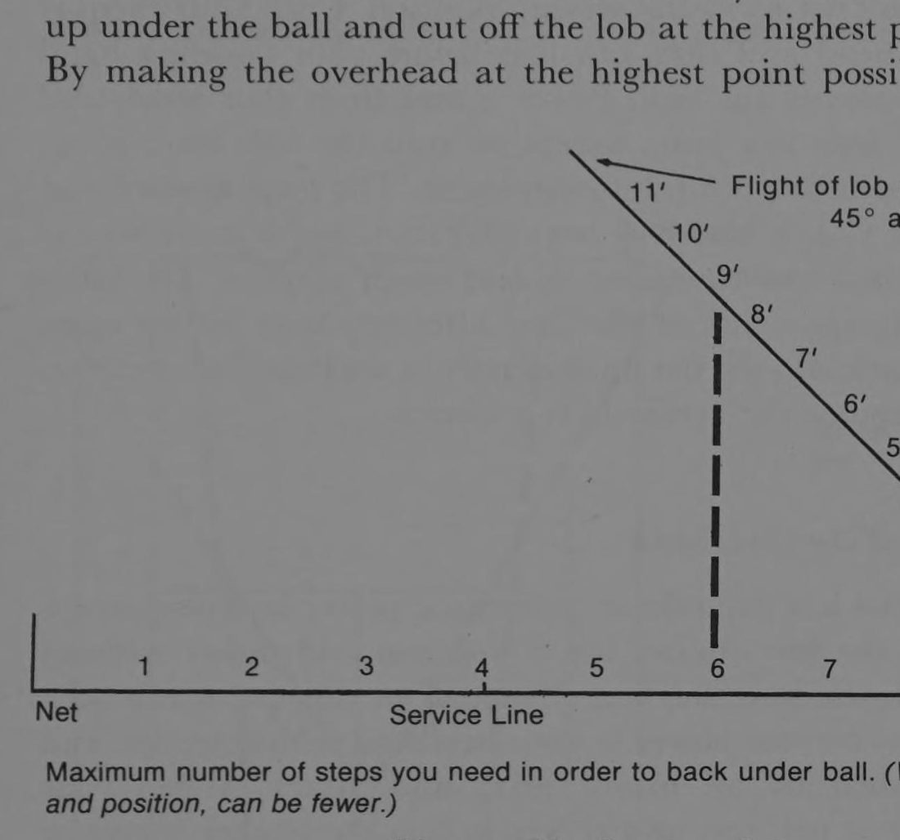
vì một quả bóng, không cần xét đến độ xoáy, sẽ nảy lên đến 50 phần trăm chiều cao của cú lốp, bạn có thể yên tâm rằng mình vẫn có thể đánh một cú lốp vượt quá tầm với của người đứng lưới của bạn thành một cú đập bóng trên cao sau khi bóng nảy.
because a ball, without any consideration of spin, bounces to 50 percent of the height of the lob, you can feel confident that you can still take a lob that is beyond the reach of your netman as an overhead after it bounces.
Khi đón một cú lốp rơi xuống theo góc 45° hoặc nhỏ hơn, bạn
When covering a lob dropping at a 45-degree angle or less, you
Hình 33: Đón Một Cú Lốp Bóng
càng giữ được gần lưới bao nhiêu, góc đánh cú đập bóng trên cao của bạn càng tốt bấy nhiêu và bạn càng nhanh chóng áp sát lưới sau cú đập bóng trên cao bấy nhiêu. Ngoài ra, bằng cách rút ngắn thời gian bay của cú lốp, bạn cho đối thủ của mình ít thời gian hơn để chuẩn bị cho cú đập bóng trên cao.
to the net, the better the angle on your overhead and the faster you can close the net after the overhead. Also, by cutting down the flight time of the lob, you give your opponent less time to prepare overhead.
Thực ra, bạn chỉ cần lùi lại nhiều nhất là bốn hoặc năm bước từ lưới để đón một cú lốp có góc 45° hoặc nhỏ hơn. Một cú lốp đòi hỏi nhiều hơn số bước đó rất có thể sẽ bay ra ngoài. Như bạn có thể thấy qua đường vuông góc vẽ từ mốc bước 6 trong
for the Actually, you need take only four or five steps at the most back from the net to cover a lob with a 45-degree angle or less. A lob requiring more than that number of steps would probably go out anyway. As you can see by the perpendicular line from the step-6
Hình 33, ngay cả một phụ nữ có chiều cao trung bình (năm feet ba inch rưỡi) với cánh tay và vợt duỗi ra (thêm một feet nữa) cũng có thể với tới một cú lốp có góc rơi xuống 45° ở cách vạch giao bóng một hoặc hai bước về phía sau.
Diagram 33, even a woman of average height (five and three one-half feet) with her arm and racquet extended (another feet) could reach a lob with a 45-degree angle of descent a step or two behind the service line.
fhe
Trong mọi lối chơi ở lưới, bàn tay (cây vợt) của bạn luôn vươn về phía quả bóng. Cú đập bóng trên cao cũng không khác gì. Bằng cách duỗi bàn tay trái ra phía trước ở khoảng góc 45°, bạn có được khả năng nhận biết chiều sâu, để căn chỉnh thân người mình với đường bay của quả bóng, và xoay thân người sang một bên so với lưới như ở tư thế giao bóng. Hãy đưa vợt ra sau đầu và bật cổ tay ra ngay trước khi bàn tay chỉ điểm của bạn, theo lý thuyết, bắt lấy quả bóng. Lực đến từ cổ tay bạn, và bạn không cần phải nhảy lên hay bật lên trừ khi để giữ cho bóng không vượt qua bạn hoặc để đánh bóng phía sau một đối thủ. Cú đập bóng trên cao kèm nhảy lên như của Rosie Casals là một cú đánh đẹp mắt, nhưng nó đòi hỏi khả năng thăng bằng và phối hợp đặc biệt và rất nhiều luyện tập. Cú đập bóng trên cao cơ bản có lẽ cũng hiệu quả không kém. Sau khi bạn đã đánh cú đập bóng trên cao, hãy lập tức quay lại vị trí ở lưới để phán đoán trước cú trả bóng. Đừng bao giờ cho rằng cú đập bóng trên cao là một cú thắng điểm.
In all net play your hand (racquet) always is reaching for the ball. The overhead is no different. By extending your left hand in front of you at about a 45-degree angle, you gain depth perception, to the flight of the ball, and turn your body align your body sideways to the net as in the serving position. Cock your racquet behind your head and snap out just before your pointing hand theoretically catches the ball. Power comes from your wrist, and you need not leap nor jump except to keep the ball from going beyond you or to hit behind an opponent. The leaping overhead such as Rosie Casals has, is a beautiful shot, but it requires ex- ceptional balance and coordination and much practice. The basic overhead probably is just as effective. After you have hit the over- head, move back into the net immediately in anticipation of the re- turn. Never assume the overhead is a winner.
Thế Tấn Công Của Cú Đập Bóng Trên CaoThe Offense of the Overhead
Cú đập bóng trên cao có hai tiềm năng tấn công: lực và vị trí đặt bóng.
The overhead has two offense potentials: power and placement.
Vị trí đặt bóng là lựa chọn đầu tiên, nhưng nếu bạn có thể thêm lực mà không mất kiểm soát, bạn có cơ hội tốt nhất cho một cú đập bóng trên cao hiệu quả.
Placement is the first choice, but if you can add power without losing control, you have the best chance of an effective overhead.
Lực. Nếu bạn có thể dùng lực trong cú đập bóng trên cao của mình kèm với hướng và sự đều đặn, thì bằng mọi giá hãy đánh mạnh và tấn công. Khi đối thủ của bạn ở lưới, hãy dùng lực của bạn để ép sát (jam) người chơi yếu hơn hoặc đánh lên giữa sân. Khi đối thủ của bạn bị tách ra—một người ở trên, một người ở dưới—hãy đánh lực của bạn vào người đứng lưới, cố đánh một góc xác suất cao, hoặc dùng ba phần tư tốc độ về phía người ở phía sau. Nếu bạn đánh bóng sâu, hãy chắc chắn rằng lựa chọn dùng lực của bạn sẽ làm yếu đi phản hồi của đối thủ chứ không chỉ đơn thuần hạn chế thời gian bạn có để áp sát lưới. Khi còn do dự, hãy đánh một cú đập bóng trên cao xoáy xoắn ở ba phần tư tốc độ, sâu. Khi bạn đánh cú này từ ngoài sân hoặc cả bạn và người đồng đội đều ở phía sau, hãy luôn dùng ba phần tư tốc độ để có đủ thời gian vào vị trí tốt hoặc áp sát lưới.
Power. If you can use power in your overhead with direction and consistency, then by all means drive and attack. When your opponents are at net, use your power to jam the weaker player or hit up the middle. When your opponents are split—one up, one back—play your power at the netman, try for a high percentage angle, or use three-quarter speed to the deep man. If you do play the ball deep, make sure that your choice for power will weaken your opponent’s response rather than just limit the time you have to close the net. When in doubt, play a three-quarter-speed twist overhead deep. When you make the play from out of court or both you and your partner are back, always use three-quarter speed to allow yourself enough time to get in good position or close the net.
Vị trí đặt bóng. Việc đặt bóng trong cú đập bóng trên cao đặt ra ba cân nhắc: độ sâu, góc và sơ hở. Bạn xác định độ sâu của vị trí đặt bóng dựa trên việc bạn đang ở đâu và đối thủ của bạn đang ở đâu khi bạn thực hiện cú đập bóng trên cao. Ví dụ, khi bạn và đối thủ của bạn đều ở lưới, chỉ cần đủ độ sâu để ép sát một đối thủ hoặc buộc người đó
Placement. Placement of the overhead presents three considera- tions: depth, angle, and opening. You determine depth of place- ment by where you are and where your opponents are when you make the overhead. For example, when you and your opponents are at net, enough depth to jam an opponent or make him or her
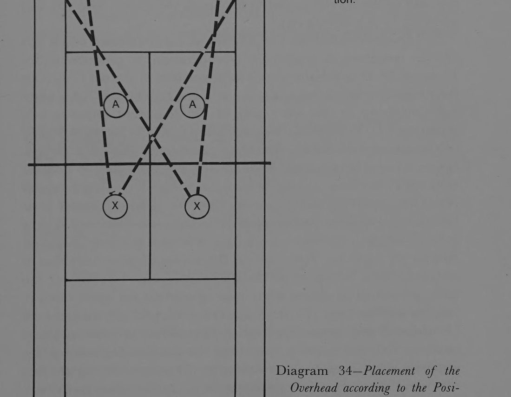
phải đánh bóng lên là đủ. Khi chỉ có một trong hai đối thủ của bạn ở lưới, hãy đánh một cú góc sâu vào khoảng giữa hai người để họ không có cơ hội chui xuống dưới điểm nảy của bóng hay chạy đuổi theo một cú đập bóng trên cao nông. Khi cả hai đối thủ của bạn đều ở phía sau, thì lực hoặc góc phải đi kèm với độ sâu để đảm bảo một phản hồi yếu. Khi bạn và người đồng đội ở phía sau hoặc bạn ở ngoài sân, hãy cố đánh sâu hơn để có thêm thời gian giành một vị thế tấn công hơn.
hit up is sufficient. When only one of your opponents is at net, drive a deep angle between them so that they do not have the opportunity to get under the bounce or to run down a shallow overhead. When your opponents are both back, then power or angle must accompany the depth to ensure a weak response. When you and your partner are back or you are out of court, try for more depth to allow you more time to gain a more offensive position.
Đập trên cao 1 Đập trên cao 2
Overhead Overhead
Ghi chú: AA, đối phương tấn công.
erhead 1 (8) ) Ae ; Overhead 2 Note: AA, offensive opposition.
BB, đối phương phòng ngự.
BB, defensive opposition.
AB hoặc BA, đối phương bị tách
AB or BA, split opposition.
Hình 34: Vị Trí Đặt Bóng Của Cú Đập Trên Cao Tùy Theo Vị Trí Của Đối Phương 81
Có một hướng dẫn đơn giản để xác định góc của cú đập bóng trên cao khả dụng: bạn càng gần lưới bao nhiêu thì càng có nhiều góc dành cho bạn bấy nhiêu. Cũng hãy nhớ rằng góc của cú đập bóng trên cao có hai chiều: chiều ngang và chiều dọc. Khi góc của cú đập bóng trên cao quá rộng để đối thủ của bạn có thể với tới, thì bạn đã sử dụng có lợi mặt phẳng chiều ngang của góc đánh cú đập bóng trên cao. Bạn sử dụng có lợi chiều dọc của góc đánh cú đập bóng trên cao khi bạn đánh bóng xuống mặt sân và bóng nảy lên đủ cao để vượt qua đầu và vượt khỏi tầm với của các đối thủ của bạn. Cách sau là một chiến thuật tốt khi các đối thủ của bạn đang ở thế phòng ngự tại vạch cuối sân, hoặc khi mặt sân chậm đến mức một đối thủ có thể chạy đuổi kịp ngay cả một cú đánh ngang tốt.
simple guideline for determining the angle of the There is a available overhead: the closer you are to the net, the more angle is to you. Remember also that the angle of the overhead has two dimensions: horizontal and vertical. When the angle of the is too wide for your opponent to reach, then you have overhead your used the horizontal plane of the angle of the overhead to advantage. You use the vertical dimension of the angle of the overhead to your advantage when you drive the ball into the ground and it bounces high enough to be over the heads and The latter is a good tactic beyond the reach of your opponents.
Mỗi khi có một sơ hở, hãy khai thác nó. Bạn sẽ tự động giảm bớt cơ hội của đội đang bị lốp bóng trong việc trả lại cú đập bóng trên cao.
when your opponents are in a defensive position at the baseline or the court is so slow that an opponent can run down even a good horizontal angle.
Tuy nhiên, nếu không có sơ hở nào, hãy đánh bóng vào chân một đối thủ. Người đó sẽ buộc phải đánh bóng lên trong cú trả bóng, và bạn sẽ không phải liều đánh bóng ra ngoài.
Whenever there is an opening, use it. You will automatically reduce the lobbing team’s chances of getting the overhead back.
Như tôi đã đề cập trước đó, vị trí của đối phương khi bạn đánh cú đập bóng trên cao là một cân nhắc chính trong việc đặt bóng. Xem
However, if there are no openings, drive the ball at an opponent’s feet. He or she will be forced to hit up on the return, and you will not have to risk hitting out.
Hình 34. Nếu họ có một vị thế tấn công ở lưới (các Vị trí
AA) và bạn cùng người đồng đội cũng ở lưới (các Vị trí XX), hãy đặt cú đập bóng trên cao của bạn về phía hành lang biên của đối thủ đối diện với bạn (Đập trên cao 1). Bạn đạt được hai lợi thế nhờ cách đặt bóng này: chỉ một đối thủ có cơ hội lấy lại bóng, và vì đối thủ đó ở rất gần bạn, người đó sẽ không có thời gian chuẩn bị để trả bóng. Đập trên cao 2 là lựa chọn thứ hai nếu cả hai đối thủ đều ở lưới (các Vị trí AA), nhưng bạn phải đánh cú đập bóng trên cao ra phía sau đối thủ chéo sân của mình để đảm bảo hiệu quả của nó. Đập trên cao 2 là cách đặt bóng tốt hơn khi đối mặt với một đội đang ở thế phòng ngự (các Vị trí BB) ở vạch cuối sân. Góc của cú đập bóng trên cao rộng đến mức nó sẽ hoặc là một cú thắng điểm hoặc tạo ra một cú trả bóng yếu. Bạn có thể dùng những hướng dẫn tương tự như trên khi đối thủ của bạn bị tách ra—một người ở trên, một người ở dưới (các Vị trí AB hoặc BA). Việc chọn Đập trên cao 1 hay Đập trên cao 2 sẽ phụ thuộc vào việc bạn đang ở vị trí X nào (sân bên phải hay sân bên trái) khi bạn đánh cú đó và vào việc người nào của đội đối phương đang ở lưới. Ví dụ, nếu bạn đang chơi ở sân bên trái và đối thủ đối diện với bạn đang ở lưới (Vị trí A) còn người đồng đội của người đó ở vạch cuối sân (Vị trí B), thì bạn sẽ đánh đội của người đó ở vạch cuối sân (Vị trí B), thì bạn sẽ đánh
Diagram 34. If they have an offensive position at the net (Positions AA) and you and your partner are at the net (Positions XX), place your overhead to the alley side of the opponent opposite you (Overhead 1). You achieve two advantages by this placement: only one opponent will have a chance to get it back, and because that opponent is so near to you, he or she will not have time to prepare to return. Overhead 2 is a second option if both opponents are at net (Positions AA), but you must play the overhead behind your crosscourt opponent to ensure’ its effectiveness. Overhead 2 is a better placement against a team in a defensive position (Positions BB) at the baseline. The angle of the overhead is. so wide that it either will be a winner or produce a weak return. You can use the same guidelines as above when your opponents are split—one up, one back (Positions AB or BA). The choice of Overhead 1 or Overhead 2 will depend on which X-position you are in (right court or left court) when you take the shot and which of the opposing team is at net. For example, if you are playing the left court and the opponent opposite you is at the net (Position A) and his or ner partner at the baseline (Position B), then you would play
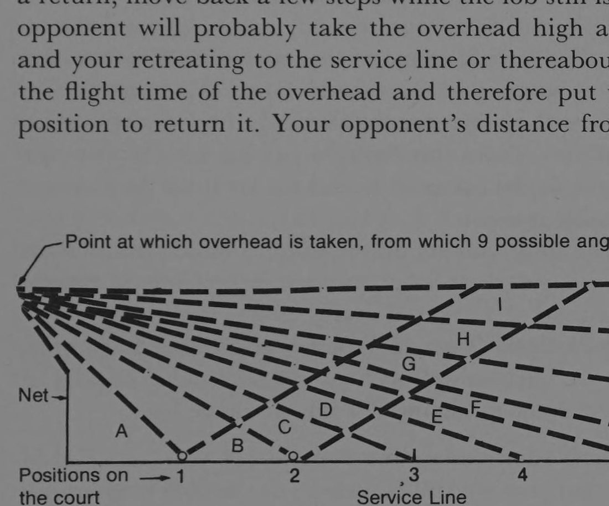
một trong hai cú đập bóng trên cao. Nếu bạn đang chơi ở sân bên trái và đối thủ đối diện với bạn ở vạch cuối sân (Vị trí B) còn người đồng đội của người đó ở lưới (Vị trí A), thì bạn sẽ đánh Đập trên cao 2.
either overhead. If you are playing the left court and the opponent opposite you is at the baseline (Position B) and his or her partner at the net (Position A), then you would play Overhead 2.
Đón Cú Đập Bóng Trên CaoCovering the Overhead
Bạn đón một cú đập bóng trên cao gần giống như cách đón bất kỳ cú vô-lê nào mà đối thủ của bạn thực hiện từ phía trên lưới. Tuy nhiên, vì lực và góc theo chiều dọc của một cú đập bóng trên cao, bạn không thể đứng quá gần lưới. Nếu bạn đứng quá gần, bạn sẽ có rất ít thời gian phản ứng và phản xạ trả bóng, quả bóng có thể đi qua bất kỳ phần nào trên cơ thể bạn mà vẫn hợp lệ, và bạn có thể bị thương.
You cover an overhead much the same way as any volley that your opponent makes from above the net. However, because of the power and vertical angle of an overhead, you cannot stand in too close to the net. If you do, you will have very little time to react and reflex the shot back, the ball can pass any part of your body and still be good, and you might get hurt.
Lùi Lại Để Đón Cú Đập Bóng Trên Cao. Bạn thường nên lùi lại để đón một cú đập bóng trên cao. Nếu bạn đã lốp bóng và đang chờ một cú đập bóng trên cao thì
Move Back for the Overhead. You usually should move back to cover an overhead. If you have lobbed and are expecting an overhead as
Hình 35: Khoảng Cách Với Lưới Khi Đón Một Cú Đập Trên Cao
độ cao của quả bóng khi người đó đánh cú đập bóng trên cao sẽ cho bạn một số manh mối về tốc độ và vị trí đặt bóng khả dĩ của bóng.
the height of the ball when he or she hits the overhead should give you some clues as to the ball’s possible speed and placement.
Để có một số hướng dẫn về việc cần lùi lại bao nhiêu để đón một
For some guidelines as to how much to move back to cover an
Hình 35. Từ Vị trí 1 (gần lưới nhất), bạn
cú đập bóng trên cao, phải bao quát một khoảng theo chiều dọc cao năm feet để đón những cú đập bóng trên cao sẽ ở lại trong sân (Các cú đập trên cao A-F). Vì thời gian bay của 83 - những cú đập bóng trên cao sẽ ngắn, bạn có ít thời gian phản ứng với chúng, và bạn thậm chí có thể phán đoán sai và đánh vào những cú đập bóng trên cao bay ra ngoài (G1).
must cover a vertical range of five feet to cover the will stay in (Overheads A-F). Because the flight time of the 83 - overheads will be short, you have little time to react to them, and you might even misjudge and hit at out-overheads (GI).
Ở Vị trí 2, bạn phải bao quát một khoảng theo chiều dọc cao bốn feet để có thể trả lại những cú đập bóng trên cao bay vào sân. Điểm nảy của Đập trên cao A sẽ nằm trong khoảng đó. Một lần nữa, bạn sẽ có rất ít thời gian phản ứng và có thể phán đoán sai và đánh những cú đập bóng trên cao bay ra ngoài.
At Position 2, you must cover a vertical range of four feet to be able to return the in-overheads. The bounce of Overhead A will be within that range. Again, you will have very little time to react and may misjudge and play the out-overheads.
Ở Vị trí 3, khoảng theo chiều dọc của những cú đập bóng trên cao bay vào sân là ba feet.
At Position 3, the vertical range of the in-overheads is three feet.
Những quả bóng đều nằm trong khoảng đó. Điểm nảy của các Đập trên cao A và B nằm trong khoảng đó. Bạn có một số lợi thế ở Vị trí 3: 1. Bạn có một diện tích giới hạn để bao quát.
are within that range. You The bounces of Overheads A and B have several advantages at Position 3: 1. You have a limited area to cover.
2. Bạn có đủ thời gian cả để phản ứng lẫn để nắm thế tấn công bằng cách trả bóng đủ nhanh để bắt đối thủ của mình mất vị trí.
2. You have enough time both to react and to take the offense by returning quickly enough to catch your opponents out of position.
3. Bạn có thể đánh bóng đủ cao để không phải đánh bóng lên.
3. You can take the shot high enough not to have to hit up.
4. Bạn có thể áp sát lưới trở lại chỉ với vài bước.
4. You can close the net again with just a few steps.
Ở Vị trí 4, khoảng theo chiều dọc của những cú đập bóng trên cao bay vào sân là hai feet rưỡi. Điểm nảy của các Đập trên cao A và B không nằm trong khoảng đó; thực tế, chúng làm khoảng theo chiều dọc tăng lên hơn hai feet rưỡi. Từ vị trí này, bạn ở quá xa lưới để có thể áp sát lưới nhanh chóng và quá xa vạch cuối sân để có thể chọn một thế phòng ngự.
At Position 4, the vertical range of the in-overheads is two and — one-half feet. The bounces of Overheads A and B are not within that range; in fact, they increase the vertical range to more than two and one-half feet. From this position you are too far from the net to be able to close the net quickly and too far from the baseline ——e to adopt a defensive position.
Ở các Vị trí 5 và 6, bạn phải có khả năng xử lý hầu hết các cú đánh vì bạn có nhiều thời gian nhất, nhưng vị trí của bạn hoàn toàn mang tính phòng ngự.
At Positions 5 and 6, you should be able to handle most shots because you have the most time, but your position is strictly defensive.
Cách Lùi Lại Để Đón Cú Đập Bóng Trên Cao. Để đón một cú đập bóng trên cao, bạn phải biết cách lùi lại cũng như cần lùi lại bao nhiêu. Sau đây là một số hướng dẫn về cách lùi lại:
How to Move Back for the Overhead. Yo cover an overhead you must know how to move back as well as how much to move back. The following provides some guidelines for how to move back: Back up along your closing line even though you have moved from the net so that you are still covering your area of responsibil-
Hình 31 ở trang 76.) Hãy lùi lại đủ để quả bóng sẽ đi qua phần dưới cơ thể bạn hoặc nảy xuống phía trước bạn.
Diagram 31 on page 76.) Move back enough that the ball will pass the lower part of your body or bounce in front of you.
Khoảng này làm giảm diện tích bạn phải bao quát và cho bạn một cơ hội đưa vợt vào bóng.
This range reduces the area you must cover and gives you a chance to get your racquet on the ball.
Sau khi lùi lại, hãy lấy thăng bằng và chuẩn bị trước khi đối thủ của bạn đánh cú đập bóng trên cao. Đừng nhảy hay bật người lên vào lúc này.
After moving back, get your balance and prepare before your opponent hits the overhead. Do not jump or bounce at this time.
Hãy giữ chân bạn tiếp xúc với mặt sân để bạn có thể di chuyển tức thì.
Keep your feet in contact with the ground so that you can move instantaneously.
Hãy bao quát các vùng lực. Ví dụ, nếu đối thủ của bạn đi vào bằng một cú thuận tay, người đó sẽ có nhiều lực hơn từ việc đánh chéo sân so với đánh thẳng phía trước. Cũng hãy bao quát cú đánh xác suất cao, buộc đối thủ của bạn phải chọn lựa chọn thứ hai, vốn là một cú đánh có xác suất thấp hơn.
Cover the power zones. For example, if your opponent comes in with a forehand shot, he will get more power from hitting crosscourt than from hitting straight ahead. Also cover the high percentage shot, forcing your opponent to go for a second choice that is a lower-percentage shot.
Chặn Cú Đập Bóng Trên Cao. Có những lúc tốt hơn là chặn cú đập bóng trên cao thay vì lùi lại để đón nó. Quả bóng càng gần mức ngang lưới khi đối thủ của bạn đánh cú đập bóng trên cao bao nhiêu, thì góc theo chiều dọc khả dĩ càng nhỏ bấy nhiêu và người đó càng ít có thể dùng lực mà không có nguy cơ đánh bóng ra ngoài bấy nhiêu. Nếu đối thủ của bạn cố đánh mạnh quả bóng, người đó có thể sẽ mất thăng bằng và quá dấn thân vào động tác kết thúc, đặc biệt nếu người đó dùng xoáy lên.
Blocking the Overhead. There are times when it is better to block the overhead than to move back for it. The closer the ball is to the net level when your opponent hits the overhead, the less the vertical angle possible and the less power he or she can use without the risk of hitting the ball out. If your opponent tries to drive the ball, he or she may end up off balance and overcommitted on the followthrough, especially if he or she uses topspin.
Trong tình huống này, hãy đứng càng gần càng tốt, nhìn thấy bóng rời vợt đối thủ, đón cú đánh mạnh ở phía trên lưới, và như một bức tường, dội nó trở lại trước khi đối thủ của bạn kịp lấy lại thăng bằng và hồi phục sau động tác kết thúc. Để chuẩn bị dội bóng hoặc chặn bóng, hãy giữ vai hướng về phía trước để giữ hai cánh tay ở phía trước và để chúng có thêm sức giữ vợt chắc chắn trước tác động của cú đánh mạnh. Hãy giữ hai cánh tay vươn hẳn ra phía trước để chúng không bị thân người cản trở, vươn hai bàn tay ra, khuỵu gối xuống, và đứng thăng bằng trên phần trước bàn chân. Hãy mở cổ tay ra và khóa nó ở một vị trí để chịu được tác động của cú đánh mạnh. Quan trọng nhất, hãy chặn bóng bằng mặt vợt. Ngay cả khi đối thủ của bạn trả lại được quả bóng dội ra, tư thế hay thế đứng của bạn khi chặn bóng vẫn hoàn hảo để xử lý cú đánh tiếp theo một cách dễ dàng và có cơ hội rất tốt để kiểm soát và thắng điểm.
In this situation, stand in as close as possible, see the ball of your opponent’s racquet, meet the drive above the net, and like a wall, rebound it back before your opponent can regain balance and recover from his or her followthrough. To prepare for rebounding or blocking the ball, keep your shoulders forward to keep your arms in front and to lend them strength in holding your racquet firmly against the impact of the drive. Keep your arms well out in front so that they are free of interference from your body, reach out your hands, bend your knees, and stand balanced on the balls of your feet. Open your wrist and lock it in position to withstand the impact of the hard shot. Most important, block the ball with the racquet face. Even if your opponent returns the rebound, your position or stance for the block is perfect to handle the next shot easily and to gain a very good chance of controlling and winning the point.
Chiến Thuật Ở LướiNet Tactics
Chúng ta đã thảo luận về những cú đánh lưới cơ bản—vô-lê, đập bóng trên cao, và đón cú đập bóng trên cao. Giờ chúng ta hãy điểm qua một số chiến thuật lưới cơ bản.
We have discussed the basic net shots—volley, overhead, and covering the overhead. Now let us touch upon some of the basic net tactics.
Việc Cướp Bóng (Poach)The Poach
Cướp bóng—băng ngang qua phía trước người đồng đội của bạn ở lưới và đón lấy cú đánh của người đó—có lẽ là chiến thuật lưới ấn tượng nhất. Tuy nhiên, nó thường tạo ra nhiều vấn đề cho đội của bạn hơn là cho đối thủ, và một số vấn đề đó không liên quan gì đến thành công hay thất bại của chính chiến thuật này.
Poaching—crossing in front of your partner at the net and taking his shot—is perhaps the most dramatic net tactic. However, it often creates more problems for your team than for your opponents, and some of the problems have nothing to do with the success or failure of the tactic itself.
Có những thời điểm rõ ràng để cướp bóng, và cả bạn lẫn người đồng đội đều phải sẵn sàng xử lý phản hồi. Bạn chỉ cướp bóng nếu bạn có thể đánh một cú tốt hơn người đồng đội của mình để có lợi cho vị thế chung của đội: để khai thác một tình huống thuận lợi (khi đối thủ của bạn buộc phải đánh một cú phòng ngự, yếu ớt, hoặc dễ đoán); để giảm áp lực cho người đồng đội; để chặn một góc; hoặc để hạn chế thời gian đội kia vào được vị trí cho một tình huống thuận lợi.
There are definite times to poach, and both you and your partner must be ready to handle the response. You poach only if you can make a better shot than your partner to benefit the overall position of the team: to take advantage of a setup (when your opponent has been forced to make a defensive, weak, or obvious shot); to reduce pressure on your partner; to cut off an angle; or to limit the time for the other team to get in position for a setup.
Một khi bạn đã cướp bóng, bạn phải tiếp tục băng ngang, và người đồng đội của bạn phải đi phía sau bạn và bao quát khu vực đã bỏ trống. Bạn không thể dừng lại và quay về vị trí ban đầu. Để thảo luận thêm về việc cướp bóng, xem trang 100-103.
Once you poach, you must continue to cross, and your partner must go behind you and cover the vacated area. You cannot stop and return to your original position. For more discussion of poaching see pages 100-103.
Cú Vô-Lê Lốp BóngThe Lob Volley
Cú vô-lê lốp bóng cũng có thể là một chiến thuật hiệu quả ở lưới, nhưng nó không chỉ bấp bênh và khó thực hiện, mà còn có thể biến bạn thành một mục tiêu. Bạn phải cẩn thận về cách đánh nó cũng như về thời điểm bạn chơi nó.
The lob volley also can be an effective tactic at the net, but it not only is precarious and difficult to execute, but also can turn you into a target. You must be careful how you hit it as well as when you play it.
Đừng bao giờ chơi cú vô-lê lốp bóng từ vị trí phía trên lưới; bạn sẽ phải đánh đổi một cú tấn công lấy một cú phòng ngự. Ngoài ra, hãy chơi nó khi không còn lựa chọn nào khác. Ví dụ, nếu bạn đang cố hết sức với tới một cú bóng thấp và đối thủ của bạn đã áp sát lưới, hy vọng duy nhất của bạn là đánh bóng qua đầu họ. Hoặc nếu một góc bóng kéo một người đứng lưới ra thật rộng và người đó trả bóng thấp rồi lao lên áp sát lưới trở lại, thì một cú lốp là hoàn hảo để khai thác chuyển động lao tới quá dấn thân của người đó. Một cú lốp cũng có thể khai thác gió, mặt trời, sự thiếu tự tin, phản ứng chậm, hoặc một đối thủ đã mất tinh thần.
Never play the lob volley from above the net; you will be sacrificing an offensive shot for a defensive one. Also, play it when there is no alternative. For example, if you are making a desperate effort to reach a low shot and your opponents have closed the net, your only hope is to go over them. Or if an angle pulls a netman wide and he or she returns low and races to close the net again, then a lob is perfect to take advantage of his or her overcommitted forward movement. A lob also can take advantage of wind, sun, lack of confidence, slow reaction, or a disheartened opponent.
Một lời cuối về cú vô-lê lốp bóng: hãy luôn chơi nó sao cho đối phương buộc phải lùi lại, chứ không phải đứng yên hay tiến lên.
One final word about the lob volley: always play it so that the Opposition must move back, not stand still or move forward.
Đánh Vào Người Hoặc Ép Sát Đối ThủHitting or Jamming an Opponent
Đánh vào người hoặc ép sát (jam) một đối thủ khi bạn đang ở lưới là một chiến thuật hiệu quả. Khi bóng ở dưới mức ngang lưới, hãy đánh bóng theo một góc vào một sơ hở hoặc vào thân người của một người đứng lưới bên đối phương, cụ thể là vào hông bên thuận tay của người đó (một cú khó trả lại). Bạn đánh vào đối thủ không phải với ý định làm người đó bị thương mà là để khiến đối thủ đó phải lùi lại một bước và qua đó tạo ra một sơ hở cho một góc đánh tốt hơn. Hoặc ngược lại, bạn có thể ép sát một đối thủ sau khi bạn đã đánh một góc hiệu quả khiến người đó mất thăng bằng.
Hitting or jamming an opponent when you are at net is an effective tactic. When the ball is below the net, angle the ball to an opening or to the body of an opposing netman, specifically to his or her forehand hip (a difficult shot to get back). You hit at your opponent not with the intention of hurting him or her but of making that opponent step back and thereby creating an opening for a better angle. Or, inversely, you may jam an opponent after you have hit an effective angle that has put him or her off balance.
Nếu Còn Do Dự, Hãy Đánh Vào Giữa SânIf in Doubt, Play the Middle
Mỗi khi bạn đang ở lưới và có bất kỳ thắc mắc nào về việc nên đánh bóng đi đâu, hãy đánh bóng thấp vào giữa sân. Một cú đánh xuống giữa sân luôn có nhiều khoảng sân trống, khiến đối phương bối rối không biết ai nên đón cú đó, và hạn chế các góc trả bóng, qua đó tạo ra những cú trả bóng dễ bao quát.
Whenever you are at the net and there is any question as to where you should play the ball, play it low to the middle. A shot down the middle always has plenty of court available to it, confuses the opposition as to who should take the shot, and limits the angles of return, thereby producing returns that are easy to cover.
Hãy Đón Bóng Ở Vị Trí Cao Nhất Có ThểTake the Shot as High as Possible
Một nguyên tắc chung khi chơi ở lưới là đón bóng ở vị trí cao nhất có thể. Đôi khi đối thủ của bạn sẽ đánh một cú bóng bỏ nhỏ—bóng rơi qua lưới và vẫn ở dưới mức ngang lưới ngay cả sau khi nảy—và phản hồi của bạn có thể là một cú bóng bỏ nhỏ khác. Tuy nhiên, đừng phạm sai lầm là không đón bóng khi nó ở trên mức ngang lưới. Tương tự, nếu bóng đã rơi xuống dưới mức ngang lưới, hãy để nó nảy lên và trở lại độ cao sau khi nảy trước khi bạn đánh nó, để bạn có thể đánh một cú mạnh thay vì phải chơi một cú góc hoặc một cú phòng ngự.
A basic rule-of-thumb for playing the net is to take the ball as high as possible. Sometimes your opponent will hit a drop shot— the ball drops over the net and stays below net level even after it bounces—and your response may be another drop shot. However, do not make the mistake of not taking the ball when it is above net level. Similarly, if the ball has dropped below the net level, let it bounce and come back up after its bounce before you hit it so that you can make a driving shot rather than having to play an angle or defensive shot.
Sự dấn thân với lối chơi tấn công là chìa khóa để chơi ở lưới.
A commitment to offensive play is the key to playing the net.
Bạn có thể phải lùi lại hoặc chơi những cú phòng ngự khi đối phương có một vị thế tấn công mạnh hơn, nhưng không lúc nào vị thế của bạn là phòng ngự—nó luôn luôn là tấn công.
You might have to back away or play defensive shots when the opposition has a stronger offensive position, but at no time is your position defensive—it is always offensive.
Eaten eel rr ater atey: ny hire! Lh geen ae a, fi re Se id arta eT alt js RT a a is ; ; on Sel ree afer eke 2 N ie ali Leh Pete: inidlslgin #7 a : ya ‘i a = tee Aad i cay ley
7. Những Khối Xây Dựng Cho Đánh Đôi
Những
Building
Viên Gạch Nền Tảng cho Đánh Đôi Khi bạn đã hiểu được vật lý của quần vợt và đã thuần thục mọi cú đánh, đừng cho rằng chỉ luyện tập và thi đấu là đủ để đem lại thành công. Những gì bạn làm được tới nay mới chỉ là một nền móng; những gì bạn xây dựng từ nền móng ấy phụ thuộc vào việc bạn có sẵn lòng xem xét những viên gạch nền tảng mới của trận đấu hay không—những cú đánh theo xác suất, phán đoán trước, giao tiếp với bạn cặp, và ảnh hưởng của tỷ số đến việc xác định chiến thuật, chiến lược và cú đánh—và đặt ra những câu hỏi mới về trận đấu: Điều gì khiến một đội trở nên hiệu quả? Điều gì khiến đội kém hiệu quả? Một đội bù đắp cho những điểm yếu của mình như thế nào?
Blocks for Doubles Once you understand the physics of tennis and have mastered all the strokes, do not assume that practice and competition alone will bring success. What you have accomplished so far is merely a foundation; what you build from this foundation depends on your willingness to consider new building blocks of the game—percent- age shots, anticipation, communication with your partner, and in- fluence of score on determination of tactics, strategy, and stroke— and to ask new questions about the game: What makes a team ef- fective? What makes it ineffective? How does a team compensate for its weaknesses?
Chúng ta hãy xem xét viên gạch nền tảng đầu tiên được nhắc đến ở trên—khi nào và ở đâu nên thực hiện những cú đánh theo xác suất. Biết vì sao một cú đánh cụ thể lại quan trọng cũng quan trọng như biết cách thực hiện cú đánh đó.
Let us examine the first building block mentioned above— when, and where to make a percentage shots. Knowing why, particular shot is as important as knowing how to make the shot.
Bạn xác định vì sao, khi nào và ở đâu cho một cú đánh dựa trên xác suất thành công của nó. Tôi đã thảo luận và đánh giá xác suất hiệu quả của một số cú đánh nhất định trong những chương trước, nhưng bạn phải tự mình phân tích để từ đó mài sắc nhận thức về nhiều khả năng và tình huống khác nhau.
You determine the why, when, and where of a shot by its percentage of success. I have already discussed and evaluated percentages of effectiveness of certain shots in previous chapters, but you must make your own analyses and thereby sharpen your awareness of various possibilities and situations.
Để đánh giá xác suất thành công của một cú đánh, hãy xét ba yếu tố có giá trị ngang nhau: độ khó của cú đánh, hiệu quả của cú đánh, và khả năng phản ứng của đối thủ. Ví dụ, một cú đánh rất dễ thực hiện có thể được đánh giá 33 phần trăm, nhưng nó có thể chỉ có hiệu quả trung bình là 15 phần trăm. Nếu nó tạo cho đối thủ cơ hội tốt nhất có thể, nó chỉ đáng 0 phần trăm. Cộng lại (33 + 15 + 0), cơ hội thành công của cú đánh là 48 phần trăm.
To evaluate the percentage of success of a shot, consider three elements of equal value: the difficulty of the shot, the effect of the shot, and the possible response of the opponent. For example, a shot that is very easy to make might rate a 33 percent, but it may have only a medium effect of 15 percent. If it allows the best possible opportunity for the opponent, it merits 0 percent. Added together (33 + 15 + 0), the shot’s chance of success is 48 percent.
Ngoài ra, dù khó khăn đến đâu, bạn phải tách hiệu quả của cú đánh khỏi phản ứng của đối thủ để đánh giá cú đánh một cách chính xác. Hiệu quả của cú đánh không nhất thiết
Also, as difficult as it may be, you must separate the effect of the shot from the response of the opponent to make an accurate evaluation of the shot. The effect of the shot does not necessarily
Hình 36, và giả sử bạn là người đứng lưới của người giao bóng. Để đánh giá hiệu quả của cú cướp bóng (poach) của bạn (Sn; ~ Sng) và cú vô-lê chéo góc nhọn về phía hành lang biên của người trả giao bóng, hãy dùng các tiêu chí về độ khó của cú đánh, hiệu quả của cú đánh, và phản ứng của đối thủ. Cú đánh chéo góc chắc chắn không khó đối với bạn nếu bạn là một tay vợt trình độ cao. Hiệu quả của nó là giới hạn người trả giao bóng vào một khả năng duy nhất trong cơn tuyệt vọng—dọc hành lang biên của bạn. Tuy nhiên, phản ứng đó, dù được thực hiện yếu ớt, lại hướng vào vùng nguy hiểm của đội bạn. Bạn đã bỏ trống vùng đó khi cướp bóng, và người giao bóng phải di chuyển hết sang phía bên kia sân để bọc lót. Bạn có thể thấy qua đường chấm chấm trên hình (Si; > Sg) rằng người giao bóng phải đổi hướng hai lần để bù cho động tác của bạn; đầu tiên người ấy tiến lên sau khi giao bóng, rồi chếch chéo hơn về phía giữa sân khi bạn cướp bóng, và cuối cùng hướng về phía hành lang biên của bạn khi người trả giao bóng thực hiện cú đánh dọc biên.
Diagram 36, and assume you are the server’s netman. To evaluate the effectiveness of your poach (Sn; ~ Sng) and sharply angled volley to the alley of the receiver, use the criteria of the difficulty of the shot, the effect of the shot, and the response of the opponent. The angled shot certainly is not difficult for you if you are an advanced player. Its effect is to limit the receiver to one desperate possibility—down your alley. However, that response, even made weakly, is to the vulnerable area of your team. You vacated that area when you poached, and the server must move all the way to the other side of the court to cover. You can see by the dotted line on the diagram (Si; > Sg) that the server must change direction twice to compensate for your move; first he or she moves forward after the serve, then more diagonally toward the center when you poach, and finally toward your alley when the receiver makes the down-the-line shot.
Vì vậy, mặc dù hiệu quả của cú cướp bóng và cú vô-lê chéo góc của bạn là giới hạn người trả giao bóng vào một khả năng duy nhất, chính khả năng phản ứng đó của người trả giao bóng sẽ giữ bóng trong cuộc và thậm chí có thể thắng điểm.
Thus, although the effect of your poach and angled volley is to limit the receiver to one possibility, that one possibility of response by the receiver will keep the ball in play and perhaps even win the point.
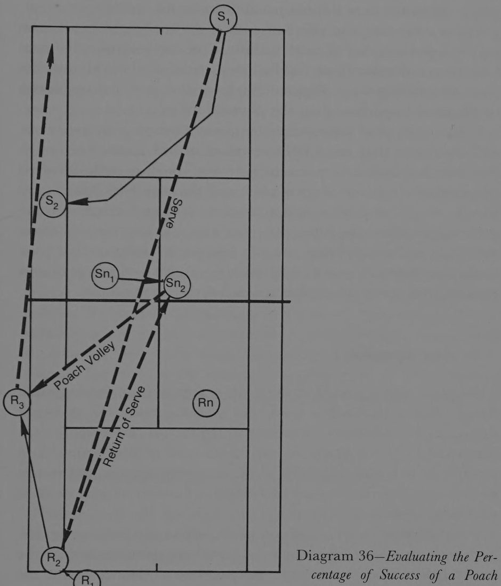
Hình 36: Đánh giá xác suất thành công của một cú cướp bóng (poach)
cú trả tiêu chuẩn: bạn thực hiện cú cướp bóng giữa người trả giao bóng và người đứng lưới của người trả giao bóng, hoặc về phía bên phải người đứng lưới của người trả giao bóng. Xác suất thành công của mỗi cú đánh này lớn hơn nhiều so với cú vô-lê chéo góc nhọn bởi vì chúng cho phép người giao bóng nhanh chóng áp sát lưới và nhờ đó đội bạn có thể xử lý mọi phản ứng của đội trả giao bóng ở lưới. Ngoài ra, xác suất thành công của cú đánh dọc giữa còn lớn hơn nữa bởi vì nó là cú đánh dễ hơn đối với bạn so với cú vô-lê chéo góc. Hiệu quả của cả ba cú gần như tương đương—chúng chỉ đưa ra những khả năng rất hạn chế cho người trả giao bóng.
standard return: you play the poach between the receiver and the receivers netman or to the right of the receiver’s netman. The percentage of success of either of these shots is much greater than that of the sharply angled volley because they allow the server to close the net quickly and thus your team can handle any response of the receiving team at the net. Also, the percentage of success of the shot down the middle is even greater because it is an easier shot for you than the angled volley. The effect of all three is about the same—they offer very limited possibilities to the receiver.
khi phân tích hiệu quả của một cú đánh, đừng quên tác động tâm lý tiềm ẩn của một số cú đánh nhất định. Bạn có thể uy hiếp một đội bằng sức mạnh hoặc khiến họ cảm thấy ngớ ngẩn bằng cách lùa họ chạy khắp sân hoặc bắt họ mất thăng bằng. Những ảnh hưởng tâm lý như vậy có thể quan trọng hơn nhiều so với những ảnh hưởng thể chất.
a shot, do not forget the hidden When analyzing the effect of psychological impact of certain shots. You can intimidate a team with power or make them feel foolish by running them all over the eee court or catching them offguard. Such psychological influences can be far more important than the physical influences.
Học cách chơi theo xác suất đòi hỏi phải phát triển nhận thức và tính kỷ luật để cuối cùng trở thành bản năng thứ hai. Mặc dù việc học này lúc đầu không mấy hấp dẫn, nhưng một khi đã thành thạo, nó cải thiện chất lượng lối chơi của bạn và sự dễ dàng với đó bạn xử lý những tình huống khó khăn và duy trì lợi thế tinh thần. Chơi theo xác suất cũng giúp lối chơi của bạn đơn giản hơn. Nếu bạn không thể đánh giá tình huống và các khả năng, bạn có thể trở nên rối trí đến mức các cú đánh của bạn trở nên do dự, bạn để cơ hội trôi qua, và cả bạn lẫn bạn cặp cùng lao vào quả bóng rồi để nó đi qua.
Learning to play percentages requires developing an awareness and discipline that eventually becomes second nature. Although this learning is not very exciting at first, once accomplished, it improves the quality of your play and the ease with which you handle tough situations and maintain a mental edge. Playing percentages also simplifies play for you. If you cannot assess situations and possibilities, you can become so confused that your strokes are hesitant, you let opportunities go by, and you and your partner both converge on the ball and then let it pass.
Phán Đoán TrướcAnticipation
Một viên gạch nền tảng khác của trận đấu là phán đoán trước. Phán đoán trước thường bị coi là một tài năng đoán đúng. Một định nghĩa tốt hơn là nhận thức về các yếu tố điều khiển bóng. Phát triển nhận thức như vậy cũng giống như rèn luyện bất kỳ phần nào khác trong lối chơi của bạn. Bạn phải học cách phân tích rồi tái lắp ghép các động tác và kết quả để có thể hiểu được từng ảnh hưởng riêng lẻ cũng như vai trò của chúng trong bức tranh tổng thể.
Another building block of the game is anticipation. Anticipation is too often considered a talent for guessing correctly. A better definition is awareness of ball-controlling factors. Developing such awareness is like working on any other part of your game. You must learn to break down and then reassemble actions and results so that you can understand individual influences as well as their role in the overall picture.
Với cú trả giao bóng, bạn chuẩn bị trước và trong lúc tung bóng, và bạn phán đoán trước dựa trên những dấu hiệu như tỷ số, cái liếc nhìn của người giao bóng trước khi tung bóng, vị trí của người giao bóng trên vạch cuối sân, việc người giao bóng thuận tay phải hay tay trái, hướng gió, thành công của những quả giao bóng trước đó, cách cầm vợt của người giao bóng, tình trạng của những quả bóng, và lịch sử thi đấu nói chung của người giao bóng, đặc biệt là cú vô-lê đầu tiên của người ấy. Sau khi bóng chạm vợt, tốc độ, góc độ, độ xoáy, đường bay và mục tiêu của quả bóng đều cho bạn thông tin để phản ứng.
For the return of serve, you prepare prior to and during the toss, and you anticipate from such indicators as score, glance of the server before his or her toss, the position of the server on the baseline, whether the server is right-handed or left-handed, the direction of the wind, the success of previous serves, the server’s grip, the condition of the balls, and the past history of the server’s overall play, especially his or her first volley. After impact, the speed, angle, spin, arc of flight, and target of the ball all give you information for the response.
Với mọi cú đánh khác, phán đoán trước của bạn có hai phần: bạn chuẩn bị trong lúc bóng bay về phía đối thủ, và bạn phản ứng với cú trả bóng của đối thủ. Trong phần đầu này bạn phải xét khoảng cách mà đối thủ phải di chuyển để đến được quả bóng rồi trở lại vị trí, độ dài động tác vung vợt ra sau mà người ấy dùng cho cú đánh, sự thăng bằng của người ấy trong cú đánh, góc của mặt vợt khi người ấy vung qua quả bóng, vị trí của quả bóng so với thân người ấy, sự thăng bằng của đội đối phương, sự thăng bằng của đội bạn, và phản ứng theo xác suất tốt nhất. Khi đối thủ đã đánh bóng, sự tập trung của bạn nên hướng vào quả bóng, chứ không phải vào các đối thủ. Hãy đánh giá vị trí đón bóng tốt nhất của bạn—điểm mà từ đó bạn sẽ đánh trả quả bóng. Nếu đối thủ đã thực hiện một cú đánh tốt, phản ứng khả dĩ duy nhất của bạn có thể là phòng thủ. Tuy nhiên, đừng bao giờ chấp nhận vị trí đón bóng của mình—hãy chọn lấy nó. Luôn cố gắng đón bóng ở thế có lợi nhất cho bạn, chứ không phải cho đối thủ.
For all other strokes, your anticipation has two parts: you prepare during the flight of the ball to your opponent, and you respond to the return of the ball by your opponent. During the first e2 part you must consider the distance your opponent must move to get to the ball and then get back in position, the amount of backswing he or she uses for the stroke, his or her balance during the shot, the angle of the racquet head as he or she swings through the ball, the position of the ball in relation to his or her body, the balance of the opposing team, the balance of your own team, and the best percentage response. Once your opponent hits the ball, your focus should be on the ball, not on your opponents. Evaluate your best position of interception—the point from which you will play back the ball. If your opponent has made a good shot, your only possible response may be defensive. However, never accept your position of interception—choose it. Always try to take the ball at your best advantage, not your opponent’s.
Sau khi bạn đã quan sát quả bóng, phân tích các khả năng và đã chọn điểm đón bóng của mình, còn thiếu điều gì? Cú đánh, và thường thì người chơi chỉ làm đúng như vậy—đánh trượt cú đánh. Bạn phải chuẩn bị sẵn vợt khi bóng rời khỏi vợt đối thủ. Vợt phải ở tư thế sẵn sàng đánh khi bóng bay qua lưới, bất kể phần còn lại của cơ thể bạn đã sẵn sàng hay chưa. Nếu không đủ thời gian để chuẩn bị cả cơ thể, ít nhất bạn cũng có thể đưa vợt ra trước với hy vọng đánh trả được bóng. Có lẽ định nghĩa hay nhất về phán đoán trước là luôn giữ vợt trong tư thế sẵn sàng mọi lúc.
After you have watched the ball and analyzed the possibilities and have selected your point of interception, what’s missing? The stroke, and often players do just that—miss the stroke. You must ready your racquet when the ball is leaving your opponent’s racquet. It must be in position to hit as the ball crosses the net, whether or not the rest of your body is ready. If there is not enough time to get your body ready as well, at least you can bring the racquet forward on the chance of getting back the ball. Perhaps the best definition of anticipation is having your racquet ready all the time.
Giao Tiếp Với Bạn CặpCommunicating With Your Partner
Luôn sẵn sàng mọi lúc cũng có nghĩa là giao tiếp với bạn cặp—một viên gạch nền tảng rất quan trọng của đánh đôi. Cách thức giao tiếp phụ thuộc vào từng người chơi. Một số bạn cặp truyền đạt thông tin với mức độ cầu kỳ và kịch tính như một huấn luyện viên bóng chày; một số bạn cặp dùng màn tụ họp trên sân để bàn chiến thuật theo kiểu kỹ thuật như một cuốn sách bài tập của bóng bầu dục chuyên nghiệp; một số dùng cái nháy mắt, cái nhìn, hoặc một động tác ra hiệu sau lưng.
Being ready all the time also means communicating with your partner—a very important building block of doubles. The means of communication depends on the players. Some partners pass information with the same elaborateness and dramatics as a baseball coach; some partners use an on-court huddle to discuss strategy in as technical a fashion as a professional football play book; some use a wink or a look or a behind-the-back gesture.
Betty Store và tôi đã chơi cùng nhau nhiều năm và có thể di chuyển tự động mà không cần bất kỳ tín hiệu nào và có thể bù đắp cho tình huống của nhau.
Betty Store and I played together for years and could make moves automatically without any signaling and could compensate for each other’s situations.
nếu phán đoán trước không thể thực hiện được hoặc bạn chưa có nhận thức cần thiết, hãy dựa vào những cách làm được chấp nhận chung sau đây:
not yet developed the If anticipation is not possible or you have necessary awareness, rely upon the following generally accepted practices: ee)
1. Người chơi ở ô bên trái bọc lót khu vực giữa sân.
1. The left-court player covers the center court.
2. Khi người đứng lưới bắt đầu băng ngang, người ấy phải tiếp tục băng; bạn cặp của người ấy ở phía sau phải di chuyển để lấp khoảng trống.
2. Once the netman starts to cross, he must continue; his partner in the back must move to fill the opening.
3. Nếu rơi vào tình huống một người trên lưới một người dưới sân, người ở dưới sân có cái nhìn bao quát và chỉ huy tình huống.
3. If there is a one-up-one-back situation, the back man has an overall view and captains the situation.
4. Cố gắng tự bọc lót cú đập bóng trên cao của mình. Nếu không thể, hãy băng ngang và chờ bạn cặp, người phải chạy đuổi theo bóng, ra chỉ dẫn nên ở lại trên lưới hay lùi về.
4. Try to cover your own overhead. If you cannot, cross and wait for your partner, who must run the ball down, to give instructions to stay up or come back.
hãy nói chuyện.
talk.
5. Trong mọi tình huống có thể gây nhầm lẫn,
5. In any situation of possible confusion, 6. Use the score to help decide tactics.
6. Dùng tỷ số để giúp quyết định chiến thuật.
Oo Score This last practice is often overlooked, but consideration of score is another very important building block. The score not only indicates the count, but also your focus—whether you should probe for information, maintain a certain strategy, or bring in different tactics.
Tỷ Số Cách làm cuối cùng này thường bị bỏ qua, nhưng việc cân nhắc tỷ số là một viên gạch nền tảng rất quan trọng khác. Tỷ số không chỉ cho biết điểm số, mà còn cho biết sự tập trung của bạn—liệu bạn nên thăm dò thông tin, duy trì một chiến lược nhất định, hay đưa vào những chiến thuật khác.
All points are important. In the early part of the match you may use certain shots to test both your team’s and your opponents’
Mọi điểm đều quan trọng. Trong phần đầu của trận đấu, bạn có thể dùng một số cú đánh để thử nghiệm điểm yếu và điểm mạnh của cả đội bạn lẫn đối phương. Những bước thăm dò này, cùng với kế hoạch chơi cơ bản, là nền tảng cho đà tấn công của bạn. Bạn duy trì đà đó bằng cách nhận ra tầm quan trọng then chốt của tỷ số.
weaknesses and strengths. These probes, along with the basic game plan, are the foundation of the momentum of your attack. You maintain that momentum by recognizing the pivotal importance of score.
Chúng ta hãy tách riêng từng điểm và xem xét những cân nhắc khác nhau cho mỗi điểm. Hãy nhớ rằng chúng ta sẽ thiết lập những hướng dẫn mà bạn nên theo dõi bằng lẽ thường và sự linh hoạt. Nếu việc sửa đổi hoặc thậm chí đảo ngược hoàn toàn một hướng dẫn mang lại thành công, thì nhất định hãy thực hiện thay đổi đó.
Let us isolate each point and look at the different considerations for each. Remember that we will be establishing guidelines that you should monitor with common sense and flexibility. If modifica- tion or even complete reversal of a guideline is successful, then by all means make the change.
Trong phần phân tích sau đây về các tỷ số của một ván đấu và việc đánh giá chiến lược của mỗi đội ở những tỷ số nhất định, hãy coi bạn là người giao bóng ở mỗi tỷ số.
In the following breakdown of the scores of a game and the evaluation of each team’s strategy at certain scores, consider yourself the server for each score.
Ở tỷ số 0-0, đội bạn, nhờ lợi thế giao bóng, có thể chơi mạo hiểm hơn để gia tăng sự uy hiếp. Người trả giao bóng muốn đưa bóng vào cuộc để cho người đứng lưới của mình cơ hội cướp bóng (poach) cú vô-lê đầu tiên của bạn. Ngay cả khi đội trả giao bóng không thành công, họ cũng đã gây áp lực buộc đội bạn phải thắng điểm. Điểm mở màn có thể định hình tông điệu cho cả ván đấu.
At the score 0-0 your team, because of its serving advantage, can overplay to increase your intimidation. The receiver wants to get the ball in play to give his or her netman a chance to poach your first volley. Even if the receiving team is not successful, they have put pressure on your team to win the point. The opening point can set the tone for the whole game.
Ở tỷ số 15-0, đội bạn có cơ hội dẫn trước hai điểm là 30-0. Tuy nhiên, vị trí trên sân của đội bạn không mạnh lắm khi người trả giao bóng ở ô bên trái đang trả bóng, bởi vì người ấy có cơ hội thực hiện cú trả trái tay chéo sân tự nhiên về phía trái tay của bạn. Do đó bạn hy vọng giao bóng của mình sẽ chi phối điểm này hơn là mạo hiểm trước một cú trả mạnh. Người trả giao bóng ở ô bên trái cảm thấy áp lực phải thắng điểm chỉ để giữ thế cân bằng. Người ấy phải chơi theo xác suất để có một cú trả chéo sân vững vàng cho phép mình áp sát lưới. Người đứng lưới của đội trả giao bóng phải bám sát lưới để đón bắt mọi sai sót, nhưng không nên thử những cú đánh ngoạn mục hoặc mạo hiểm.
At the score 15-0 your team has a chance for a two-point lead of 30-0. However, your team’s court positions are not so strong when the left-court receiver is returning, because he or she has the opportunity for the natural crosscourt backhand return to your backhand. You therefore hope to have your serve dominate the point rather than chance a strong return. The left-court receiver feels the pressure to win the point just to stay even. He or she must play the percentage for a solid crosscourt return that will allow him or her to close the net. The receiver’s netman must stay tight to the net to pick off any error, but should not try any spectacular or risky plays.
Ở tỷ số 0-15, bạn cảm thấy áp lực phải thắng điểm để đội bạn không bị dẫn 0-30. Một lần nữa, hãy dựa vào ưu thế giao bóng và lối chơi vững vàng cơ bản của bạn. Tuy nhiên, người trả giao bóng ở ô bên trái có cơ hội bù đắp lợi thế giao bóng của bạn. Nếu người ấy thắng được điểm để dẫn 0-30, bạn sẽ cần bốn điểm để thắng hoặc ba điểm để đi đến deuce; đội trả giao bóng sẽ chỉ cần hai điểm để thắng hoặc một điểm để đi đến deuce. Do đó người trả giao bóng ở ô bên trái có thể thử một cú đánh lớn hơn, bởi vì xác suất thấp hơn của cú đánh được bù lại bằng những lợi ích nếu thành công. Nếu cú đánh không thành công, tỷ số hòa, và không mất gì.
At the score 0-15 you feel the pressure to win the point so that your team will not be down 0-30. Again, rely on your serving dominance and basic solid play. However, the left-court receiver has a chance to offset your serving advantage. If he or she can win the point for a 0-30 lead, you will need four points to win or three to go to deuce; the receiving team will need only two points to win or one to go to deuce. The left-court receiver therefore might try for a bigger shot, because the lower percentage of the shot is offset by the advantages of success. If the shot is not successful, the score is tied, and no ground is lost.
Ở tỷ số 15-15, cả hai đội đều đối mặt với một điểm then chốt; kết quả có thể là 15-30 hoặc 30-15—tỷ số bước ngoặt nhất của ván đấu.
At the score 15-15 both teams are facing a critical point; the result could be 15-30 or 30-15—the most pivotal score of the game.
Một lần nữa, bạn và người trả giao bóng nên chơi môn quần vợt cơ bản.
Again, you and the receiver should play basic tennis.
Ở tỷ số 0-30, bạn đang gặp khó khăn và phải trở nên hung hăng hơn để buộc người trả giao bóng mắc lỗi. Trở nên hung hăng hơn không có nghĩa là đánh những cú mạnh hay liều lĩnh theo cách khác; nó đòi hỏi sự tập trung và sự hối hả. Người trả giao bóng ở ô bên phải lúc này có thể tấn công nhiều hơn một chút.
At the score 0-30 you are in trouble and must become more aggressive to force the receiver to make an error. Becoming more aggressive does not mean making power shots or otherwise taking chances; it involves concentration and hustle. The right-court receiver can now be a little more offensive.
Ở tỷ số 15-30, hãy dựa vào những điều cơ bản. Nếu bạn thua điểm ở tỷ số này, bạn sẽ cần tối thiểu bốn điểm để thắng, và đội trả giao bóng sẽ chỉ cần một điểm. Người trả giao bóng nên theo đuổi điểm này và buộc bạn phải chơi, chứ không phải chỉ tiếp sức cho ưu thế giao bóng của bạn bằng một cú trả yếu ớt. Cú đánh lớn có xác suất thấp hơn sẽ cân bằng cơ hội thành công. Nếu người ấy đánh trượt, không mất gì.
At the score 15-30 rely on basics. If you lose the point at this score, you will need a minimum of four points to win, and the receiving team will need only one. The receiver should go after this point and force you, not just feed into your serving dominance by making a weak return. The lower-percentage big shot balances the chance of success. If he or she misses, no ground is lost.
Ở tỷ số 0-40, hãy thử điều gì đó để phá vỡ đà của người trả giao bóng—một quả giao bóng mạnh, đội hình chữ I (sẽ bàn đến sau), hoặc một chiến thuật nào khác. Mặc dù người trả giao bóng có nhiều cơ hội cho điểm mà người ấy cần để thắng, người ấy không được lơi lỏng và cho rằng mình đã THÀNH CÔNG.
At the score 0-40 try something to break the momentum of the receiver—a big serve, the I-formation (discussed later), or some other tactic. Although the receiver has many chances for the one she must’ not let up and assume point he needs to win, he or SUCCESS.
Ở tỷ số 40-0, người trả giao bóng không có gì để mất. Người ấy phải thử điều gì đó để quay lại cuộc chơi. Bạn phải duy trì tấn công.
At the score 40-0 the receiver has nothing to lose. He or she must try something to get back into the game. You must maintain your attack.
Tỷ số 30-30 và 40-40 (deuce) đặt ra cùng một tình huống.
The score 30-30 and 40-40 (deuce) present the same situation.
Đội bạn nên dựa vào ưu thế giao bóng và chiến lược cơ bản.
Your team should rely on serving dominance and basic strategy.
Người trả giao bóng ở ô bên phải muốn mang lại cho bạn cặp của mình một điểm ván. Người ấy phải đưa bóng vào cuộc, nhưng sau đó nhanh chóng áp sát lưới và nhắm đến điểm này. Nếu người trả giao bóng ở ô bên phải không giành được điểm, có lẽ người trả giao bóng ở ô bên trái có cơ hội đưa tỷ số trở lại deuce. Nếu người ấy giành được điểm, thì có lẽ người trả giao bóng ở ô bên trái có thể ghi điểm cuối cùng để thắng ván.
The right-court receiver wants to give his or her partner a game point. He or she must get the ball in play, but then close quickly and go for the point. If the right-court receiver does not get the point, perhaps the left-court receiver has a chance of returning the score to deuce. If he or she does get the point, then perhaps the left- court receiver can make the final point to win the game.
Ở tỷ số 40-15, hãy chơi môn quần vợt vững vàng, cơ bản, nhưng đừng chơi do dự. Người trả giao bóng ở ô bên phải phải tìm mọi cơ hội để nhắm đến một cú trả mạnh. Nếu người ấy thắng điểm, bạn được nhắc nhở rằng đối phương vẫn đang chơi thứ quần vợt hung hăng. Một cú trả thắng điểm mạnh mẽ còn có thể làm suy yếu sự tự tin của bạn và mở đường đến tỷ số deuce.
At the score 40-15 play solid, basic tennis, but do not play hesitantly. The right-court receiver must look for any opportunity to go for a strong return. If he or she wins the point, you are reminded that your opponents still are playing aggressive tennis. A eee strong winning return may even undermine your confidence and lead the way to a deuce score.
Ở tỷ số 15-40, hãy dựa vào ưu thế giao bóng và những điều cơ bản vững vàng để thắng điểm. Người trả giao bóng ở ô bên phải nên gây áp lực buộc bạn chơi tốt và không cho phép bạn dựa vào giao bóng để thắng điểm. Người ấy không nhất thiết phải nhắm đến một cú trả thắng điểm toàn lực; một cú trả vững vàng và tư thế tấn công hiệu quả hơn.
Le At the score 15-40 rely on your serving dominance and solid basics to win the point. The right-court receiver should pressure you to play well and not allow you to rely on your serve to win the point. He or she should not necessarily go for an all-out winning return; a solid return and offensive posture are more effective.
Ở tỷ số 40-30, một lần nữa bạn nên dựa vào ưu thế giao bóng và những điều cơ bản vững vàng. Người trả giao bóng ở ô bên trái nên tập trung vào việc tạo ra một cú trả tốt để gây áp lực buộc bạn phải thắng điểm.
At the score 40-30 you again should rely on serving dominance and solid basics. The left-court receiver should concentrate on making a good return that will pressure you to win the point.
Ở tỷ số 30-40, một lần nữa hãy dùng lối chơi tiêu chuẩn. Người trả giao bóng ở ô bên trái nên nhắm đến mọi sơ hở và tấn công.
At the score 30-40 again use standard play. The left-court receiver should go for any opening and attack.
Ngoài những hướng dẫn cho lối chơi ở những điểm nhất định của ván đấu, còn có một số cân nhắc tổng quát hơn: * Khi đang dẫn trước, hãy duy trì tấn công. Đừng bao giờ để đà của bạn sụt giảm và đừng bao giờ để ai đó quay lại trận đấu bằng cách cho rằng mình đã thắng.
Besides these guidelines for play at certain points of the game, there are some more general considerations: * When ahead, keep up the attack. Never let your momentum drop and never let someone back into a match by assuming victory.
* Thay đổi một ván đấu đang thua từng bước một. Nếu bạn không làm vậy, bạn sẽ đánh mất những chiến thuật tốt, và sự chuyển đổi sẽ quá triệt để đến mức bạn không thể thực hiện được.
* Change a losing game one step at a time. If you do not, you will lose the good tactics, and the transition will be too radical for you to carry out.
* Hãy lưu ý rằng người trả giao bóng ở ô bên trái nắm giữ tất cả những điểm bước ngoặt và phần lớn những điểm quyết định thắng ván. Người trả giao bóng ở ô bên phải chỉ có thể thắng hoặc thua ở tỷ số 40-15 hoặc 15-40. Tuy nhiên, nếu không có sự hỗ trợ của người trả giao bóng ở ô bên phải, người trả giao bóng ở ô bên trái không bao giờ có cơ hội thắng ván, mà chỉ có cơ hội gỡ hòa.
* Note that the left-court receiver has all the pivotal and most of the game-winning points. The right-court receiver can only win or lose at 40-15 or 15-40. However, without the support of the right- court receiver, the left-court receiver never has the opportunity to win the game, only the opportunity to tie.
* Bạn không thể để mất ván giao bóng của mình. Một lần bị bẻ giao bóng thường khiến bạn mất ván đấu, bởi vì trong đánh đôi việc bẻ lại giao bóng đặc biệt khó khăn.
* You cannot afford to lose your service game. A service break generally costs the set, because it is especially difficult to break back in doubles.
- Đội trả giao bóng trông đợi sẽ thua phần lớn các ván, không phải bằng cách bỏ cuộc mà là do chính thiết kế của trò chơi. Tuy nhiên, họ phải gây áp lực buộc đội giao bóng phải thắng ván, thay vì để họ đơn thuần thua.
- The receiving team expects to lose most games, not by giving up but by the design of the game itself. However, they must put pressure on the serving team to win the game as opposed to their simply losing.
* Cơ hội bẻ giao bóng tốt nhất là vào đầu ván đấu—trước khi đội giao bóng kịp khởi động. Ngoài ra, việc liều lĩnh có giá phải trả thấp nhất ở giai đoạn này của trận đấu.
* The best chance to break is early in the set—before the serving team can warm up. Also, taking chances is least costly at this stage of the match.
* Ván đấu then chốt nhất đối với đội giao bóng trước là ở tỷ số 4-4. Nếu đội trả giao bóng bẻ được giao bóng, họ có thể giao bóng để kết thúc ván đấu. Ván đấu then chốt nhất đối với đội trả giao bóng trước là ở tỷ số 3-4.
* The most critical game for the team that started serving is at 4-4. If the receiving team breaks, they can serve out the set. The most critical game for the team that received first is 3-4.
* Hãy duy trì sự linh hoạt. Thay đổi những lối chơi tiêu chuẩn và đưa vào những lối chơi lạ khi có nhu cầu. Hãy sẵn lòng liên tục sửa đổi cho phù hợp với điều kiện thay đổi.
* Maintain flexibility. Change the standard plays and introduce exotic ones when there is a need. Be willing to constantly revise for changing conditions.
Giờ đây khi chúng ta đã bàn về một số viên gạch nền tảng của đánh đôi, hãy xem xét một số câu hỏi cơ bản về cấu trúc đội của bạn, những điểm mạnh và điểm yếu của nó, và cách làm cho nó hiệu quả hơn.
Now that we have discussed some of the building blocks of doubles, let us look at some basic questions about the makeup of your team, its strengths and weaknesses, and how to make it more effective.
Ô Bên Phải và Ô Bên Trái Trước tiên hãy hiểu rằng sự cân bằng quyền lực và phạm vi bao quát trong mỗi đội không phải là 50-50. Nếu bạn chơi ở ô bên phải, bạn ở bên khó hơn để thắng hoặc kiểm soát điểm bởi vì trái tay của bạn bọc lót khu vực giữa sân. Bạn phải xoay thân người, hoặc ít nhất là vai, 135 độ ở một số cú đánh để trả những cú trái tay chéo sân. Ngược lại, nếu bạn chơi ở ô bên trái, thuận tay của bạn bọc lót khu vực giữa sân. Trên thực tế, ba phần tư sân là ở phía thuận tay của bạn.
Right Court vs. Left Court Understand first that the balance of power and range within each team is not 50-50. If you play the right court, you have the tougher side to win or control points because your backhand covers the middle. You must turn your body, or at least your shoulders, 135 degrees on some shots to return crosscourt backhands. In contrast, if you play the left court, your forehand covers the middle. In fact, three quarters of the court is to your forehand side.
Ngoài ra, cú trái tay chéo sân của bạn nằm dọc theo một góc tự nhiên hơn. Do đó bạn có phạm vi sức mạnh tốt hơn cho mọi cú đánh của mình.
Also, your crosscourt backhand is along a more natural angle. You therefore have the better power range for all your strokes.
Với tư cách là người chơi ở ô bên trái, bạn cũng có cơ hội tốt hơn để thắng điểm từ cú trả giao bóng. Cú giao bóng vào ô bên phải mạnh hơn và ổn định hơn bởi vì đường cong tự nhiên của cú giao bóng cho phép bóng bay qua phần thấp hơn của lưới mà vẫn đánh trúng bất kỳ mục tiêu nào. Cú giao bóng vào ô bên trái là vấn đề lớn hơn đối với người giao bóng, bởi vì đường cong của cú giao bóng về phía trái tay đưa bóng bay qua phần cao hơn của lưới. Với tư cách là người trả giao bóng ở ô bên trái, vấn đề này của người giao bóng là lợi thế đầu tiên của bạn. Lợi thế thứ hai của bạn là người đứng lưới của người giao bóng chỉ có thể cướp bóng bằng cú trái tay khi bạn trả bóng, và do đó những lựa chọn của người ấy về sức mạnh,
As the left-court player, you also have the better chance to win the point from return of serve. The serve to the right court is stronger and more consistent because the natural curve of the serve enables the ball to pass over the lower part of the net and still hit any target. The serve to the left court is more of a problem for the server, because the curve of the serve to the backhand takes the ball over a higher part of the net. As the receiver in the left court, G7 this problem of the server is your first advantage. Your second advantage is that the server’s netman can poach only with his a backhand on your return, and thus his or her options of power,
Hình 37. Nếu người đứng lưới của bạn
bọc lót khu vực giữa sân (Rn; > Rng) và bạn bọc lót hành lang biên (Ri > Rg), thì người đứng lưới của người giao bóng có thể thực hiện một cú cướp bóng trái tay (Sn; > Sng) về phía hành lang biên của bạn. Tuy nhiên, bạn sẽ có thể trả cú đánh đó (Re > R3) dọc theo đường của người đứng lưới bên phía người giao bóng để ghi điểm thắng hoặc chơi chéo sân từ khu vực cuối sân. Vì vậy, theo xác suất (trừ những tình huống dọn sẵn), người đứng lưới của người giao bóng phải cướp bóng dọc giữa sân, khu vực này sẽ được người đứng lưới của bạn bọc lót (Rn; > Rng), và do đó sẽ không thu được lợi thế nào từ cú cướp bóng. Người đứng lưới của bạn trả cú cướp bóng xuyên qua trung tâm đội giao bóng để người giao bóng đang tiến lên (Sy > Sz) không thể biến cú vô-lê đầu tiên của mình thành một cú thắng điểm dọc hành lang biên của người đứng lưới bên bạn.
covers the middle (Rn; > Rng) and you cover the alley (Ri > Rg), the server’s netman can make a backhand poach (Sn; > Sng) to your alley. However, you will be able to return the shot (Re > R3) down the server’s netman’s line for a winner or play crosscourt from the back court. Thus, the server’s netman, percentagewise (except on setups), must poach up the middle, which will be covered by your netman (Rn; > Rng), and therefore will not gain any advantage from the poach. Your netman returns the poach through the center of the serving team so that the approaching server (Sy > Sz) cannot make his or her first volley a winner down your netman’s alley.
Nếu Cả Hai Bạn Cặp Đều Thuận Tay PhảiIf Both Partners Are Right-Handed
Từ những điều trên, hẳn phải rõ ràng rằng nếu bạn và bạn cặp đều thuận tay phải, thì người chơi mạnh hơn nên chơi ở ô bên trái.
It should be obvious from the above that if you and your partner are right-handed, the stronger player should play the left court.
Cú thuận tay của người ấy sẽ hướng vào khu vực giữa sân và do đó có thể bao quát hơn một nửa chiều rộng của sân. Người ấy vì vậy có thể lùi về bọc lót hoặc chạy đuổi theo gần như mọi cú đánh, thực hiện những cú đập bóng trên cao, và cướp bóng—tất cả đều bằng thuận tay. Người chơi ở ô bên phải có nhiệm vụ giữ bóng trong cuộc đủ lâu để người chơi ở ô bên trái tận dụng một tình huống dọn sẵn hoặc một điểm yếu và ghi điểm thắng.
His or her forehand will be to the middle and thus can cover more than one half of the width of the court. He or she thus can back up or run down almost any shot, make overheads, and poach—all with the forehand. The right-court player has the job of keeping the ball in play long enough for the left-court player to take advantage of a setup or a weakness and make the winner.
Người giao bóng hiệu quả hơn nên giao bóng nhiều nhất, và do đó nên giao bóng trước. Tuy nhiên, hãy cân nhắc cả ảnh hưởng của mặt trời và khả năng rằng một hàng rào bên cạnh quá gần sân có thể được dùng để tạo lợi thế cho người giao bóng yếu hơn.
The more effective server should serve the most times, and therefore should serve first. However, consider also the influence of the sun and the possibility that a sideline fence too close to the court may be used to the advantage of the weaker server.
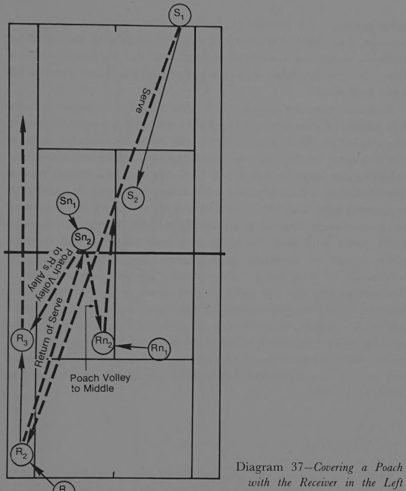
Hình 37: Bọc lót một cú cướp bóng khi người trả giao bóng ở ô bên trái
Nhưng nếu một thành viên trong đội bạn thuận tay trái và người kia thuận tay phải thì sao? Mặc dù người thuận tay trái thường chơi ô bên trái và người thuận tay phải chơi ô bên phải để tạo điều kiện cho những cú thuận tay chéo sân mạnh mẽ và phạm vi bao quát thuận tay rộng hơn đối với những góc rộng, vẫn có một số lập luận chống lại cách làm đã được chấp nhận này.
But what if one member of your team is left-handed and the other right-handed? Although the left-hander often plays the left court and the right-hander the right court to enable strong forehand crosscourt shots and extra range of forehand coverage of wide angles, there are some arguments against this accepted procedure.
Hãy nhớ rằng chìa khóa quan trọng nhất để bẻ giao bóng là cú trả giao bóng và cú vô-lê đầu tiên. Bằng cách đặt những cú trái tay của đội bạn hướng vào khu vực giữa sân (người thuận tay phải ở ô bên phải; người thuận tay trái ở ô bên trái), cả hai bạn đều phải đối phó với hai cú đánh khó nhất—cú trả trái tay và cú vô-lê trái tay—từ khu vực giữa sân. Ngoài ra, với tư cách là những người đứng lưới, cả hai bạn đều phải cướp bóng bằng cú trái tay của mình.
Remember that the most important key to breaking service is the return of serve and the first volley. By placing the backhands of ge left- your team to the middle (right-hander in the right court; hander in the left court), both of you must deal with the two most difficult shots—the backhand return and the backhand volley— middle. Also, as netmen, both of you must poach with from the ee your backhand.
Bây giờ hãy xem xét những lập luận ủng hộ cách sắp xếp ngược lại—người thuận tay trái của đội bạn ở ô bên phải và người thuận tay phải ở ô bên trái. Cả hai cú trả bóng của bạn sẽ hiệu quả hơn bởi vì cả hai cú trái tay của bạn đều sẽ có cú đánh chéo sân tự nhiên.
Consider now the arguments for the opposite arrangement—the en left-hander of your team in the right court and the right-hander in ee the left court. Both your returns will be more effective because ee both of your backhands will have the natural crosscourt stroke.
Ngoài ra, vì cả hai cú thuận tay sẽ hướng vào khu vực giữa sân, bạn sẽ có cơ hội tốt hơn để xử lý những pha tấn công mạnh dọc giữa sân. Và những cú vô-lê trái tay của bạn sẽ hiệu quả hơn trong việc chặn đứng và trả những góc chéo sân so với việc canh giữ khu vực giữa sân. Với tư cách là những người đứng lưới, cả hai bạn đều có thể cướp bóng bằng cú thuận tay của mình. Đúng là bạn sẽ hy sinh phần nào phạm vi bao quát những góc rộng, nhưng so với lợi thế ở khu vực sân bên trong của đội bạn, sự hy sinh này là rất nhỏ.
Also because both forehands will be to the middle, you will have a better chance to handle power plays through the middle. And your backhand volleys will be more effective in cutting off and returning crosscourt angles than in guarding the middle. As netmen, you can both poach with your forehand. It is true that you will sacrifice some range in covering wide angles, but compared to the advantage of your team’s inner court, this sacrifice is minimal.
Cũng hãy nhớ rằng người chơi thuận tay phải ở ô bên trái đem lại sức mạnh nhờ khả năng lùi về bọc lót hoặc chạy đuổi theo gần như mọi cú đánh hay thực hiện cú đập bóng trên cao—tất cả đều bằng thuận tay. Về lợi thế giao bóng, cả hai bạn đều có thể xoáy bóng tương ứng theo một trong hai hướng ngang. Người chơi thuận tay phải có thể xoáy cú giao bóng của mình sang bên phải; người chơi thuận tay trái có thể xoáy cú giao bóng của mình sang bên trái.
Remember also that the right-handed player in the left court offers the strength of his or her being able to back up or run down almost any shot or make an overhead—all with the forehand. As for the serving advantage, both of you can spin the ball respectively in either sideways direction. The right-handed player can spin his or her serve to the right; the left-handed player can spin his or her serve to the left.
Cướp Bóng (Poach)Poaching
Một trong những cách tốt nhất để gia tăng hiệu quả của đội bạn là cướp bóng (poach) hay băng ngang tấn công. Bạn không cần phải là người đứng lưới trong đội giao bóng mới cướp bóng được. Với tư cách là người đứng lưới của đội trả giao bóng, bạn thường có thể tận dụng vị trí yếu của người giao bóng khi người ấy
One of the best ways to increase the effectiveness of your team is by poaching or offensive crossing. You need not be the netman on the serving team to pgach. As the receiver’s netman, you often can take advantage of the weak position of the server when he or she
Hình 38 để xem một ví dụ về tính hiệu quả của cú cướp bóng của người đứng lưới đội trả giao bóng ở ô bên trái.
Diagram 38 for an example of the effectiveness of the poach of the receiver’s netman in the left court.
Tuy nhiên, cướp bóng ở cú vô-lê đầu tiên với tư cách là người đứng lưới đội trả giao bóng ở ô bên phải là một chiến thuật yếu hơn nhiều. Khi bạn băng ngang từ ô bên phải, bạn phải cướp bóng bằng cú trái tay, và bạn cặp của bạn, người thường trả bóng từ vị trí rộng, sẽ có rất nhiều sân phải bao quát.
Poaching on the first volley as receiver’s netman in the right court, however, is a much weaker tactic. When you cross from the right court, you must poach with your backhand, and your partner, who most often will have returned from the wide position, will have a great deal of court to cover.
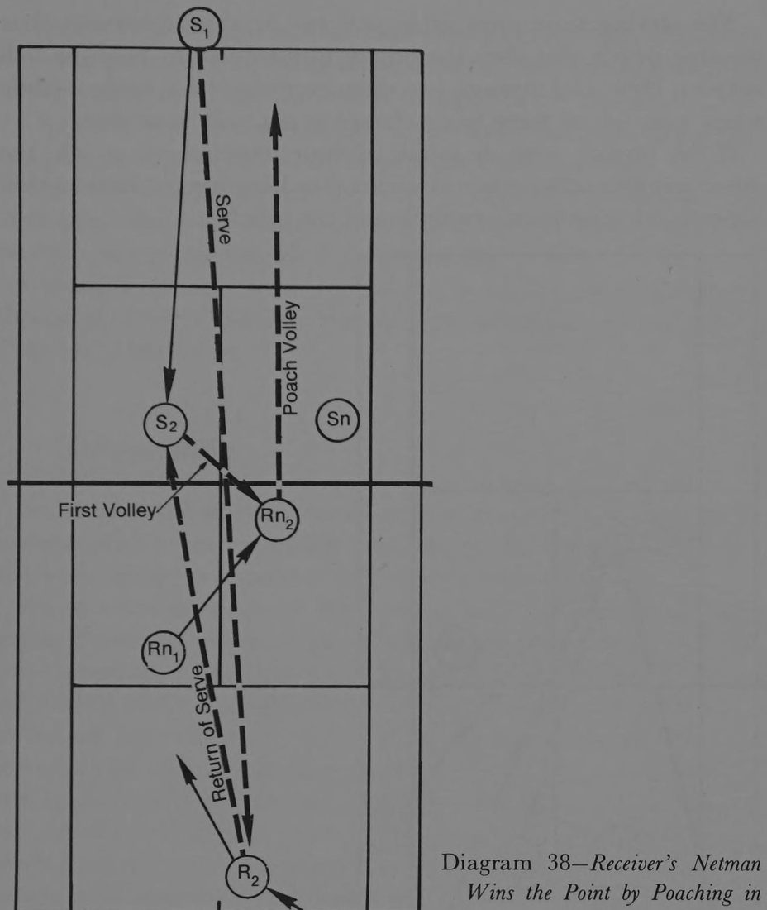
Hình 38: Người đứng lưới của đội trả giao bóng
bạn cảm thấy tự tin về việc băng ngang và thắng điểm trực tiếp mà thậm chí không cần báo trước cho bạn cặp. Tuy nhiên, đây là ngoại lệ của nguyên tắc chung là bằng cách nào đó phải ra tín hiệu và thông báo cho bạn cặp rằng bạn định cướp bóng để người ấy có thể lấp khoảng trống bạn bỏ lại. Thường thì bạn dùng chiến thuật cướp bóng chỉ để phá vỡ nhịp điệu của đội giao bóng, bất kể điều kiện ra sao; bạn có thể thắng điểm bằng cú cướp bóng, hoặc đối phương có thể trả lại cú đánh của bạn. Dù trong trường hợp nào, bạn cặp của bạn cũng phải sẵn sàng bọc lót cho bạn.
you feel confident about crossing and winning the point outright without even forewarning your partner. However, this is the exception to the general rule of somehow signaling and commu- nicating to your partner that you intend to poach so that he or she can fill the gap you leave. Often you use the tactic of poaching to simply break up the rhythm of the serving team, regardless of the conditions; you may win the point by poaching, or your opponents may return your shot. In either case, your partner must be ready to cover for you.
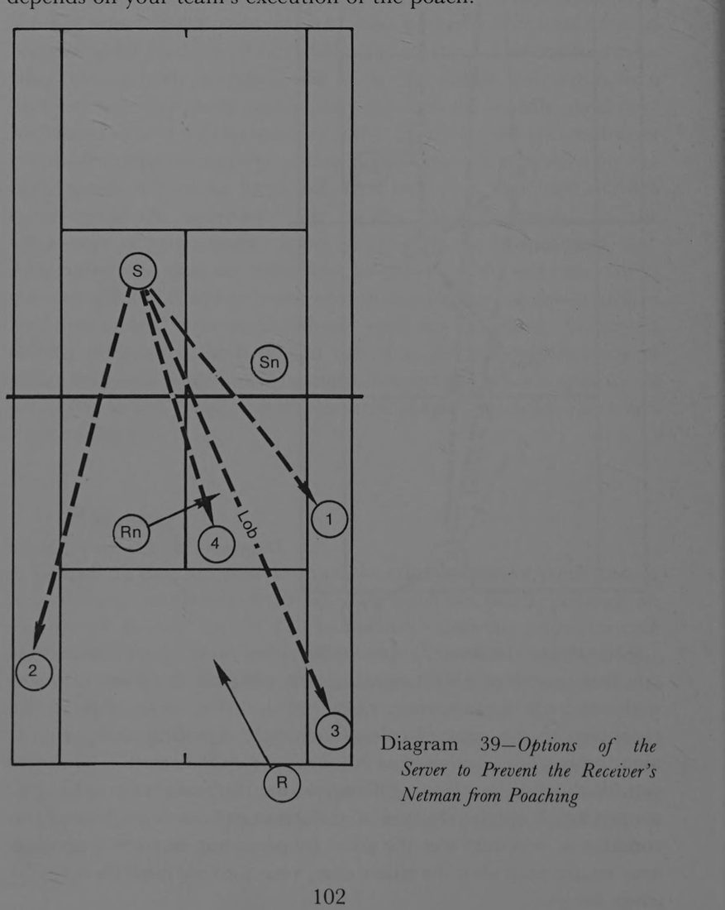
Đội giao bóng thường không thể ngăn cản cú cướp bóng thắng điểm của bạn, nhưng họ nên cố gắng buộc bạn đánh bóng vào giữa họ và xuyên qua hai cây vợt thay vì đánh ra phía ngoài, nơi chỉ một trong hai người có cơ hội trả lại cú đánh của bạn.
It aa The serving team most often will not be able to prevent your oily winning poach, but they should try to force you to play the ball ee between them and through two racquets rather than to the outside es a where only one of them has a chance to get back your shot.
Nếu đội giao bóng biết ý định cướp bóng của bạn,
If the serving team is aware of your intention to poach, the
Hình 39. Mỗi lựa chọn
Hình 39: Những lựa chọn của
Lựa chọn 1: Nếu bạn, với tư cách là người đứng lưới, băng ngang chậm, thì người giao bóng có thể đánh một đường bóng mở, nhẹ, rơi tắt trước cú cướp bóng của bạn để đến khi bạn tới được quả bóng thì nó đã rơi xuống dưới lưới.
Option 1: If you, as netman, are slow to cross, then the server can play an open, soft, dying angle ahead of your poach so that by the time you reach the ball, it has dropped below the net.
Lựa chọn 2: Mặt khác, nếu bạn di chuyển quá sớm, người giao bóng có thể đánh cú vô-lê đầu tiên theo một góc mở dọc biên.
Option 2: On the other hand, if you move too soon, the server can play the first volley at an open angle down the line.
Lựa chọn 3: Nếu bạn cặp của bạn, người trả giao bóng, áp sát quá nhanh và quá rộng sau cú trả bóng thay vì áp sát vào vị trí lưới thông thường của bạn, thì người giao bóng có thể dùng một cú lốp bóng chéo sân.
Option 3: If your partner, the receiver, closes too quickly and too wide after his or her return instead of closing to your normal net position, the server can use a crosscourt lob.
Lựa chọn 4: Nếu đội bạn thực hiện đúng, thì người giao bóng nên đánh cú vô-lê của mình thấp xuyên qua khu vực giữa sân về phía trái tay của bạn cặp (người trả giao bóng).
Option 4: If your team’s execution is correct, then the server should play his volley low through the middle to your partner’s (receiver’s) backhand.
Đội Hình Chữ II-Formation
Đôi khi đội giao bóng thấy rằng vị trí thuận lợi của mình bị đe dọa bởi những cú trả chéo sân đặc biệt tốt đến mức không cho người giao bóng tiến lên và bắt vô-lê thành công.
Sometimes the serving team sees that its advantageous position is threatened by exceptionally good crosscourt returns that do not allow the server to approach and volley successfully.
Một chiến lược hiệu quả của đội giao bóng để vô hiệu hóa những cú trả chéo sân mạnh mẽ như vậy, đặc biệt là của người trả giao bóng ở ô bên trái, chính là
An effective strategy of the serving team to undermine such strong crosscourt returns, especially by the left-court receiver, is the
Hình 40. Với tư cách là người đứng lưới của người giao bóng, bạn đứng ở
giữa sân (để tạo thành một đường thẳng hoặc chữ I với người giao bóng) nhằm chặn đứng những góc chéo sân của các cú trả bóng. Bạn cặp của bạn, người giao bóng, giao bóng ra rộng để giành thời gian bay và giới hạn người trả giao bóng vào chỉ một góc trả bóng. Tuy nhiên, người ấy phải sẵn sàng bọc lót cho bạn nếu bạn quyết định di chuyển. Bạn lùi lại một hoặc hai bước để sẵn sàng đón một cú lốp bóng, nhưng vẫn giữ được lợi thế bước tới để cướp bóng bằng cú thuận tay. Khi người đứng lưới của đội trả giao bóng thấy đội hình chữ I của đội bạn, người ấy nên bắt đầu chơi rộng hơn một hoặc hai bước để buộc bạn đánh vào khu vực giữa sân, và tiến vào một hoặc hai bước để tận dụng bất kỳ lúc nào đội bạn mất thăng bằng trong chốc lát. Người trả giao bóng nên trả bóng dọc biên và áp sát nhanh, biết rằng người đứng lưới của mình sẽ bọc lót khả năng có một cú đánh chéo sân của người giao bóng. Một khi bóng đã vào cuộc, người giao bóng di chuyển để bọc lót vị trí thông thường của bạn, hoặc bạn có thể quay trở lại vị trí thông thường của mình trong khi người giao bóng thực hiện cú tiến lên thường lệ của mình.
the middle of the court (to form a straight line or J with the server) to cut off the crosscourt angles of the returns. Your partner, the server, serves wide to gain flight time and limit the receiver to only one angle of return. However, he or she must be prepared to cover for you if you decide to move. You start a step or two back to be ready for a lob, but still maintain the advantage to step forward to poach with your forehand. When the receiver’s netman sees your team’s I-formation, he should start play a step or two wider to force you to play the middle and a step or two in to take advantage of any momentary off-balance of your team. The receiver should return down the line and close quickly, knowing that his netman will cover the possibility of a crosscourt shot by the server. Once the ball is in play, the server moves to cover your normal position, or you can move back to your normal position while the server makes his or her usual approach.
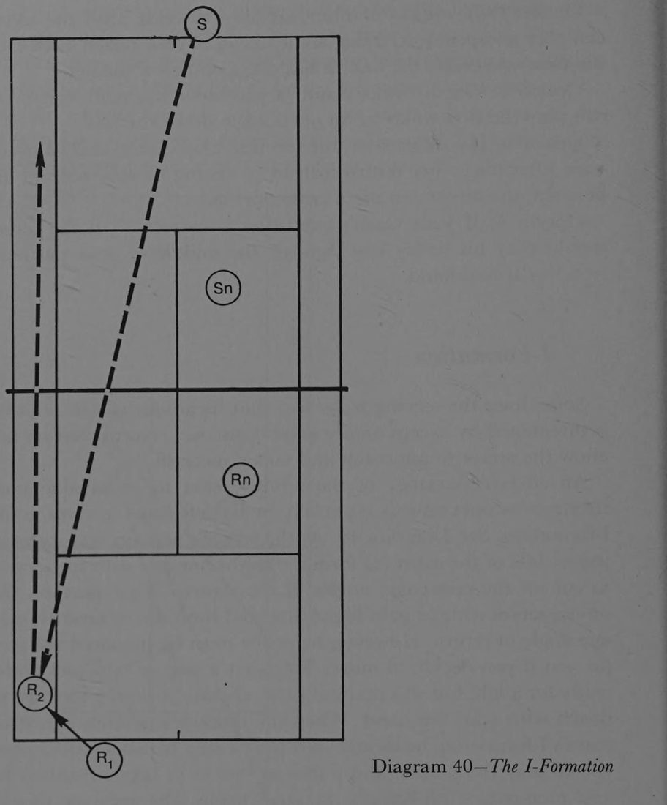
Rey
Rey
Hình 40: Đội hình chữ I
những cú trả bóng trước một cú giao bóng chéo góc như vậy có thể nằm ngoài tầm với của nỗ lực bọc lót vị trí thông thường của bạn (người đứng lưới của người giao bóng) của người giao bóng. Ngoài ra, bạn cặp của bạn, người giao bóng, sẽ phải bọc lót một cú trả bóng dọc biên bằng cú trái tay của người ấy, và nếu bạn cướp bóng, bạn cũng sẽ phải dùng cú trái tay của mình.
returns of such an angled serve are likely to be beyond the server’s attempt to cover your (server’s netman’s) normal position. Also, your partner, the server, will have to cover a down-the-line return with his or her backhand, and if you poach, you also will have to use your backhand.
Đừng dùng đội hình chữ I ở ô bên nào trừ khi cách bố trí thông thường không đem lại thành công, và ngay cả khi đó, hãy chắc chắn rằng cú giao bóng của bạn cặp bạn đủ hiệu quả cho lối chơi đã được điều chỉnh này. Ngay cả với một cú trả bóng ở ô bên trái, nếu cú giao bóng của người ấy hướng vào cú thuận tay, người trả giao bóng có thể đánh chéo bóng ra xa cả hai bạn. Mặt khác, một cú giao bóng hướng vào cú trái tay ở ô bên trái lại rất hiệu quả. Người trả giao bóng không thể dùng cú trái tay chéo sân tự nhiên bởi vì bạn, với tư cách là người đứng lưới trong đội hình chữ I, đang bọc lót đúng kiểu trả bóng đó. Người ấy phải trả bóng muộn dọc biên, và người giao bóng đang tiến lên có đủ thời gian để bọc lót cú trả bóng bằng cú thuận tay của mình.
Do not use the I-formation in either court unless regular positioning is not successful, and even then, make sure that your partner’s serve is effective enough for the modified play. Even with a left-court return, if his or her serve is to the forehand, the receiver can angle it away from both of you. On the other hand, a serve to the backhand in the left court is very effective. The receiver cannot use the natural crosscourt backhand because you, as netman in the I-formation, are covering just such a return. He or she must return late down the line, and the advancing server has sufficient time to cover the return with his or her forehand.
Tôn Trọng và Thấu Hiểu Lẫn Nhau Trong Một Đội
Mutual Respect and Understanding in a Team
Có lẽ yếu tố gắn kết duy nhất mạnh nhất trong một đội là sự tôn trọng và thấu hiểu lẫn nhau. Dù bạn cặp của bạn yếu hơn hay ngang bằng bạn về kỹ năng, kinh nghiệm và hiểu biết về trận đấu, cả hai bạn đều phải hỗ trợ lẫn nhau.
Perhaps the single most unifying element in a team is mutual respect and understanding. Whether your partner is weaker than or equal to you in skills, experience, and knowledge of the game, you must be supportive of each other.
Nếu bạn là người chơi mạnh hơn, bạn phải khuyến khích bạn cặp đóng góp bất cứ điểm mạnh nào người ấy có cho đội. Nếu bạn là người chơi yếu hơn, bạn phải hiểu và trân trọng vai trò cùng trách nhiệm của bạn cặp cũng như của chính bạn.
If you are the stronger player, you must encourage your partner to contribute whatever strengths he or she does have to the team. If you are the weaker player, you must understand and value your partner’s and your own roles and responsibilities.
Nếu cả hai bạn đều ngang tài ngang sức, thì đội nên theo cách tiếp cận cổ điển hơn là một người dọn sẵn và người kia dứt điểm. Bạn phải đánh giá những điểm mạnh và điểm yếu cụ thể của chính mình và thống nhất xem ai trong hai bạn nên chơi ở ô bên phải hay ô bên trái. Đôi khi quyết định như vậy không đơn giản hay rõ ràng như thế, trong trường hợp đó một hoặc cả hai bạn phải tập trung vào việc điều chỉnh mạnh mẽ cả về thể chất lẫn tinh thần và phát triển những chiến thuật bù đắp.
If both of you are equal, then the team should follow the more classic approach of one partner setting up and the other putting away. You must evaluate your own particular strengths and weaknesses and agree on which of you should play the right or left court. Sometimes such a decision is not that simple or clear-cut, in which case one or both of you must concentrate on making a strong physical and mental adjustment and developing compensa- tory tactics.
Ngoài sân, bạn và bạn cặp nên trao đổi với nhau những ý tưởng, cảm xúc và đánh giá của mình về điểm mạnh và điểm yếu, chiến thuật và chiến lược của nhau cũng như của đối phương. Hầu hết sẽ phát triển được quan trọng, từ cuộc đối thoại cho và nhận này, một sợi dây gắn kết của sự đồng cảm và hỗ trợ, cùng sự thấu hiểu những mong đợi của nhau. Những mong đợi này phải được cân bằng. Cả hai bạn đều phải đóng góp trọn vẹn. Nếu bạn không đạt được mức độ hòa hợp, hiệu quả và thành công thỏa đáng cho cả hai, thì cùng nhau các bạn phải xem xét lại tình hình và những thay đổi cần thiết để thiết lập một đội tốt hơn. Đôi khi kết quả có thể chỉ là một thỏa thuận đơn giản là cố gắng cho mọi cú đánh, chạy đuổi theo mọi quả bóng, và không bao giờ bỏ cuộc.
Off the court you and your partner should communicate to each other your ideas, feelings, and evaluations of each other’s and your opponents’ strengths and weaknesses, tactics, and strategy. Most important, from this give-and-take dialogue you will develop a bond of empathy and support and an understanding of each other’s expectations. These expectations must be balanced. Both of you should contribute fully. If you do not achieve a measure of harmony, effectiveness, and success satisfactory to both of you, then together you must review the situation changes necessary to establish a better team. Sometimes the result may be a simple agreement to try for every shot, run down every ball, and never give up.
Những gợi ý này nghe có vẻ giáo điều, nhưng có lẽ chúng có thể cứu vãn một tình bạn cho bạn, khiến cơ hội tập luyện của bạn trở nên đáng giá, hoặc mang về cho bạn một danh hiệu vô địch chuyên nghiệp thế giới.
These suggestions may seem pedantic, but perhaps they can save a friendship for you, make your chance for exercise worthwhile, or ‘ win a world pro title for you.
Hãy nhớ—bạn nên tận hưởng đánh đôi, chứ không phải chịu đựng nó.
Remember—you should enjoy doubles, not have to endure it.